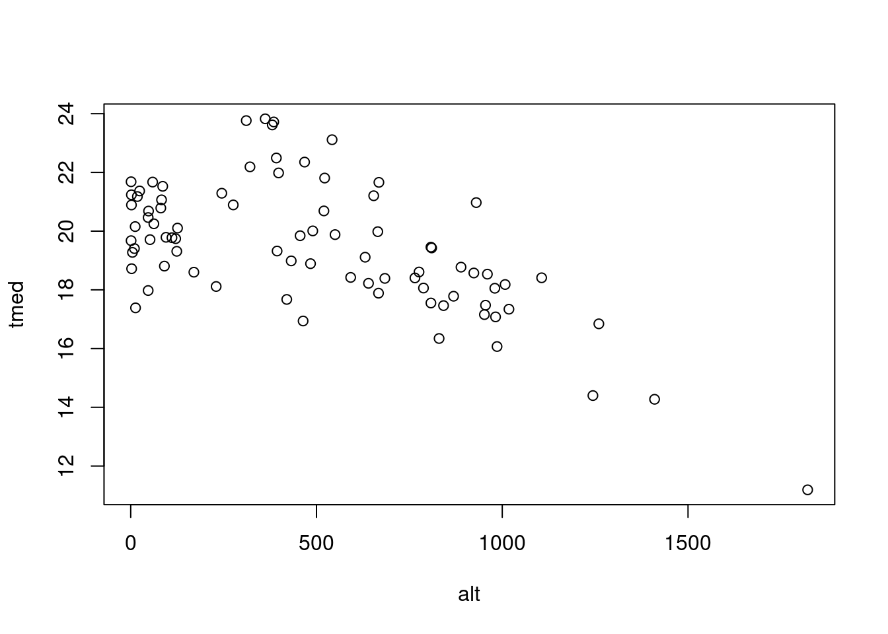
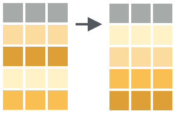
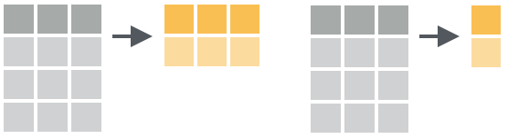
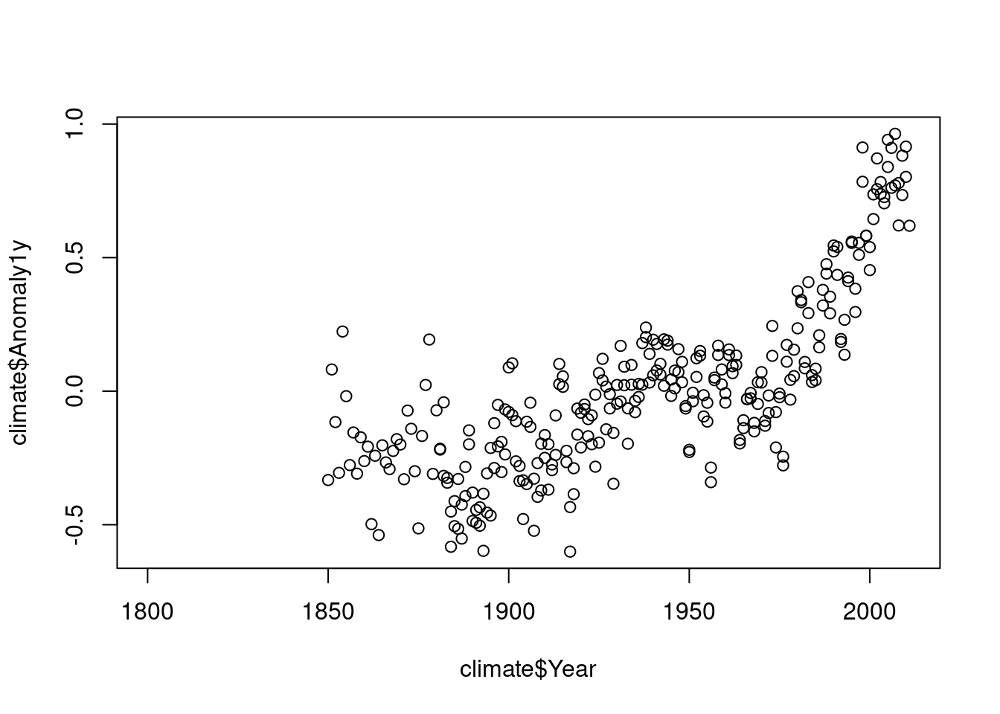
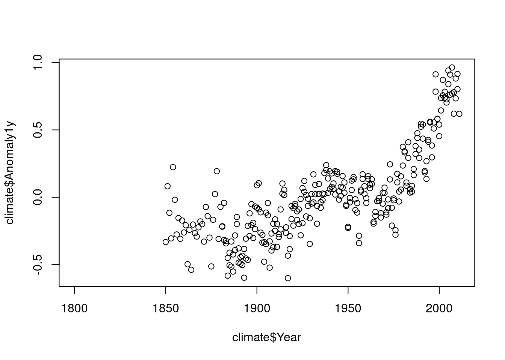

Apresentação

Ilustração: The Project Twins
Este livro é uma composição das notas de aula da disciplina
Análise de Dados Ambientais com  do curso de Graduação em meteorologia que eu ofereço no Departamento de Física da Universidade Federal de Santa Maria (UFSM).
do curso de Graduação em meteorologia que eu ofereço no Departamento de Física da Universidade Federal de Santa Maria (UFSM).
O livro pode ser útil para qualquer um com interesse em aprender o  e que quer alavancar a etapa de processamento de dados ambientais no seu projeto. O objetivo é prover uma material para ensinar os conceitos básicos de programação necessários para o processamento, a visualização e a análise de dados ambientais com o sistema computacional
e que quer alavancar a etapa de processamento de dados ambientais no seu projeto. O objetivo é prover uma material para ensinar os conceitos básicos de programação necessários para o processamento, a visualização e a análise de dados ambientais com o sistema computacional  . Estes procedimentos são potencializados com o uso do software RStudio, uma interface de desenvolvimento integrado (IDE) específica para o
. Estes procedimentos são potencializados com o uso do software RStudio, uma interface de desenvolvimento integrado (IDE) específica para o  .
.
Neste livro o leitor aprenderá a sintaxe básica da linguagem  , a importação e exportação de dados, a criação de gráficos, funções, a padronização e organização de conjunto de dados ambientais; e finalmente, a confecção de relatórios dinâmicos e reproduzíveis.
, a importação e exportação de dados, a criação de gráficos, funções, a padronização e organização de conjunto de dados ambientais; e finalmente, a confecção de relatórios dinâmicos e reproduzíveis.
O material do livro inclui o uso de dados ambientais de diferentes áreas (meteorologia, climatologia, hidrologia, sensoriamento remoto) em exemplos práticos e em exercícios, para estimular a prática da programação.
O texto é intercalado com trechos de códigos que podem ser reproduzidos e os resultados visualizados no computador do leitor.
Após a introdução ao  apresenta-se as capacidades específicas do
apresenta-se as capacidades específicas do  para manipulação de dados. Baseado na experiência do autor são empregados os pacotes mais adequados para cada finalidade, como dplyr e tidyr para o processamento de dados e o ggplot2 para visualização de dados.
para manipulação de dados. Baseado na experiência do autor são empregados os pacotes mais adequados para cada finalidade, como dplyr e tidyr para o processamento de dados e o ggplot2 para visualização de dados.
A intenção do livro é que após a leitura, o leitor tenha o conhecimento suficiente para desenvolver códigos que automatizem tarefas repetitivas, assim reduzindo o tempo gasto na etapa de preparação de dados. Esta programação mais efetiva permitirá focar mais na análise de dados e na comunicação dos resultados, seja ela na forma de documentos acadêmicos, ou relatórios técnicos em empresas públicas e privadas.
O texto está em formato html para tirar o melhor proveito de recursos de multimídia, da capacidade de busca de texto e links para websites.
O texto é organizado em 7 capítulos:
@ref(intro) Introdução
@ref(install) Instalação do
 e RStudio
e RStudio@ref(iu) Interface do Usuário
@ref(rstudio) Rstudio
@ref(operbasic) Operações Básicas
@ref(datatype) Tipos de dados
@ref(estrutura-dados) Estruturas de dados
@ref(io) Entrada de dados
@ref(data-wrangle) Processamento de dados

A versão on-line deste livro está licenciada com uma Licença Creative Commons - Atribuição-NãoComercial-CompartilhaIgual 4.0 Internacional.
(PART) Introdução
1 Motivação
1.1 Análise de dados meteorológicos
Processo pelo qual adquire-se conhecimento, compreensão e percepção dos fenômenos meteorológicos a partir de observações (dados) qualitativas e quantitativas.
1.2 Ciência de dados

1.3 Etapas para abordagem de um problema
- Questão científica/problema
- Obtenção de dados: coleta/medida do(as) estado/condições da atmosfera
- Instrumentos e sensores
- Instrumentos e sensores
- Processamento de dados:
download —> limpeza —> formatação —>
transformação —> controle de qualidade- ferramenta/software
- conhecimento em programação
- ferramenta/software
- Análise de dados
- ferramenta/software
- conhecimento em programação
- ferramenta/software
- Solução para o problema
- Proposta de um modelo
- estatístico, empírico, ou fisicamente baseado
- conhecimento em programação
- Proposta de um modelo
- Apresentação/divulgação/publicação
1.4 Programação computacional


1.5 R
R é o termo usado para se referir a linguagem de programação e ao software que interpreta os scripts escritos usando esta linguagem.
Comunidade fantástica
Contribuidores (R Core Team (2020))
milhares de pessoas usam o R diariamente e ajudam outras pessoas
Software Livre (GPL), Código aberto e multiplataforma
Ambiente para Análise de dados interativa
1.6 Por que o R?
R não é uma GUI (Interface gráfica do usuário) e isso é bom
há uma natural resistência e dificuldade ao uso de códigos e scripts
scripts favorecem a automatização e reprodutibilidade
- força você a ter um conhecimneto mais aprofundado do que está fazendo-
qualquer pessoa (inclusive você mesmo no futuro) pode obter os mesmos resultados do mesmo conjunto de dados
R é integrado com outras ferramentas de que permitem atualizar seus resultados, figuras e análises automaticamente
Acesso ao estado da arte da ciência de dados (Big Data, Data Mining, Machine Learning)
é um software livre, de código fonte aberto e funciona em diversos sistemas operacionais (Linux, Windows e MacOS).
Interface com Fortran, C, C++, Python
-
- R produz gráficos de alta qualidade
R trabalha com dados de todas formas e tamanhos
Extensões para Manipulação de dados

1.8 R não é perfeito!
Muitos códigos em R são escritos para resolver um problema;
- foco nos resultados e não no processo
- usuários não são programadores
- códigos deselegantes, lentos e difíceis de entender
Como o nosso idioma, há muitas exceções para serem lembradas
R não é muito rápido e códigos mal escritos serão lentos
São apenas ~20 anos de evolução
Há muito o que melhorar
1.9 No final deste curso …
(#fig:books-joke)Livros para maestria em programação.
1.10 Para saber mais sobre o R
Documentação oficial - Manuais do R traduzidos
Lista de Livros relacionados ao R
- Livros gratuitos (em inglês)
Fóruns:
lista Brasileira de discussão do programa R: R-br
(PART) Configuração do Sistema
2 Pré-requisitos
Para tirar melhor proveito deste livro, você precisará:
Das versões atualizadas do
-
- se estiver em SO Windows também precisará do programa Rtools.
RStudio: https://rstudio.com/download
-
- Criar uma conta GitHub: https://github.com.2
- Criar uma conta no https://rstudio.cloud.3
2.1 Instalação do R e RStudio
A interação do usuário com o  é por meio da linha de comando. A
interface da linha de comando tem suas vantagens, mas você será mais produtivo
com o uso de uma Interface de Desenvolvimento Integrado (IDE) como o RStudio Desktop.
é por meio da linha de comando. A
interface da linha de comando tem suas vantagens, mas você será mais produtivo
com o uso de uma Interface de Desenvolvimento Integrado (IDE) como o RStudio Desktop.
A seguir veremos como:
instalar o
nos SO Windows e Linux Ubuntumanter o
sempre atualizado no Linux Ubuntuconfigurar um diretório para armazenar os pacotes do R instalados
instalar pacotes
instalar o RStudio Desktop
Neste livro, o maior foco na instalação do  é dada para o SO Linux Ubuntu, pelo fato de assim como o R,
ser um software livre e de código aberto. Como o Linux Ubuntu é baseado no Debian o procedimento de instalação
também se estende a essa distribuição Linux e as versões derivadas do Ubuntu oficialmente reconhecidas.
é dada para o SO Linux Ubuntu, pelo fato de assim como o R,
ser um software livre e de código aberto. Como o Linux Ubuntu é baseado no Debian o procedimento de instalação
também se estende a essa distribuição Linux e as versões derivadas do Ubuntu oficialmente reconhecidas.
A instalação no SO Windows é igual a instalação de qualquer outro software e pode ser facilmente encontrada na internet. Por esta razão, somente indicou-se o caminho de instalação.
2.1.1 Instalando o R
O  pode ser instalado a partir dos binários pré-compilados ou do código fonte. Nós veremos a instalação do
pode ser instalado a partir dos binários pré-compilados ou do código fonte. Nós veremos a instalação do  a partir dos arquivos binários.
a partir dos arquivos binários.
2.1.1.1 Windows
O binário executável do  para o Windows está disponível na Rede Abrangente de Arquivos do
para o Windows está disponível na Rede Abrangente de Arquivos do  (CRAN) e
pode ser baixado aqui.
(CRAN) e
pode ser baixado aqui.
Abra o executável e siga instruções de instalação mantendo todas as opções padrões.
No Windows a instalação do  inclui uma Interface Gráfica do Usuário
(GUI) acessível pelo executável
inclui uma Interface Gráfica do Usuário
(GUI) acessível pelo executável RGui.exe (Figura @ref(fig:r-gui)). Um atalho para esse executável é gerado por default na área de trabalho com o símbolo
do  .
.

(#fig:r-gui)Interface gráfica do usuário no R para Windows.
Para instalar pacotes de plataformas diferentes da CRAN (veja seção @ref(install-github)) é necessário instalar o programa Rtools,
selecionando a versão adequada para sua versão do  .
.
2.1.1.1.1 Atualização do R no Windows
Novas versões do R são disponibilizadas em geral com frequência de 5 vezes por ano. Recomenda-se manter o R atualizado, pois as novas versões incluem aperfeiçoamentos e a correção de bugs.
As novas versões do  vem com os pacotes padrões do R. Os demais pacotes instalados pelo usuário na versão anterior precisam ser reinstalados.
vem com os pacotes padrões do R. Os demais pacotes instalados pelo usuário na versão anterior precisam ser reinstalados.
Para atualizar o  no Windows, ao invés de baixar o executável a
cada nova versão e repetir o processo da seção anterior, você pode utilizar o pacote installr. A instalação de pacotes no
no Windows, ao invés de baixar o executável a
cada nova versão e repetir o processo da seção anterior, você pode utilizar o pacote installr. A instalação de pacotes no  será vista na seção @ref(install-pck).
será vista na seção @ref(install-pck).
2.1.1.2 Linux
2.1.1.2.1 Ubuntu
Há várias formas de instalar o  no Ubuntu. Mas primeiro, caso você
tenha alguma versão antiga do R, desinstale-a com:
no Ubuntu. Mas primeiro, caso você
tenha alguma versão antiga do R, desinstale-a com:
A forma mais fácil de instalar o  é usar a versão compilada no
repositório default do Ubuntu.
é usar a versão compilada no
repositório default do Ubuntu.
Entretanto, como o R é um projeto de evolução rápida, a versão estável mais recente4 não está disponível nos repositórios do Ubuntu. Dessa forma, não conseguimos usufruir dos pacotes mais recentes
(ou em desenvolvimento), que geralmente incluem o estado da arte da ciência de dados. Por esta razão, vamos instalar a última versão do  e de forma
que seja atualizado automaticamente pelo sistema. Isto pode ser feito com os comandos a seguir.
e de forma
que seja atualizado automaticamente pelo sistema. Isto pode ser feito com os comandos a seguir.
$ sudo touch /etc/apt/sources.list.d/cran.list
$ sudo sh -c "echo 'deb https://cloud.r-project.org/bin/linux/ubuntu `lsb_release -sc`-cran35/' >> /etc/apt/sources.list.d/cran.list" - Adicionamos a chave de autenticação7 do repositório.
- Atualizamos a lista de repositórios do sistema.
- Instalamos o R
Para iniciar o  no Linux, digite
no Linux, digite R no cursor do terminal:
$ RA partir desse momento já começamos uma sessão no  . Vamos gerar uma sequência numérica de 1 a 10 e plotá-la.
. Vamos gerar uma sequência numérica de 1 a 10 e plotá-la.

(#fig:Chunck4)Gráfico da sequência de 10 números.
Após este teste, podemos sair do  , sem salvar os dados da seção, com a expressão abaixo:
, sem salvar os dados da seção, com a expressão abaixo:
2.1.1.3 Diretório para pacotes instalados pelo usuário
Os pacotes que vem com os pacotes r-base e r-recommended são instalados no diretório /usr/lib/R/library. Estes pacotes são atualizados pelo sistema8 ou usando sudo apt-get update && sudo apt-get upgrade.
Uma boa prática para os pacotes R instalados pelo usuário é definir um diretório específico. Isso lhe dá mais controle sobre os pacotes do  instalados no sistema. Um local sugerido é o
instalados no sistema. Um local sugerido é o /home/usuario/.R/libs. O seu home ou pasta pessoal pode ser obtido com o comando echo $HOME. Para criar o diretório você pode digitar o comando abaixo:
Para informar ao  onde procurar os pacotes instalados, você precisa criar um arquivo chamado
onde procurar os pacotes instalados, você precisa criar um arquivo chamado .Renviron, no diretório $HOME, contendo a expressão R_LIBS=/home/usuario/.R/libs/. Você pode fazer isso em um terminal com os comandos:
Esse caminho fica então visível ao  , o que pode ser verificado executando a função
, o que pode ser verificado executando a função .libPaths() na linha de comando do  .
.
Abra o  :
:
e ao digitar:
> .libPaths()
[1] "C:/Users/bitev/Documents/R/win-library/3.6"
[2] "C:/Program Files/R/R-3.6.3/library" o seu diretório /home/usuario/.R/libs9 deve aparecer em primeiro lugar. Indicando que este local tem prioridade para instalação dos pacotes. Caso o diretório deixe de existir os diretórios seguintes serão usados.
2.2 Instalação de Pacotes
Um pacote do  é uma coleção de funções, dados e documentação que estende as funcionalidades básicas do R, muito além do que se poderia imaginar. Os pacotes são desenvolvidos pela comunidade do
é uma coleção de funções, dados e documentação que estende as funcionalidades básicas do R, muito além do que se poderia imaginar. Os pacotes são desenvolvidos pela comunidade do  formada por vários contribuidores.
formada por vários contribuidores.
2.2.1 Da internet
2.2.1.1 CRAN
A forma mais fácil de instalar uma pacote do R é através da função install.packages("nome_do_pacote").
Por default o pacote informado é instalado a partir do repositório oficial de distribuição de pacotes: a (CRAN). A CRAN é uma rede de servidores e FTP distribuídas pelo mundo e mantida pela comunidade  . A Fundação R coordena a CRAN e estabelece diversos testes para assegurar que os pacotes publicados sigam as políticas da CRAN.
. A Fundação R coordena a CRAN e estabelece diversos testes para assegurar que os pacotes publicados sigam as políticas da CRAN.
Agora veremos como instalar um pacote. Como exemplo instalaremos o pacote remotes que dispõe de funções para instalar pacotes de repositórios remotos, como por exemplo do GitHub.
Para ter acesso as funções disponibilizadas com o pacote você precisa carregar o pacote:
Apesar de precisar só instalar uma vez um pacote, você precisará carregá-lo a cada nova sessão.
Para desinstalar um pacote você pode usar a função remove.packages("nome_do_pacote").
2.2.1.2 GitHub e R-forge
Nem todos pacotes são disponíveis na CRAN. Muitos desenvolvedores disponibilizam seus pacotes em plataformas como o GitHub e R-forge. As vezes um pacote pode estar em ambos CRAN e GitHub (ou R-forge), mas a última versão - a de desenvolvimento - é somente disponibilizada no GitHub (ou R-forge).
Para instalar um pacote de um repositório do GitHub usa-se a função install_github() do pacote remotes. Portanto, o pacote remotes precisa ser sido instalado primeiro (ver seção @ref(install-cran)).
A função para instalar um pacote do GitHub requer como argumento o nome do usuário/nome do repositório. Por exemplo, para instalar o pacote inmetr do repositório mantido pelo lhmet, usa-se:
library(remotes)
# instala o pacote inmetr do repositório
# https://github.com/lhmet/inmetr
install_github("lhmet/inmetr")
Você pode acessar uma função de um pacote instalado com a forma especial pacote::funcao. O trecho de código anterior poderia ser reduzido a:
remotes::install_github(“lhmet/inmetr”)
Essa forma deixa explícito que estamos usando a função install_github() do pacote remotes.
As vezes você pode estar com diversos pacotes carregados e eles podem ter funções de mesmo nome. Portanto, essa é a alternativa mais segura de avaliar funções afim de evitar conflitos.
Para instalar um pacote num repositório do R-forge, por exemplo o repositório do pacote raster, usa-se:
2.2.1.3 Arquivo fonte local
Códigos fonte de pacotes do R são armazenados como arquivos com a extensão .tar.gz. Binários compilados são armazenados com a extensão .zip. Exemplo de arquivos como estes podem ser baixados manualmente da CRAN (veja a seção Downloads em por exemplo, https://cran.r-project.org/web/packages/remotes/index.html), no GitHub ou R-forge.
Eventualmente um usuário pode instalar um pacote a partir desses arquivos localmente. Isto pode também ser feito com a função install.packages(), especificando o argumento repos = NULL e o argumento pkgs com o caminho do arquivo. Por exemplo:
2.2.2 Atualização de pacotes
Se o seu  foi atualizado, os pacotes da versão prévia do
foi atualizado, os pacotes da versão prévia do  devem ser reinstalados para evitar problemas de compatibilidade. O comando abaixo atualiza todos pacotes para a última versão. A opção
devem ser reinstalados para evitar problemas de compatibilidade. O comando abaixo atualiza todos pacotes para a última versão. A opção checkbuild = TRUE reinstala os pacotes que foram construídos uma versão mais antiga que a do  atual.
atual.
Se você usa muitos pacotes, este processo pode tornar-se trabalhoso e problemático, devido a cadeia de dependências de alguns pacotes. Por esta razão, há pacotes para facilitar este processo, como o rvcheck.
Com o rvcheck podemos:
- checar a versão mais recente do R
- checar a versão mais atual de um pacote na CRAN, no GitHub ou no Bioconductor
Por fim, para atualizar todos os pacotes:
Se você precisa manter a versão dos seus pacotes em uma nova versão do R, o pacote pkgsnap é uma solução. Esta opção é útil para evitar que mudanças nas versões dos pacotes possam fazer com que seu código se comporte de maneira diferente.
2.3 Pacotes necessários e dependências
Ao longo deste livro serão usados diversos pacotes para o processamento de dados ambientais. A maioria dos pacotes não vêm com o  .
.
Alguns pacotes dependenm de bibliotecas do Linux e precisamos instalá-las antes da instalação no  .
.
pcks <- c(
"easypackages",
"rmarkdown",
"knitr",
"pander",
"htmlTable",
"styler",
"tidyverse",
"rio", # instala readxl, openlxlsx, data.table, foreign, haven, feather,
# readODS, jsonlite, rmatio
"writexl",
"microbenchmark",
"ncdf4",
"raster",
"openair",
"lubridate",
"fields",
"viridis",
"WriteXLS",
"gcookbook"
)
pcks_dev <- c(
"vembedr",
"inmetr"
)2.4 RStudio no Ubuntu
RStudio é uma empresa que desenvolve ferramentas gratuitas para o  e produtos pagos para empresas.
e produtos pagos para empresas.
Uma de suas ferramentas gratuitas é o software RStudio Desktop que consiste em um ambiente integrado de desenvolvimento (IDE) construído especificamente para o  . Ele funciona é multiplataforma (servidores inclusive) e fornece diversos recursos, como a integração com controle de versão e manejo de projetos.
. Ele funciona é multiplataforma (servidores inclusive) e fornece diversos recursos, como a integração com controle de versão e manejo de projetos.
Para instalação da versão do RStudio Desktop, você precisa saber se seu SO é 64 ou 32-bit e a versão do Linux Ubuntu. Essas informações podem ser obtidas, respectivamente, pelos comandos:
x86_64Se retornar x86_64 sua máquina é 64-bit.10
18.04Com essas informações, você pode selecionar o RStudio adequado para o seu sistema e baixá-lo (Figura @ref(fig:rstudio-download)).

(#fig:rstudio-download)Opção para baixar o RStudio Desktop.
Ao clicar sobre o arquivo baixado com o botão direito, há a opção de abrir com Ubuntu Software Center e então clicar em instalar. Se no seu sistema não houver esta opção, instale via terminal11 com os seguintes comandos:
$ cd /local/do/arquivo/baixado/rstudio-x.y.zzzz-amd64.deb
$ sudo dpkg -i rstudio-x.y.zzzz-amd64.deb
$ sudo apt-get install -fAbra o RStudio digitando no terminal:
$ rstudio &Agora você está pronto para começar a programar em  aproveitando as facilidades que o RStudio oferece.
aproveitando as facilidades que o RStudio oferece.
2.5 Git e Github
Git é um sistema de controle de versão que permite você rastrear as mudanças feitas em arquivos. Estes arquivos podem ser de qualquer tipo (.R, .Rmd, .doc, .pdf, .xls), mas a visualização das diferenças em arquivos texto é mais fácil (.txt, .csv, .md). Na prática, você verá o git como um conjunto de comandos que você executa na shell.12
O GitHub é um dos maiores depósitos online de trabalho colaborativo do mundo. Ele é a rede social dos programadores. Nele você pode ver no que eles estão trabalhando, ler facilmente o código deles e fazer sugestões ou alterações. Isso só possível porque sua plataforma inclui um sistema de gerenciamento de projetos e de versões de códigos (git).
2.5.1 Instalação do git
Acesse https://git-scm.com/downloads e selecione para baixar a opção do git adequada para seu SO.
2.5.1.1 Windows
Para instalar o git proceda a instalação como a de qualquer outro programa, aceitando as opções padrão. Ao terminar, verifique a instalação abrindo o gitbash (acessível no menu iniciar) e digitando git --version.
2.5.1.2 Ubuntu
A instalação do git no Ubuntu pode ser feita com os comandos abaixo:
# atualização da lista de repositórios ubuntu
$ sudo apt-get update
# instalação do Git
$ sudo apt-get install gitAo terminar, verifique a instalação digitando num terminal o comando git --version. A versão disponível nos repositórios do Windows 10 x64 quando este livro foi escrito era a gsub("git version ", "", system("git --version", intern = TRUE)).
2.5.1.3 Git no RStudio
Nesta seção vamos usar a funcionalidade do git através do RStudio. Um procedimento muito comum em um projeto com controle de versão é clonar um repositório do github (repositório remoto) para o seu computador (repositório local). Neste exemplo será usado o repositório remoto lhmet/gittutor-adar. Siga as instruções a seguir para reproduzir este processo.
Abra o RStudio, acesse File ▶ New Project ▶ Version Control .
Em Repository URL insira
https://github.com/lhmet/gittutor-adarEm Create project as subdirectory of:: navegue até a pasta onde deseja salvar o diretório que conterá o repositório.13
- Clique em Create Project e siga os passos indicados na Figura @ref(fig:git-proj-rstudio).

(#fig:git-proj-rstudio)Procedimentos para clonar um repositório do github no seu computador.
Após estes procedimentos você tem o git instalado e já sabe como clonar um repositório do github em um diretório do seu computador.
(PART) Interação
3 Interface do Usuário
Na maior parte do tempo você provavelmente usará o  no modo interativo: rodando comandos e vendo os resultados.
no modo interativo: rodando comandos e vendo os resultados.
Eventualmente esse processo pode ser inconveniente. Por exemplo, no caso de uma análise com um código bem extenso e que precisa ser repetida com dados atualizados semanalmente. Nessa situação, recomenda-se a criação de um script, ou seja, um arquivo texto, com a extensão .R, contendo o código de sua análise.
Esse script pode ser executado pelo R no modo de processamento em lote (do termo em inglês Batch Processing) através de um terminal do SO Linux, ou via o Prompt de comando (cmd.exe) do SO Windows.
Nesta seção apresenta-se ao leitor estes dois modos de execução do  .
.
3.1 R no modo interativo
No Linux o  pode ser aberto simplesmente digitando em um terminal a letra
pode ser aberto simplesmente digitando em um terminal a letra R.
R version 3.6.3 (2020-02-29) -- "Holding the Windsock"
Copyright (C) 2020 The R Foundation for Statistical Computing
Platform: x86_64-pc-linux-gnu (64-bit)
R is free software and comes with ABSOLUTELY NO WARRANTY.
You are welcome to redistribute it under certain conditions.
Type 'license()' or 'licence()' for distribution details.
Natural language support but running in an English locale
R is a collaborative project with many contributors.
Type 'contributors()' for more information and
'citation()' on how to cite R or R packages in publications.
Type 'demo()' for some demos, 'help()' for on-line help, or
'help.start()' for an HTML browser interface to help.
Type 'q()' to quit R.
>A janela com a linha de comando do  apresenta o prompt do
apresenta o prompt do  (
(>). Após este símbolo digitamos os comandos, pressionamos a tecla <enter>, o  interpreta o comando e retorna o resultado.
interpreta o comando e retorna o resultado.
Os comandos digitados na linha de comando são chamados de expressões. Esse é o modo iterativo do  . Portanto, a linha de comando é a mais importante ferramenta do
. Portanto, a linha de comando é a mais importante ferramenta do  , pois todas expressões são avaliadas através dela.
, pois todas expressões são avaliadas através dela.
A expressão é avaliada pelo  , o resultado é mostrado, mas o seu valor é perdido.
, o resultado é mostrado, mas o seu valor é perdido.
O número entre colchetes que aparece como resultado da operação (“[1]” no caso acima) indica o conteúdo resultante da operação iniciando na posição 1 desse objeto. O significado dessa informação torna-se mais óbvio quando trabalhamos com objetos maiores, como por exemplo com vetores. Observe os valores nos colchetes para uma sequência de 100 até 1.
> 100:1
[1] 100 99 98 97 96 95 94 93 92 91 90 89 88 87 86 85 84 83
[19] 82 81 80 79 78 77 76 75 74 73 72 71 70 69 68 67 66 65
[37] 64 63 62 61 60 59 58 57 56 55 54 53 52 51 50 49 48 47
[55] 46 45 44 43 42 41 40 39 38 37 36 35 34 33 32 31 30 29
[73] 28 27 26 25 24 23 22 21 20 19 18 17 16 15 14 13 12 11
[91] 10 9 8 7 6 5 4 3 2 1O elemento [18] da sequência de 100 até 1 é o número 83.
Pode ocorrer da expressão digitada na linha ser muito extensa e ir além de uma linha. Se a expressão estiver incompleta o  mostra um sinal de
mostra um sinal de +.
Execute a expressão abaixo até o sinal de menos e tecle <enter>. Enquanto a instrução não estiver completa o sinal de + se repetirá. Você pode cancelar a execução digitando Ctrl + c ou Esc. No código abaixo isso acontecerá até que você digite o número que deseja subtrair de 4, no caso de o número 3.
3.1.1 Expressões em sequência
Podemos executar todas expressões anteriores em apenas uma linha, usando o ponto e vírgula ; para separar as expressões:
> 62 + 38; 100:1; 1 * 2 * 3 * 4 * 5 * 6 * 7 * 8 * 9 * 10; 4 - 3
[1] 100
[1] 100 99 98 97 96 95 94 93 92 91 90 89 88 87 86 85 84 83
[19] 82 81 80 79 78 77 76 75 74 73 72 71 70 69 68 67 66 65
[37] 64 63 62 61 60 59 58 57 56 55 54 53 52 51 50 49 48 47
[55] 46 45 44 43 42 41 40 39 38 37 36 35 34 33 32 31 30 29
[73] 28 27 26 25 24 23 22 21 20 19 18 17 16 15 14 13 12 11
[91] 10 9 8 7 6 5 4 3 2 1
[1] 3628800
[1] 13.1.2 Navegação entre as expressões já avaliadas
Você pode usar as teclas ↑ e ↓ para navegar entre as expressões já avaliadas pelo  . O que é útil quando precisamos repetir um comando anterior com alguma mudança ou para corrigir um erro de digitação ou a omissão de um parênteses.
. O que é útil quando precisamos repetir um comando anterior com alguma mudança ou para corrigir um erro de digitação ou a omissão de um parênteses.
Quando a linha de comando é usada por muito tempo a sua tela pode ficar poluída com a saída das expressões anteriores. Para limpar a tela, tecle Ctrl+l. Assim o console aparece na parte superior do terminal.
> 15 + 4
[1] 19
> 100:1
[1] 100 99 98 97 96 95 94 93 92 91 90 89 88 87 86 85 84 83
[19] 82 81 80 79 78 77 76 75 74 73 72 71 70 69 68 67 66 65
[37] 64 63 62 61 60 59 58 57 56 55 54 53 52 51 50 49 48 47
[55] 46 45 44 43 42 41 40 39 38 37 36 35 34 33 32 31 30 29
[73] 28 27 26 25 24 23 22 21 20 19 18 17 16 15 14 13 12 11
[91] 10 9 8 7 6 5 4 3 2 1Para parar ou cancelar a execução de uma expressão utilize Ctrl+c.
3.1.3 Comentários
No  , a cerquilha
, a cerquilha # (hashtag) é um caractere especial. Qualquer coisa após esse caractere será ignorada pelo  . Somente as expressões antes da
. Somente as expressões antes da # são avaliadas. Com esse símbolo podemos fazer anotações e comentários no código sem atrapalhar a interpretação das expressões pelo  .
.
Comentários que não desejo ver você fazendo após este curso:
# Não sei por que isso funciona, mas resolve o problema.
# rm(list = ls()) # Se esta linha for descomentada o programa explodirá
# Este código é péssimo, você sabe e eu sei, mas são 3 horas da manhã e preciso que isso funcione.
# Se, futuramente, ler isso, voltarei no tempo e me matarei.
# Isto é magia negra de algum link do stackoverflow. Não brinque com magia, ela pode te arrancar pedaço.
# Este código funcionou antes, mas meu gato decidiu fazer uma viagem pelo meu teclado ...
# Se você está lendo isso, significa que você foi encarregado
# do meu projeto anterior. Eu sinto muito por você. Boa Sorte
# Vá com Deus.
# Quando eu escrevi isso, somente Deus e eu entendemos o que estava fazendo. Agora, somente Deus sabe.
# Haleluya eu posso ir para casa!
# Traduzido e adaptado de
# https://medium.com/javascript-in-plain-english/part-2-the-most-hilarious-code-comments-ever-9586592e3bec 3.1.4 Auto preenchimento de funções
O  inclui o preenchimento automático de nomes de funções e arquivos por meio da tecla
inclui o preenchimento automático de nomes de funções e arquivos por meio da tecla <tab>. Uma lista de possíveis funções que começam com as letras inicialmente digitadas aparecerão.

(#fig:unnamed-chunk-4)Auto preenchimento de código na linha de comandos do R.
3.1.5 Primeiro script
O trecho de código abaixo apresenta nas primeiras linhas algumas expressões do  executadas anteriormente. Mas há também, na segunda parte, códigos para salvar um gráfico de pontos num arquivo pdf. Na última parte do trecho, define-se uma variável
executadas anteriormente. Mas há também, na segunda parte, códigos para salvar um gráfico de pontos num arquivo pdf. Na última parte do trecho, define-se uma variável x que contém aquela mesma sequência numérica usada no gráfico.
# Primeiro script no R
#----------------------------------------------------------------
# cálculos básicos
15 + 4
1:100
1 * 2 * 3 * 4 * 5 * 6 * 7 * 8 * 9 * 10
4 - 3
#----------------------------------------------------------------
# salvando um gráfico em um arquivo pdf
arquivo_pdf <- "plot-script1.pdf"
pdf(arquivo_pdf) # cria e abre um arquivo pdf
plot(1:100) # gera o gráfico
dev.off() # fecha o arquivo pdf
#----------------------------------------------------------------
# definindo uma variável x
x <- 1:100
xEste conjunto de linhas de código, quando inseridos em um arquivo texto14 formam um primeiro script  . Este script pode ser executado pelo
. Este script pode ser executado pelo  através da função
através da função source(), usando como argumento o caminho para o local do script.
Este script produzirá como saída o arquivo /home/usuario/adar/plot-script1.pdf. Você pode visualizar o arquivo para conferir o gráficos de pontos gerado.
3.2 R no modo de processamento em lote
Para rodar um script no modo de processamento em lote do  através do seguinte comando no terminal Linux:
através do seguinte comando no terminal Linux:
$ R CMD BATCH opcoes arqentrada arqsaidaOnde: arqentradaé o nome do script (arquivo com a extensão .R) a ser executado; arqsaida é o arquivo (com a extensão .Rout) com as saídas dos comandos executados no R; opcoes é a lista de opções que controlam a execução.
Vamos rodar como exemplo, o script1.R da seção @ref(primeiro-script).
$ R CMD BATCH /home/usuario/adar/script1.RO comando acima, produzirá dois arquivos de saída:
script1.Rout15 criado por default quando oarqsaidanão é especificado, e;
- arquivo "plot-script1.pdf".
Você pode especificar o nome do arqsaida como desejar. No exemplo abaixo, mostra-se como salvar o arquivo de saída incluindo a data em que ele foi gerado, script1-saida-adatadehoje.log.
$ R CMD BATCH script1.R script1-saida-`date "+%Y%m%d"`.logApós a execução do último comando, os mesmos arquivos resultantes do comando anterior serão gerados, exceto pelo primeiro (.Rout), que será nomeado script1-saida-20200530.Rout.
Para mais opções do comando R CMD BATCH digite no terminal do Linux R --help.
4 RStudio
O RStudio Desktop é um ambiente integrado de desenvolvimento (IDE) para o  . Portanto, o RStudio depende da instalação prévia do
. Portanto, o RStudio depende da instalação prévia do  . Ele funciona como uma interface gráfica do usuário (GUI), mas com muito mais potencialidades.
. Ele funciona como uma interface gráfica do usuário (GUI), mas com muito mais potencialidades.
O RStudio é uma ferramente que potencializará sua interação com o  :
:
na produção de gráficos
na organização de seu código na forma de projetos
na reprodutibilidade de seu trabalho ou pesquisa
na manutenção e criação de seus próprios pacotes do R
na criação e compartilhamento de seus relatórios
no compartilhamento de seu código e a colaboração com outros
Nessa seção você terá uma visão geral do RStudio Desktop.
4.1 Visão geral do RStudio
Assumindo que o RStudio tenha sido instalado (seção @ref(install-rstudio)), ao abri-lo e clicar em File ▶ New File ▶ R Script você verá uma tela com aspecto similar ao da Figura @ref(fig:rstudio-fig).

(#fig:rstudio-fig)Rstudio
O RStudio possui 4 painéis principais:
Editor para scripts e visualização de dados
abrir e criar scripts
rodar scripts
código com sintaxe realçada
rodar partes do código Ctrl+Enter
rodar todo script Ctrl+Shift+s
autopreenchimento das funções Tab
comentar linhas de um script Ctrl+Shift+c
desfazer Ctrl+z
refazer Ctrl+Shift+z
referência para teclas de atalho Alt+Shift+k
abrir script cujo nome aparece no código em visualização no painel Source Ctrl+click
buscar e substituir termos Ctrl+f
comentar texto em R Markdown Ctrl+Shift+c
Console do R
Navegador do espaço de trabalho e histórico de comandos
Arquivos/Plots/Pacotes/Ajuda/Visualizador
Configuração de texto e painéis em:
- Menus
Tools ▶ Global Options ▶ Appearance* mostrar linhas, alterar realce da sintaxe * Session * Plots
A Folha de referência do RStudio (Figura @ref(fig:rstudio-cheat-sheet))) fornece uma visão geral das suas principais funcionalidades.

(#fig:rstudio-cheat-sheet)Folha de referência do RStudio, disponível em https://www.rstudio.com/wp-content/uploads/2016/03/rstudio-IDE-cheatsheet-portuguese.pdf
4.2 Verificação ortográfica
O RStudio oferece o recurso de verificação ortográfica do texto. No caso de línguas diferentes da Inglesa é necessário instalar os dicionários para outras línguas. Os dicionários podem ser instalados indo em Tools ▶ Global Options, selecionando Spelling no painel à esquerda e Install More Languages na caixa de seleção dos dicionários de línguas (Figura @ref(fig:rstudio-spell-config)). Dessa forma, os dicionários de 28 linguagens serão instalados.

(#fig:rstudio-spell-config)Configuração do RStudio para instalar dicionários de outras línguas.
Após a adição dos dicionários, acesse novamente a caixa de seleção de dicionários e selecione Portuguese (Brazil) e depois clique em ok (Figura @ref(fig:rstudio-set-dict)).
(#fig:rstudio-set-dict)Configuração do dicionário de Portugês-BR no RStudio.
Agora você pode evitar erros ortográficos nos seus relatórios e demais documentos escritos em R Markdown através da tecla F7 (ou Edit ▶ Check Spelling).
(PART) Fundamentos do R
5 Operações básicas
Nesta seção veremos:
- operações aritméticas básicas com
- a atribuição de valores a uma variável
- o uso de funções matemáticas internas do
- valores numéricos especiais do
- os cuidados ao nomear variáveis
5.1 Convenção
A partir deste capítulo, os códigos a serem avaliadas no  terão o prompt do
terão o prompt do  (
(>) omitidos. Essa convenção é para tornar mais fácil a ação de copiar e colar os códigos na linha de comando do  . O resultado da avaliação das expressões será mostrado precedido do símbolo (
. O resultado da avaliação das expressões será mostrado precedido do símbolo (#>). Esses valores são os resultados que esperam-se sejam reproduzidos pelo leitor na sessão do  em seu computador. Por exemplo:
em seu computador. Por exemplo:
No trecho de código acima, a primeira linha contém o código a ser copiado pelo leitor para execução em seu computador. A segunda linha é a saída do código avaliado pelo R.
5.2 Calculadora
O  é uma calculadora turbinada com diversas funções matemáticas disponíveis. Para quem não conhece o
é uma calculadora turbinada com diversas funções matemáticas disponíveis. Para quem não conhece o  , essa uma forma de familiarizar-se com a linha de comandos.
, essa uma forma de familiarizar-se com a linha de comandos.
5.2.1 Aritmética básica
Todas operações feitas em uma calculadora podem ser realizadas no painel com console do  no RStudio. Podemos calcular diversas operações em uma expressão:
no RStudio. Podemos calcular diversas operações em uma expressão:
Além de números e operadores artiméticos a expressão acima inclui a constante pré-definida (\(\pi\)): pi (=3.1415927).
Note que no R, o separador decimal é o ponto “.”, ao invés da vírgula “,” usada na notação brasileira. As vírgulas tem a finalidade de separar os argumentos nas chamadas de funções, tal como log(10, 10), que veremos na seção (???)(matfuns) .
As operações no  seguem a mesma ordem de precedência que aprendemos em matemática na escola:
seguem a mesma ordem de precedência que aprendemos em matemática na escola:
parênteses:
()expoentes:
^ou**multiplicação:
*divisão:
/
Então os parênteses podem ser usados para forçar a ordem das operações acima conforme nossa intenção:
10 + ((8^2) / 4) - pi # parênteses opcionais se você lembrar a regra
#> [1] 22.85841
(10 + 8^2) / 4 - pi
#> [1] 15.35841
(10 + 8)^2 / 4 - pi
#> [1] 77.85841
(10 + 8^2 / 4) - pi
#> [1] 22.85841
10 + (8^2) / (4 - pi)
#> [1] 84.55668
10 + 8^(2 / 4) - pi
#> [1] 9.686834
10 + 8^(2 / 4 - pi)
#> [1] 10.00412Se você quer saber se um número é divisor exato de outro número (resto da divisão igual a zero), o operador %% determina o resto de uma divisão:
O operador %/% fornece a parte inteira do quociente da divisão entre 2 números.
Operações que resultam em números muito pequenos ou muito grandes são representados em notação científica.
Este mesmo valor pode ser escrito nas seguintes formas equivalentes:
O valor absoluto e o sinal de um número podem ser obtidos pelas seguintes expressões:
5.2.2 Cálculos problemáticos
Quando um cálculo não tem sentido matemático ou não pode ser propriamente realizado (Tabela @ref(tab:tab-num-esp)) surgirão alguns valores numéricos especiais na sua frente, como: Inf(Infinito) e NaN (abreviação do termo em inglês Not a Number - valor indefinido).
| operação | resultado |
|---|---|
| 2/0 | Inf |
| -12/0 | -Inf |
| log(0) | -Inf |
| (c(-3, 3))^Inf | NaN, Inf |
| 0*Inf | NaN |
| log(-0.5) | NaN |
| sqrt(-1) | NaN |
| 0/0 | NaN |
| Inf-Inf | NaN |
| mean(c(NA, NA), na.rm = TRUE) | NaN |
A demonstração das diferentes formas de se obter essas constantes especiais é importante para entender a origem delas ao rodar um script longo.
Por outro lado, há operações válidas com estes valores especiais.
5.2.3 Dados faltantes
Antes do que você imagina, na sua jornada pelo mundo real dos dados ambientais, você irá se deparar com os "NAs". NA é a abreviação do termo em inglês Not Available, uma constante especial do  que representa dado faltante. Geralmente dados faltantes são representados por um código16 como "-999.99" ou qualquer outro valor fora do intervalo de variação possível da variável.
que representa dado faltante. Geralmente dados faltantes são representados por um código16 como "-999.99" ou qualquer outro valor fora do intervalo de variação possível da variável.
A coisa mais importante a saber sobre NA é que qualquer operação envolvendo NA resultará em NA (Tabela @ref(tab:tab-nas)).
| operação | resultado |
|---|---|
| NA + 5 | NA |
| sqrt(NA) | NA |
| NA^2 | NA |
| NA/NaN | NA |
5.2.4 Funções matemáticas
O  tem diversas funções internas. A sintaxe para chamar uma função é simplesmente:
tem diversas funções internas. A sintaxe para chamar uma função é simplesmente:
funcão(argumento)
Por exemplo:
# cosseno de 60°
cos(60 * pi / 180)
#> [1] 0.5
# raiz quadrada de 100
sqrt(100)
#> [1] 10
# exponencial de 1
exp(1)
#> [1] 2.718282
# fatorial de 4 (4*3*2*1)
factorial(4)
#> [1] 24Por padrão a função logaritmo (log()) determina o logaritmo natural (logaritmo na base \(e\)).
Para obter o logaritmo de 10 na base 10, o segundo argumento da função log() deve ser especificado, ou pode-se usar a função log10().
No  você verá que parênteses são frequentemente utilizados. Em geral, uma palavra antecedendo um parênteses em uma expressão: é uma função.
você verá que parênteses são frequentemente utilizados. Em geral, uma palavra antecedendo um parênteses em uma expressão: é uma função.
Você não precisa lembrar do nome de cada função do  . Você pode ou buscar pelo termo em um site de busca, ou usar o auto-preenchimento de código (
. Você pode ou buscar pelo termo em um site de busca, ou usar o auto-preenchimento de código (
Digitando ? antes do nome de uma função ou operador abrirá a página de ajuda daquela função.
5.3 Variáveis
Até agora nós usamos expressões para fazer uma operação e obter um resultado. O termo "expressão" significa uma sentença de código que pode ser executada. Se a avaliação de uma expressão é salva usando o operador <-, esta combinação é chamada de operador atribuição. A expressão geral para definir uma variável é:
variavel <- valor
Uma atribuição armazena o valor (no lado direita da atribuição) em uma variável17 (no lado esquerdo da atribuição). Então uma variável é um nome usado para guardar os dados. Os valores dos dados podem ser de diferentes tipos, como veremos na seção @ref(tipos-dados).
Quando uma variável recebe um valor, o  não imprime nada no console.
não imprime nada no console.
Para visualizar o valor de uma variável, digite o nome da variável na linha de comando, ou imprima seu valor com a função print().
O  diferencia letras maiúsculas de minúsculas.
diferencia letras maiúsculas de minúsculas.
Como criamos apenas a variável m_kg, M_kg não foi encontrada.
A variável m_kg pode ser utilizado para criar outras variáveis.
Os espaços em torno do operador de atribuição (<-) não são obrigatórios mas eles ajudam na legibilidade do código. Veja as diferentes interpretações que as expressões abaixo podem ter dependendo de como os espaços são posicionados em torno da variável g.
g <- 9.8 # g é igual a 9.8
g < -9.8 # g é menor que -9.8 ?
g<-9.8 # g é igual a 9.8 ou é menor que -9.8 ?Nós estamos definindo a variável, digitando o nome dela na linha de comando e teclando enter para ver o resultado. Há uma forma mais prática de fazer isso. Para criar e já mostrar o resultado da variável, podemos colocar parênteses em torno da atribuição:
Podemos criar uma variável baseado em variáveis criadas previamente. Por exemplo, vamos definir a variável peso, como \(p_{kg} = m_{kg}.g\):
Se alterarmos o valor de uma das variáveis isso não mudará o valor da outra:
O antigo valor de m_kg será sobrescrito. Mas, embora p_kg tenha sido definida a partir de m_kg, seu valor permanecerá o mesmo. Esse comportamento que nos permite compreender o que acontece quando temos várias expressões em sequência num script.
Para saber as variáveis já criadas numa sessão  , use a função
, use a função ls()18 para verificar as variáveis existentes:
5.3.1 Removendo variáveis
Para remover variáveis usa-se a função rm(). Vamos remover a variável m criada previamente e ver a lista de objetos no espaço de trabalho.
Podemos remover mais de uma variável ao mesmo tempo.
Para remover todas variáveis do espaço de trabalho (use com cautela):
5.4 Erros comuns
As expressões abaixo ilustram o que acontece quando cometemos alguns erros bem comuns ao trabalhar com  :
:
srt(2)
#> Error in srt(2): não foi possível encontrar a função "srt"
m * g
#> Error in eval(expr, envir, enclos): objeto 'm' não encontrado
setwd("algum/caminho/no/alem")
#> Error in setwd("algum/caminho/no/alem"): não é possível mudar o diretório de trabalho
save(file = "algum/outro/caminho/no/alem")
#> Warning in save(file = "algum/outro/caminho/no/alem"): nothing specified to be
#> save()d
#> Warning in gzfile(file, "wb"): não foi possível abrir o arquivo comprimido
#> 'algum/outro/caminho/no/alem', motivo provável 'No such file or directory'
#> Error in gzfile(file, "wb"): não é possível abrir a conexãoReconhecemos um erro pela presença da palavra Error na mensagem e por estar destacada em vermelha ou laranja, dependendo de como o RStudio está configurado. O que tem depois do ":" na mensagem é uma tentativa do  nos dizer o que deu errado.
nos dizer o que deu errado.
As mensagens de erro são suas amigas. Sempre leia as mensagens de erro. Elas serão incompreensíveis no início, mas acabarão fazendo mais sentido e tornando-se útil (eu espero). Essa maneira de aprender só funciona se lermos as mensagens de erro em primeiro lugar.
No trecho de código acima, na avaliação da expressão com a função save() surge primeiro um Warning (aviso). Avisos surgem quando algo inesperado ocorreu, mas que as coisas ainda podem dar certo. Outro exemplo de mensagem de aviso é:
Na expressão acima foi possível obter um resultado, mas o R avisa que foi produzido NaN. Como visto na seção @ref(nans), qualquer operação derivada deste resultado produzirá NaN.
Algumas vezes, as mensagens de erro e aviso podem não fazer sentido nem mesmo para usuários experientes, então fica a dica de consulta para referência (Figura @ref(fig:google-it)).

(#fig:google-it)Aprenda como descobrir qual o significado das mensagens de erro.
5.5 Boas práticas para códigos de boa qualidade
Uma codificação em bom estilo é como usar a pontuação corretamente. Você pode até escrever sem usá-la, mas ela certamente deixa as coisas mais fáceis de ler.
— Hadley Wickham
A medida que a complexidade dos códigos aumenta, você perceberá que a organização é imprescindível para rápida compreensão dele por você mesmo no futuro, pelos usuários e colaboradores. Um bom código não deve focar somente no desempenho de execução, mas também em sua simplicidade, legibilidade, o que inerentemente facilita sua manutenção por outros contribuidores.
Para deixar seu código compreensível uma boa referência é o Guia de estilo de codificação tidyverse. Um guia bastante utilizado pela comunidade  e adotado pela Google.
e adotado pela Google.
A aplicação de todas as regras de formatação de código do tidyverse podem ser difíceis de ser lembradas. Mas este problema pode ser amenizado com o pacote styler que fornece funções para estilizar o seu código no padrão tidyverse. Para utilizá-lo, instale o pacote styler.
As funções são acessíveis Através do menu Addins do RStudio e incluem as opções de: estilizar um arquivo e uma região destacada do código (Figura @ref(fig:styler-addin)).

(#fig:styler-addin)Exemplo de aplicação do Estilo de codificação tidyverse.
A convenção de estilo dos seus códigos é uma escolha sua. Eu indico o estilo tidyverse, mas você pode optar por outro. O mais importante é ser consistente.
5.5.1 Nomes de variáveis
“Há somente duas coisas difíceis em Ciência da Computação: invalidação de cache e escolher nomes para as coisas.”
— Phil Karlton
Na seção (@ref(variaveis)), vimos como criar variáveis. Este procedimento, implica em definir um nome para variável. Dar nomes claros, objetivos e coerentes para variáveis, funções, e argumentos é difícil.

(#fig:meanningfull-vnames)Nomes de variáveis com significado.
A falta de clareza as vezes é compensada por excesso de comentários no código. Porém, hoje em dia, a prática de comentar o máximo possível está obsoleta e danosa.
O bom código é sua própria melhor documentação. Quando você for a adicionar um comentário, se pergunte, “Como eu posso melhorar o código para que o este comentário não seja necessário?” Melhore o código e então o documente para torná-lo ainda mais claro.
— Steve McConnell
De forma geral, podemos listar os seguintes cuidados ao nomear variáveis no  :
:
usar nomes claros, objetivos e coerentes
não iniciar com um número, ponto (
.) ou sublinhado (_) e não conter espaçosnão usar acentos e caracteres especiais
^, !, $, @, +, -, /, ou *evitar o uso de nomes reservados do
(funções internas, constantes e etc):c q s t C D F I T diff exp log mean pi range rank var FALSE Inf NA NaN NULL TRUE break else for function if in next repeat whileusar
<-para atribuição (colocar um espaço antes e depois) e deixe o=para argumentos de funções.não colocar
;no final de uma linha e evite vários comandos na mesma linha.usar somente letras minúsculas, números (após a primeira letra do nome). Use o
_ou sublinhado para separar palavras dentro de um nome de variável longo(caso cobra).
5.6 Exercícios
- Execute as seguintes expressões no R mostrando os resultados obtidos.
- Utilize uma expressão para cada item.
- Escolha um número e some 3 a ele.
- Multiplique o resultado por 2.
- Subtraia 10 da resposta.
- Divida o que foi obtido por 4.
- Calcule \(\sqrt{16}\), \({16^{0.5}}^{3}\), \({(16^{0.5})}^{3}\) e \(4^{\frac{3}{2}}\).
- Teste as expressões
log10(1000),log(1000),exp(log(1000)). Depois teste a expressãolog2(64). Verifique se você entendeu as diferentes funções logarítmicas.
Defina as variáveis abaixo tomando cuidados ao nomear as variáveis, conforme visto em sala de aula. Mostre os valores para as seguintes constantes:
Velocidade da luz: \(\nu = 2.998 \times 10^{8} \left[m \, s^{-1}\right]\)
Carga elementar ou eletrônica: \(e = 1.602 \times 10^{-19} \left[C\right]\)
Permissividade do vácuo: \(\epsilon_{0} = 8.85 \times 10^{-12} \left[C^{2} \, N^{-1} \, m^{2}\right]\)
Constante de Planck: \(h=6.626 \times 10^{-34} \left[J \, s\right]\)
Constante de Stefan Boltzman: \(\sigma = 5.67 \times 10^{-8} \left[W \, m^{-2} \, K^{-4}\right]\)
Constante solar: \(S_{0} = 1380 \left[W \, m^{-2}\right]\)
Constante de Avogadro: \(N_{A} = 6.022 \times 10^{23} \left[mol^{-1}\right]\)
Constante dos gases para o ar seco: \(R_{d} = 287.04 \left[J \, K^{-1} \, kg^{-1}\right]\)
Constante dos gases ideais para o vapor: \(R_{w} = 461.5 \left[J \, K^{-1} \, kg^{-1}\right]\)
Densidade do ar seco para CNTP (à 0 ° C em 1000 mb): \(\rho=1.2754 \left[kg \, m^{-3}\right]\)
Pressão média ao nível médio do mar para atmosfera padrão: \(P_{0}=1013.25 \left[mb\right]\)
Temperatura ao nível médio do mar para atmosfera padrão: \(T_{0}=288.15 \left[K\right]\)
Calor latente de vaporização ou condensação (à 0 °C): \(\lambda_{v} = 2.501 \times 10^{6}\left[J \, kg^{-1}\right]\)
Calor latente de fusão (à 0 °C): \(\lambda_{f} = 0.334 \times 10^{6}\left[J \, kg^{-1}\right]\)
Massa molecular da água: \(M_w = 18.016 \left[g \, mol^{-1}\right]\)
Peso molecular do ar: \(M_{ar} = 28.96 \left[g \, mol^{-1}\right]\)
Raio da terra: \(r = 6.37 \times 10^{6} \left[m\right]\)
Velocidade angular da Terra: \(\Omega=7.29 \times 10^{-5} \left[rad \, s^{-1}\right]\)
- Como você pode fazer para que a constante
piseja mostrada com 20 dígitos? (b) Como voltar a trabalhar a com 7 dígitos novamente? c. Mostre o número neperiano com 7 dígitos.
- Como você pode fazer para que a constante
- Determine a temperatura de bulbo úmido (\(T_{w}\)) usando a expressão empírica (Stull, 2011) abaixo. Salve os resultados em variáveis diferentes. Para uma temperatura do ar (\(T\)) de 20°C e Umidade relativa (\(UR\)) de 70%, qual o valor de
Tw? Defina variáveis para os valores \(T\) e (\(UR\)) e use-as na equação de \(T_{w}\).
\[ \begin{aligned} T_{w}=T\cdot atan\left [ 0.151977\cdot \left ( UR+8.313659 \right )^{1/2} \right ]+ \\ atan\left (T+UR \right )-\\ atan\left ( UR-1.676331 \right )+\\ 0.00391838\left ( UR \right )^{3/2}\cdot atan\left ( 0.023101\cdot UR \right )-\\ 4.686035 \end{aligned} \]
- Determine os valores de umidade do solo:
no potencial hídrico de 10kPa (\(\theta_{10kPa}\))
na capacidade de campo (\(\theta_{33kPa}\))
no ponto de murcha permanente (\(\theta_{1500kPa}\))
utilizando o conjunto de equações de pedotransferência abaixo (Tomasela et al. 2003):

- Considere \(SI = 16.29\) (%), \(CL = 49.25\) (%), \(Db = 1.25\) (\(g \, cm^{-3}\)), \(Me = 25\) (%), onde \(SI\) é a porcentagem de silte no solo, \(CL\) é a porcentagem de argila, \(Db\) é a densidade do solo e \(Me\) é a umidade equivalente em %.
- Arredonde para 2 casas decimais os resultados da questão 8. Dica ver
?round.
- Instale a última versão do R no (seu) computador usado para resolução desta lista. Crie um script chamado
solucao-q10-NomeDoAluno.Rcontendo os códigos gerados para solução das questões 7 e 8. Faça as seguintes alterações no código do script:
no código da questão 8, utilize a temperatura do ar (\(T\)) de 30°C e Umidade relativa (\(UR\)) de 30% para calcular \(Tw\).
no código da questão 9, considere \(SI = 13\) (%), \(CL = 37\) (%), \(Db = 1.3\) (\(g \, cm^{-3}\)), \(Me = 21\) (%) para recalcular \(\theta_{10kPa}\), \(\theta_{33kPa}\) e \(\theta_{1500kPa}\).
após os códigos usados para resolver as questões 8 e 9, adicione uma nova linha com a expressão
sessionInfo().Finalmente rode o script usando o R no modo não iterativo. Anexe o arquivo de saída
solucao-q10-NomeDoAluno.Routcomo resposta para este problema.
Instruções para entrega da resolução da lista de exercícios.
A resolução da lista deve conter um único arquivo compactado nomeado segundo o padrão lista1-adar-NomedoAluno.zip.
O arquivo compactado deve incluir pelo menos 3 arquivos:
-
solucao-q10-NomeDoAluno.R: um script com os códigos usados para resolver a questão 10. -
solucao-q10-NomeDoAluno.Routum arquivo texto de saída gerado (automaticamente) pelo R quando usado no modo não iterativo (Batch). Também faz parte da resolução da questão 10. -
lista1-adar-NomedoAluno.Rmd: arquivo Rmarkdown gerado no RStudio (File ▶ New File ▶ R Notebook) e editado de forma que contenha o texto e o código (chuncks) necessários para resolução das questões 1 a 9.
Sempre procure criar variáveis para cada etapa da resolução das questões. Utilize nomes contextualizados e intuitivos. Siga as boas práticas recomendadas no material para nomear as variáveis.
-
(Opcional)
lista1-adar-NomedoAluno.htmlarquivo html gerado pelo RStudio (botão knit na aba do painel do editor) a partir do arquivolista1-adar-NomedoAluno.Rmd.
6 Tipos básicos de dados
Neste capítulo vamos:
- aprender a criar vetores
- conhecer os tipos de dados mais usados no R
- descobrir qual é o tipo de dado de uma variável
- saber como converter uma variável de um tipo para outro
6.1 Vetores e tipos de dados
Uma conjunto de um ou elementos formam um vetor19 (vector no idioma  ). Vetor é a estrutura básica de dados do
). Vetor é a estrutura básica de dados do  e podem ser de dois tipos: vetores atômicos e listas20.
e podem ser de dois tipos: vetores atômicos e listas20.
Um vetor atômico tem elementos só de um mesmo tipo de dado. Os quatro tipos básicos de vetores atômicos (tabela @ref(tab:classes-r)) são:
double(real)integer(inteiro)character(caracteres)logical(lógico)
A relação entre estes tipos de dados é mostrada na Figura @ref(fig:data-types-rel).
| Tipo de dados | Classe no R | exemplo |
|---|---|---|
| Números inteiros | integer | 2, 11 |
| Números reais | double | 0.1234, 1.23e4 |
| Caracteres | character | “adar” |
| Lógicos | logical | TRUE, FALSE |

(#fig:data-types-rel)Relação entre os diferentes tipos de vetores atômicos.
Embora existam dois tipos de vetores o termo “vetor” é em geral usado para se referir ao do tipo atômico.
6.1.1 Construindo vetores
Vetores atômicos são geralmente criados com a função c(), abreviatura para combinar ou concatenar. Os argumentos dessa função podem ser especificados separados por vírgula. Por exemplo, para criar um vetor com números reais chamado vetor_dbl, escrevemos:
A função c() aceita um número variado de argumentos, o que é representado por três pontos ou reticências (…) na sua documentação de ajuda (?c).
Para saber qual a classe ou tipo de uma variável podemos usar a função class().
6.1.2 Números
O tipo de dados mais usado no  é chamado numeric. Este tipo inclui números inteiros, decimais, positivos, negativos e zero. Um dado do tipo numérico pode ser real (
é chamado numeric. Este tipo inclui números inteiros, decimais, positivos, negativos e zero. Um dado do tipo numérico pode ser real (double) ou inteiro (integer) (Figura @ref(fig:data-types-rel)).
Números inteiros: são geralmente usados para contagem (n° habitantes, n° de palavras, quantidade de eventos de um dado fenômeno). São números sem a parte fracionária.
Números reais: podem ter uma parte fracionária e uma inteira. Estes resultam de medidas que podem assumir qualquer valor: 3.5 horas, 10.4 mm, 18.1 °C.
Medidas são compostas de um número e uma escala. Você pode estar trabalhando com valores de população na escala de milhões de habitantes, mas o valor pode ser apenas 1.7. Para garantir consistência nos seus cálculos, em termos de unidades, é recomendado nomear sua variável com alguma referência à sua unidade de medida. Erros de unidades podem ter consequências catastróficas como o exemplo do Caso do Orbitador Climático de Marte.
Como todo n° inteiro pode ser representado como real, por padrão números (ou operações envolvendo números) são definidos como double (dupla precisão no formato de ponto flutuante) no  . Por exemplo o vetor
. Por exemplo o vetor vetor_num é numérico:
Podemos determinar se uma variável é do tipo real ou inteiro com a função typeof():
Para definirmos um vetor como do tipo integer é necessário usar o sufixo L em cada elemento numérico do vetor.
Há outra forma, bem mais prática, de criar vetores de inteiros: a partir da conversão de uma variável do tipo real (double) usando a função as.integer():
Na exemplo acima nós forçamos a conversão da variável vetor_num do tipo real para inteiro e verificamos qual seu tipo.
Há outros tipos de dados numéricos no R, como: complexos e hexadecimais.
6.1.3 Caractere
Um grupo de caracteres (ou strings), letras ou qualquer forma de texto são dados do tipo character. Eles são identificados por aspas dupla (") ou simples (') no início e fim de uma sequência de caracteres. Qualquer um destes delimitadores de caracteres podem ser usados para definir um dado como caractere:
(vetor_char <- c('ae', NA_character_, "ou"))
#> [1] "ae" NA "ou"
class(vetor_char)
#> [1] "character"Dados do tipo caractere são usados para descrição qualitativa de uma variável, como no caso de identificadores (por exemplo: nome de pessoas, cidades, IP de computadores em uma rede, cores, etc).
O número de letras em cada elemento de um vetor do tipo character podemos determinar com nchar().
O  vem com alguns vetores de caracteres pré-definidos:
vem com alguns vetores de caracteres pré-definidos:
# alfabeto inglês em letras minúsculas
letters
#> [1] "a" "b" "c" "d" "e" "f" "g" "h" "i" "j" "k" "l" "m" "n" "o" "p" "q" "r" "s"
#> [20] "t" "u" "v" "w" "x" "y" "z"
# alfabeto inglês em letras maiúsculas
LETTERS
#> [1] "A" "B" "C" "D" "E" "F" "G" "H" "I" "J" "K" "L" "M" "N" "O" "P" "Q" "R" "S"
#> [20] "T" "U" "V" "W" "X" "Y" "Z"
# nomes dos meses em inglês
month.name
#> [1] "January" "February" "March" "April" "May" "June"
#> [7] "July" "August" "September" "October" "November" "December"
# abreviatura dos nomes dos meses em inglês
month.abb
#> [1] "Jan" "Feb" "Mar" "Apr" "May" "Jun" "Jul" "Aug" "Sep" "Oct" "Nov" "Dec"Se você precisar incluir aspas duplas ou apóstrofe em um caractere usando os dois delimitadores juntos, como nos dois exemplos, respectivamente:
citacao <- 'Me diga o que é pior: "Desistir do que quer ou se contentar com o que nunca quis?" - Reverb Poesia.'
citacao
#> [1] "Me diga o que é pior: \"Desistir do que quer ou se contentar com o que nunca quis?\" - Reverb Poesia."
sentenca_apos <- "Marca d'água"
sentenca_apos
#> [1] "Marca d'água"Se precisar usar ambos delimitadores dentro um mesmo caractere, use a barra invertida (\) antes do delimitador que deseja desconsiderar.
(sentenca_2aspas <- "Ele disse: \"Me sinto como um peixe fora d'água\"")
#> [1] "Ele disse: \"Me sinto como um peixe fora d'água\""Note que a impressão de caracteres no console inclui a barra invertida para maior clareza. Esse padrão também ocorre com a função print():
Já a função cat()21, interpreta caracteres especiais (como a barra invertida \ e a quebra de linha \n), para então dar saída na tela.
Há diversos caracteres especiais com interpretação especial dentro de caracteres (strings). Eles são precedidos por uma barra invertida (escape). Os mais comuns são:
-
\’aspas simples -
\"aspas duplas -
\nquebra de lina ou nova linha -
\\a própria barra invertida
6.1.4 Lógico
Valores lógicos são um tipo de vetores atômicos extremamente úteis simples, pois só podem assumir os valores TRUE (verdadeiro), FALSE (falso) e NA. No  eles são da classe de dados do tipo
eles são da classe de dados do tipo logical.
# variável lógica
vetor_log <- c(FALSE, NA, FALSE, TRUE)
vetor_log
#> [1] FALSE NA FALSE TRUE
class(vetor_log)
#> [1] "logical"O  aceita as abreviaturas
aceita as abreviaturas T e F para representar TRUE e FALSE. Entretanto, esta não é uma prática recomendável, pois T e F não fazem parte das palavras reservadas do  . Consequentemente isso pode levar a confusão, como no exemplo abaixo.
. Consequentemente isso pode levar a confusão, como no exemplo abaixo.
TRUE
#> [1] TRUE
T
#> [1] TRUE
class(T)
#> [1] "logical"
T <- 10
class(T)
#> [1] "numeric"
c(T, F)
#> [1] 10 0Vetores lógicos resultam de comparações e são amplamente usados em estruturas de controle condicional do código (como por exemplo nas funções if() e ifelse()).
6.2 Testes sobre tipos de dados
Além função typeof(), a família de funções is.{tipo_de_dados}() também permite descobrir o tipo de dado de uma variável. Por exemplo, para testar se a variável vetor_num é do tipo character, substituímos {tipo_de_dados} por character:
O mesmo processo vale para integer, numeric, double, logical.
is.integer(vetor_num)
#> [1] FALSE
is.numeric(vetor_num)
#> [1] TRUE
is.double(vetor_num)
#> [1] TRUE
is.logical(vetor_num)
#> [1] FALSEEssa é uma forma de verificação mais direta do tipo de uma variável. Outra possível forma seria combinar o uso do operador relacional22 idêntico (==) e a mais legível que typeof(vetor_num) == "double". O operador == é um operador relacional para verificar se dois objetos são iguais.
O grupo de funções is.{tipo_de_dados}() inclui também opções para verificar se a variável tem valores:
-
NA:is.na() -
NaN:is.nan() -
Inf:is.infinite -
valores finitos:
is.finite()
6.3 Conversão entre tipos de dados
Em algumas circunstâncias precisamos alterar o tipo de uma variável para o tipo que queremos. Para isso há o grupo de funções as.{tipo_de_dados}(), semelhante ao grupo de funções is.{tipo_de_dados}(). Este tipo de operação é chamada de coerção no  .
.
Então, a coerção da variável vetor_num para inteiro pode ser feita com:
vetor_num
#> [1] -1 0 1 2 NA
as.integer(vetor_num)
#> [1] -1 0 1 2 NA
# verificação do resultado
typeof(as.integer(vetor_num))
#> [1] "integer"Já a sua coerção para lógico
as.logical(vetor_num)
#> [1] TRUE FALSE TRUE TRUE NA
# verificação do resultado
typeof(as.logical(vetor_num))
#> [1] "logical"converte 0 para FALSE e qualquer outro número para TRUE.
A coerção da variável vetor_log para numérica
vetor_log
#> [1] FALSE NA FALSE TRUE
as.numeric(vetor_log)
#> [1] 0 NA 0 1
# verificação do resultado
typeof(as.numeric(vetor_log))
#> [1] "double"converte os valores FALSE para 0 e TRUE para 1.
A coerção da variável vetor_char para numérica ou inteiro
vetor_char
#> [1] "ae" NA "ou"
as.integer(vetor_char)
#> Warning: NAs introduzidos por coerção
#> [1] NA NA NA
# verificação do resultado
typeof(as.numeric(vetor_char))
#> Warning in typeof(as.numeric(vetor_char)): NAs introduzidos por coerção
#> [1] "double"gera NA.
Como vetores atômicos podem ter dados de um único tipo, a concatenação de vetores de tipos diferentes levará a coerção automática (ou implícita) dos dados pelo  , para o tipo mais fácil de ser convertido.
, para o tipo mais fácil de ser convertido.
Misturando numeric com character resulta:
(vmix_num_char <- c(vetor_num, vetor_char))
#> [1] "-1" "0" "1" "2" NA "ae" NA "ou"
typeof(vmix_num_char)
#> [1] "character"Misturando logical com numeric resulta:
(vmix_log_num <- c(vetor_log, vetor_num))
#> [1] 0 NA 0 1 -1 0 1 2 NA
typeof(vmix_log_num)
#> [1] "double"Misturando double com integer resulta:
(vmix_dbl_int <- c(vetor_dbl, vetor_int))
#> [1] -1.51 0.33 1.46 2.04 1.00 6.00 10.00 NA
typeof(vmix_dbl_int)
#> [1] "double"Misturando lógical com character resulta:
(vmix_log_char <- c(vetor_log, vetor_char))
#> [1] "FALSE" NA "FALSE" "TRUE" "ae" NA "ou"
typeof(vmix_log_char)
#> [1] "character"A hierarquia usada na coerção entre tipos de dados segue a relação:
logical < integer < numeric < character
A coerção implícita pode ser bastante útil em operações com variáveis lógicas. Para descobrirmos quantos números são positivos na variável vetor_num, podemos fazer:
# vetor lógico
vetor_num > 0
#> [1] FALSE FALSE TRUE TRUE NA
sum(vetor_num > 0, na.rm = TRUE)
#> [1] 2Neste exemplo, os valores lógicos obtidos com o operador > foram implicitamente convertidos para numéricos (TRUE para 1, FALSE para 0) antes de se obter a soma dos casos verdadeiros. O argumento na.rm = TRUE habilita a funcionalidade de realizar a soma ignorando os itens faltantes.
6.4 Outros tipos de dados derivados
6.4.1 Fator
Em alguns casos variáveis do tipo caractere possuem uma ordem implícita. Este tipo de variável é geralmente chamada de categórica. Então qualquer variável que pode ser ordenada ou classificada em grupos pode ser representada como factor no  .
.
Podemos por exemplo classificar eventos de ocorrência de chuva por classe de intensidade:
intensidade <- factor(
x = c("baixa", "moderada", "alta")
)
intensidade
#> [1] baixa moderada alta
#> Levels: alta baixa moderadaNote que a impressão de um fator na tela é diferente da de um caractere. Ele é impresso sem as aspas e há uma segunda linha de informação sobre os níveis (levels) da variável intensidade. Um fator possui o atributo adicional: níveis. Os níveis de um fator são obtidos com a função levels():
Por padrão os níveis são definidos em ordem alfabética. Então "alta" recebeu o índice 1, "baixa" o índice 2 e moderada o índice 3. Estes índices são mostrados com a função str() ou convertendo um fator para numérico:
str(intensidade)
#> Factor w/ 3 levels "alta","baixa",..: 2 3 1
as.numeric(intensidade)
#> [1] 2 3 1A função str() é uma abreviação para structure e serve para nos fornecer um resumo da estrutura dos dados.
No caso das intensidade, seria melhor que os níveis fossem ordenados como: baixa < moderada < alta. Nós podemos especificar um fator ordenado ao  , especificando no argumento
, especificando no argumento levels:
intensidade_o <- factor(
x = c("baixa", "moderada", "alta"),
levels = c("baixa", "moderada", "alta"),
ordered = TRUE
)
intensidade_o
#> [1] baixa moderada alta
#> Levels: baixa < moderada < altaFatores são úteis em alguns processos analíticos e gráficos. Para ilustrar um exemplo simples, suponha que o número de casos registrados em cada intensidade tenha sido:
Poderíamos representar graficamente estas informações. Veja abaixo a diferença na ordem do eixo x, ao usar o fator intensidade(ordem alfabética) e intensidade_o (ordenado):

Para verificar se uma variável é um fator e se esse fator é ordenado usamos, respectivamente:
A coerção para fator é feita pela função as.factor:
6.4.2 Datas e horários
Lidar com datas e horários pode ser difícil se não for usada uma estrutura de dados específica para isso. Entre as classes mais úteis para armazenar este tipo de informação, estão:
Date: para combinar datas (anos, meses e dias)POSIXct: para combinar datas e horas (horas, minutos e segundos)
Date armazena apenas datas, enquanto POSIXct armazena a datas associadas com horários. Ambos dados são representados como o número de dias (Date) ou de segundos (POSIXct) decorridos desde 1 de Janeiro de 1970.
Exemplos de cada um destes tipos de dados podem ser obtidos com o  usando as funções internas
usando as funções internas Sys.Date() e Sys.time() que informam a data e a hora atual:
As datas seguem o formato padrão de representação ISO-8601, ou seja o formato YYYY-MM-DD para ano-mês-dia, independente do local onde você mora.
Datas são criadas a partir da coerção de dados do tipo character para date:
amd <- as.Date("2012-06-28")
amd
#> [1] "2012-06-28"
class(amd)
#> [1] "Date"
# num. de dias de 1971
as.numeric(amd)
#> [1] 15519Datas com horários são criados a partir da coerção de dados do tipo character para POSIXct:
amd_hms <- as.POSIXct("2012-06-28 17:42")
amd_hms
#> [1] "2012-06-28 17:42:00 -03"
class(amd_hms)
#> [1] "POSIXct" "POSIXt"
as.numeric(amd_hms)
#> [1] 1340916120A manipulação de dados da classe de datas com horários (POSIXct) torna-se mais versátil através do pacote lubridate, específico para manipulação de datas, o que será visto posteriormente.
O  requer que o formato de entrada dos dados sejam especificados usando a
requer que o formato de entrada dos dados sejam especificados usando a % e outros códigos que são descritos no manual de ajuda da função ?strptime. O formato padrão assumido pelo R para caracteres contendo datas com horas é %Y-%m-%d %H:%M:%S.
| código | Significado | Intervalo |
|---|---|---|
| %Y | ano (incluindo século) | 1 - 9999 |
| %m | mês | 01 - 12 |
| %d | dia | 01 - 31 |
| %H | hora | 00 - 23 |
| %M | minuto | 00 - 59 |
| %S | segundo | 00 - 59 |
Há vários outros códigos adicionais, por exemplo, para usar abreviações de meses como Jan (%b), e estes códigos são listados em ?strptime.
Para extrair informações de uma data, como por exemplo o ano, podemos usar a função format() passando o código de formato ao argumento format.
O argumento format também pode ser especificado nas funções as.Date() e as.POSIXct(), assim provendo grande versatilidade para ler datas em diferentes formatos. No exemplo a seguir, vamos converter um caractere com as informações de data com horário armazenadas na ordem dia, mês, ano, hora, minuto e segundo, sem nenhum delimitador.
7 Manipulação de Vetores
Neste capítulo veremos como manipular vetores, incluindo:
como nomear vetores
realizar cálculos entre vetores
gerar sequências
entender a indexação de vetores
lidar com dados faltantes, nulos e duplicados
usar as funções para cálculos móveis
Em algumas seções deste capítulos usaremos funções dos pacotes do grupo tidyverse, como o ggplot2 e dplyr. Para carregá-los basta digitar:
7.1 Propriedades
typeof()para descobrir o tipo de dadolength()para descobrir o tamanho de um tipo de dadoattributes(informações acionais específicas do dado), entre eles o atributo mais comum está onames().
7.1.1 Nomeando vetores
As 3 formas equivalentes mais comuns de criar vetores com nomes são demostradas abaixo com um exemplo de dados mensais de precipitação.
- Durante a criação, com a função
c()incluindo os nomes nos argumentos
# vetor de chuva mensal para um dado ano
prec <- c(
jan = 300,
fev = 150,
mar = 210,
abr = 12,
mai = 0,
jun = 0,
jul = 12,
ago = 22,
set = 100,
out = 120,
nov = 10,
dez = 280
)- Modificando um vetor com a função
names()<-
prec <- c(300, 200, 210, 12, 0, 0, 12, 22, 100, 120, 10, 280)
meses <- c("jan", "fev", "mar", "abr", "mai", "jun", "jul", "ago", "set", "out", "nov", "dez")
names(prec) <- meses
prec
#> jan fev mar abr mai jun jul ago set out nov dez
#> 300 200 210 12 0 0 12 22 100 120 10 280- Criando um vetor modificado
prec <- setNames(
object = c(300, 200, 210, 12, 0, 0, 12, 22, 100, 120, 10, 280),
nm = c("jan", "fev", "mar", "abr", "mai", "jun", "jul", "ago", "set", "out", "nov", "dez")
)
prec
#> jan fev mar abr mai jun jul ago set out nov dez
#> 300 200 210 12 0 0 12 22 100 120 10 280Nomes não podem ser repetidos entre os elementos, porque a seleção de um subconjunto do vetor baseada nos nomes retornará somente o primeiro elemento que tiver nome repetido.
Embora não faça muito sentido, nem todos elementos precisam ter nomes. A saída da função names() retornará um vetor caractere vazio ("") para aqueles elementos sem nomes especificados.
(meses <- c(jan = 1, fev = 2, 3:12))
#> jan fev
#> 1 2 3 4 5 6 7 8 9 10 11 12
names(meses)
#> [1] "jan" "fev" "" "" "" "" "" "" "" "" "" ""Quando nenhum nome é especificado, names() retornará NULL23.
Para remover os nomes de um vetor, podemos usar a função unname() ou names() <- NULL.
prec_clim <- c(230, 205, 160, 100, 60, 30, 40, 60, 110, 165, 200, 220)
names(prec_clim) <- names(prec)
prec_clim
#> jan fev mar abr mai jun jul ago set out nov dez
#> 230 205 160 100 60 30 40 60 110 165 200 220
unname(prec_clim)
#> [1] 230 205 160 100 60 30 40 60 110 165 200 220
names(prec_clim) <- NULL
prec_clim
#> [1] 230 205 160 100 60 30 40 60 110 165 200 220Nas próximas seções frequentemente usaremos os vetores prec e prec_clim. É importante então contextualizar essas variáveis. A variável prec consiste na precipitação mensal observada em um ano qualquer em um dado local. A variável prec_clim refere-se aos valores esperados de precipitação mensal24 (médias de pelo menos 30 anos) do mesmo local.
7.2 Atributos
Nós podemos adicionar atributos a um vetor, como por exemplo alguma informação sobre os valores daquela variável. A variável prec possui um atributo (names). A função attributes() lista qualquer atributo de uma variável. Vamos criar uma variável para mostrar como podemos adicionar um atributo a um vetor.
Podemos adicionar um atributo chamado metadados à temp e fornecer um vetor caractere com a função de atribuição de atributo attr()<-
attr(temp, "metadados") <- "dados obtidos em www.inmet.gov.br, acesso em 10/10/2010"
temp
#> [1] 27 23 21 18 19 28
#> attr(,"metadados")
#> [1] "dados obtidos em www.inmet.gov.br, acesso em 10/10/2010"Algumas funções carregarão este atributo adiante, mas outras não, conforme exemplo a seguir.
(temp_inc <- temp + 1)
#> [1] 28 24 22 19 20 29
#> attr(,"metadados")
#> [1] "dados obtidos em www.inmet.gov.br, acesso em 10/10/2010"
(temp_inc <- c(temp_inc, 18))
#> [1] 28 24 22 19 20 29 18Há situações de uso válido deste recurso, mas inicialmente é melhor não confiar nele.
7.3 Operações com vetores
Como o R é uma linguagem vetorizada, as operações são aplicadas a cada elemento do vetor automaticamente, sem a necessidade de laços (ou loopings) ao longo do vetor. Esta é uma das grandes vantagens do  .
.
Operações aritméticas podem ser aplicadas diretamente entre vetores.
# desvios da prec em relação a média climatológica
prec - prec_clim
#> jan fev mar abr mai jun jul ago set out nov dez
#> 70 -5 50 -88 -60 -30 -28 -38 -10 -45 -190 60
# anomalia em % relativa
prec/prec_clim * 100
#> jan fev mar abr mai jun jul ago
#> 130.43478 97.56098 131.25000 12.00000 0.00000 0.00000 30.00000 36.66667
#> set out nov dez
#> 90.90909 72.72727 5.00000 127.27273
# transformação boxcox da prec com alpha = 0.335
((prec^0.335 - 1)/0.335)
#> jan fev mar abr mai jun jul ago
#> 17.188869 14.626583 14.916806 3.877403 -2.985075 -2.985075 3.877403 5.422424
#> set out nov dez
#> 10.977168 11.856532 3.470802 16.727944
# cte^intervalo
mean(prec)^(1/2:5)
#> [1] 10.271319 4.725171 3.204890 2.538929Uma peculiaridade do  é o tratamento de operações com vetores de tamanhos diferentes. O vetor menor é reciclado, de forma que seus elementos sejam repetidos em ordem até atingirem o tamanho do vetor mais longo envolvido na operação.
é o tratamento de operações com vetores de tamanhos diferentes. O vetor menor é reciclado, de forma que seus elementos sejam repetidos em ordem até atingirem o tamanho do vetor mais longo envolvido na operação.
# velocidades em m s-1
(vel_ms <- c(1.5, 0.3, 1.4, 2.0))
#> [1] 1.5 0.3 1.4 2.0
# fator de conversão para km h-1
fator_conv <- 3.6
vel_ms * fator_conv
#> [1] 5.40 1.08 5.04 7.20
# equivalência
fator_conv <- c(3.6, 3.6, 3.6, 3.6)
vel_ms * fator_conv
#> [1] 5.40 1.08 5.04 7.20A constante fator_conv = 3.6 nesse caso é reciclada 4 vezes (tamanho do vetor vel_ms) e então multiplicada por cada elemento de vetor_dbl. Por isso os resultados no código acima são idênticos. Essa funcionalidade de fazer um vetor do mesmo tamanho de outro é conhecida como reciclagem. Se o vetor mais longo não tem tamanho múltiplo do mais curto, o  realiza a operação com uma mensagem de aviso.
realiza a operação com uma mensagem de aviso.
1:10 * 1:2
#> [1] 1 4 3 8 5 12 7 16 9 20
1:10 * 1:3
#> Warning in 1:10 * 1:3: comprimento do objeto maior não é múltiplo do comprimento
#> do objeto menor
#> [1] 1 4 9 4 10 18 7 16 27 10A reciclagem é um recurso útil, mas também perigoso. Seu código pode ficar mais elegante ou gerar resultados inesperados.
Operações aritméticas podem ser feitas com vetores lógicos, como nos exemplos abaixo:
FALSE - TRUE
#> [1] -1
prec_clim >= 100
#> [1] TRUE TRUE TRUE TRUE FALSE FALSE FALSE FALSE TRUE TRUE TRUE TRUE
(prec_clim >= 100) * 1:12
#> [1] 1 2 3 4 0 0 0 0 9 10 11 127.3.1 Comparações
Vetores lógicos resultam da comparação de números ou caracteres. A Tabela @ref(tab:oper-logic) apresenta os principais operadores lógicos para comparações.
| Operador | Descrição |
|---|---|
| < | menor que |
| <= | menor ou igual a |
| > | maior que |
| >= | maior ou igual |
| == | idêntico |
| != | diferente |
| !x | não é x (negação) |
| x | y | x ou y |
| x & y | x e y |
| isTRUE(x) | teste se x é verdadeiro |
| %in% | está contido em |
Este conjunto de operadores permite diversas comparações entre vetores, por exemplo:
- quais meses de
precforam abaixo do normal?
prec
#> jan fev mar abr mai jun jul ago set out nov dez
#> 300 200 210 12 0 0 12 22 100 120 10 280
prec_clim
#> [1] 230 205 160 100 60 30 40 60 110 165 200 220
prec - prec_clim < 0
#> jan fev mar abr mai jun jul ago set out nov dez
#> FALSE TRUE FALSE TRUE TRUE TRUE TRUE TRUE TRUE TRUE TRUE FALSEO operador %in% serve para verificar se um vetor está contido parcial ou totalmente em outro vetor.
# operador está contido em
c(200, 150, 100) %in% prec
#> [1] TRUE FALSE TRUE
# 2:4 são elementos de x?
is.element(c(200, 150, 100), prec)
#> [1] TRUE FALSE TRUENos exemplos acima, vimos como buscar os os elementos de um vetor para apenas uma condição. Entretanto, frequentemente precisamos testar mais condições, ou seja, combinar comparações. Por exemplo, para condições do tipo:
- \(0 < prec \leq 100\)
- \(prec < 50\) ou \(prec \geq 150\)
precisamos usar os operadores relacionais:
&e&&("e")|e||("ou")
# prec entre 0 e 100 mm
prec > 0 & prec <= 100
#> jan fev mar abr mai jun jul ago set out nov dez
#> FALSE FALSE FALSE TRUE FALSE FALSE TRUE TRUE TRUE FALSE TRUE FALSE
# prec abaixo de 50 e acima de 150 mm
prec < 50 | prec >= 150
#> jan fev mar abr mai jun jul ago set out nov dez
#> TRUE TRUE TRUE TRUE TRUE TRUE TRUE TRUE FALSE FALSE TRUE TRUEA ordem das operações pode ser controlada por parênteses. Os operadores & e | são vetorizados (retornam vetores de mesmo tamanho que os vetores testados).
A forma dupla (&& ou ||) compara somente um elemento de cada lado, enquanto a forma normal (& e |), compara cada elemento dos vetores em cada lado.
a <- c(1, 1, 0, 1)
b <- c(2, 1, 0, 1)
# forma normal verifica cada elemento de a e cada elemento de b
a == 1 & b == 1
#> [1] FALSE TRUE FALSE TRUE
# forma dupla verifica somente o primeiro elemento de a e o primeiro elemento de b
# retornando somente um resultado
a == 1 && b == 1
#> [1] FALSE| a | b | a==1 | b==1 | a == 1 & b == 1 | a == 1 && b == 1 |
|---|---|---|---|---|---|
| 1 | 2 | TRUE | FALSE | FALSE | FALSE |
| 1 | 1 | TRUE | TRUE | TRUE | |
| 0 | 0 | FALSE | FALSE | FALSE | |
| 1 | 1 | TRUE | TRUE | TRUE |
Podem haver mais que duas condições a serem testadas. As condições podem ser combinadas usando múltiplos & ou |. As diferentes condições podem ser agrupadas por parênteses assim como feito nas operações matemáticas.
7.3.1.1 Testes de igualdade
A comparação de igualdade no  pode ser meio confusa devido as forma de armazenamento diferentes dos números.
pode ser meio confusa devido as forma de armazenamento diferentes dos números.
Tudo normal, mas ao comparar operações com valores decimais, você pode se surpreender:
Isso ocorre por imprecisão no final da parte decimal que pode ser arrendondada incorretamente. Isso não acarreta problema na maioria dos cálculos. Para evitar esse problema é melhor comparar os resultados usando a função all.equal().
A all.equal() inclui uma tolerância na comparação (\(1,5\times10^{-8}\)) fazendo com aquela imprecisão seja ignorada. Para mais detalhes consulte ?all.equal.
7.3.2 Funções any e all
Estas funções fornecem um único valor (vetor lógico de tamanho 1) para resumir ou descrever o resultado da condição aplicada ao vetor.
vetor <- c(0, 1, -1, -2, 3, 5, -5)
all(vetor < 0) # todas as posições são maiores que 0 ?
#> [1] FALSE
any(vetor > 0) # alguma posição é maior que 0?
#> [1] TRUEall()verifica se a condição avaliada é válida para todos elementos de um vetor;any()verifica se a condição avaliada é válida para pelo menos um dos elementos de um vetor;
7.4 Sequências
Vimos nas seções anteriores que é muito simples criar sequências de números inteiros com o operador :. Nesta seção veremos outras formas de gerar sequências, como uma sequência de números reais e sequências de números repetidos.
7.4.1 Sequências de números inteiros
Os dois pontos (:) são uma maneira muito fácil de gerar uma sequência de números igualmente espaçados por 1. Você especifica um número inicial e um número final e o R produzirá todos os números inteiros entre eles, incluindo os dois números. Isso funciona mesmo para números negativos ou para valores decrescentes.
7.4.2 Sequências de números reais
A função seq()pode ser usada para gerar sequências tanto de números reais como inteiros.
No código abaixo são geradas uma sequência crescente e uma decrescente, ambas igualmente espaçadas por 3.
Para sequências decrescentes o argumento by ("por") deve ser negativo.
A saída da seq() vai sempre incluir o n° inicial (passado no argumento from - "de"), mas nem sempre incluirá o n° final (passado no argumento to - "até"). Se sua sequência está aumentando por um argumento by que é par (ímpar) e o argumento to também é par (ímpar), não incluirá o valor do argumento to no resultado (Tabela @ref(tab:seqs-by)). Quando to e by diferem o valor de to fará parte da sequência de saída.
| ‘from’ | ‘to’ | ‘to’ é par? | ‘by’ | ‘by’ é par? | sequência | resultado inclui ‘to’ |
|---|---|---|---|---|---|---|
| 1 | 10 | TRUE | 2 | TRUE | c(1, 3, 5, 7, 9) | FALSE |
| 1 | 10 | TRUE | 3 | FALSE | c(1, 4, 7, 10) | TRUE |
| 1 | 11 | FALSE | 2 | TRUE | c(1, 3, 5, 7, 9, 11) | TRUE |
| 1 | 11 | FALSE | 3 | FALSE | c(1, 4, 7, 10) | FALSE |
Ao invés de usar o argumento by, podemos especificar um valor para o argumento length.out ("tamanho de saída") para produzir um vetor com tantos números, igualmente espaçados, entre os valores from e to.
seq(from = 1, to = 10, length.out = 20)
#> [1] 1.000000 1.473684 1.947368 2.421053 2.894737 3.368421 3.842105
#> [8] 4.315789 4.789474 5.263158 5.736842 6.210526 6.684211 7.157895
#> [15] 7.631579 8.105263 8.578947 9.052632 9.526316 10.000000O length.out = 20 no código acima permite gerar 20 números igualmente espaçados entre 1 e 10.
7.4.3 Repetições
Algumas vezes precisamos repetir certos valores, o que pode ser feito com a função rep(). O argumento times especifica o número de vezes para repetir o x.
O argumento each especifica o número de vezes para repetir cada elemento de x.
Os argumentos podem ser combinados.
No caso acima, x primeiro foi repetido 4 vezes e depois cada elemento foi repetido 3 vezes.
Quando argumento times é um vetor de mesmo tamanho que x, cada um de seus valores será usado para repetir tantas vezes o respectivo elemento de x.
7.5 Indexação de vetores
Os elementos de um vetor são indexados e para acessá-los usamos a notação de índices do  . Para extrair ou filtrar elementos de um vetor usamos o operador colchetes
. Para extrair ou filtrar elementos de um vetor usamos o operador colchetes [ ], seguindo a sintaxe:
vetor[indices]
onde indices representa o vetor com os índices dos elementos da variável vetor a serem selecionados. O operador [ quando aplicado a um vetor retornará sempre um vetor.
Para acessar partes um elemento de um vetor o vetor indices dentro dos colchetes pode ser especificado de diferentes formas:
por posições (vetor numérico)
por nomes (vetor de caracteres)
por comparações, testes ou condições (vetor lógico)
7.5.1 Indexação por vetores numéricos
7.5.1.1 Positivos
Para extrairmos a precipitação de janeiro e dezembro do vetor prec podemos usar o seguinte código:
# vetor com as posições dos meses de janeiro e dezembro
c(1, length(prec))
#> [1] 1 12
# acesso aos valores localizados nas posições 1 e 12
prec[c(1, length(prec))]
#> jan dez
#> 300 280Passando um vetor numérico entre os colchetes retorna a parte do vetor contendo os elementos daquelas posições.
Similarmente a precipitação dos meses de inverno (Junho, Julho e Agosto) podem ser selecionadas usando um vetor definido com os índices das posições daqueles meses:
O reposicionamento dos elementos de um vetor pode ser feito pela especificação da ordem dos índices. Par ordenar os elementos na ordem dezembro, Janeiro e Fevereiro indexamos da seguinte maneira:
prec[c(12, 1, 2)]
A inversão da ordem dos elementos pode ser feita com a indexação:
prec[length(prec):1]
A função rev() economiza tempo de digitação de código para realizar esta mesma ação:
rev(prec)
7.5.1.2 Negativos
O acesso aos dados de precipitação de janeiro e dezembro do vetor prec poderia ser feita uma lógica complementar. Poderíamos selecionar todos elementos de prec exceto aqueles entre Fevereiro (posição 2) e Novembro (posição 11). Esta frase poderia ser transcrita em código R, simplesmente como -(2:11). O sinal - precedendo o vetor numérico, exclui o acesso aquelas posições quando usado entre o operador [.
Analogamente, os meses de inverno poderiam ser selecionados com:
7.5.2 Indexação por nomes
A seleção de partes e um vetor pode ser feita também usando os nomes de seus elementos. As precipitações de janeiro e dezembro poderiam ser extraídas usando os nomes daqueles elementos:
Assim como as precipitações de inverno.
7.5.3 Indexação por vetores lógicos
Vamos criar um vetor lógico e usá-lo para a seleção com um vetor lógico dos elementos de prec para Janeiro e Dezembro.
inds_log <- c(
TRUE, FALSE, FALSE, FALSE,
FALSE, FALSE, FALSE, FALSE,
FALSE, FALSE, FALSE, TRUE
)
prec[inds_log]
#> jan dez
#> 300 280Somente os elementos de inds_log correspondentes a TRUE foram selecionados.
Vetores lógicos são muito úteis quando aproveitamos a funcionalidade de coerção. Imagine que você queira extrair de prec o primeiro elemento, mas o segundo não, o terceiro elemento sim, o quarto não e assim sucessivamente. Essa seleção intercalada pode ser simplesmente feita com:
Uma forma mais prática de filtrar vetores é por comparações. Por exemplo, quais valores de precipitação foram acima de 80 mm?
inds_prec_alta <- prec > 80
prec[inds_prec_alta]
#> jan fev mar set out dez
#> 300 200 210 100 120 280Vimos que a filtragem consiste em extrair elementos de um vetor que satisfaça uma ou várias condições. Entretanto, em alguns casos, o interesse está nas posições do vetor que atendem a condição (onde ela é verdadeira). Nós podemos localizar essas ocorrências usando a função which(). Por exemplo, qual a posição dos elementos do vetor inds_prec_alta que são verdadeiros?
A função which() converte um vetor lógico em numérico, somente os índices em que a condição é TRUE.
A utilidade da which() é mais evidente quando usada para, por exemplo, sabermos qual o mês do 4° caso mais chuvoso.
which(inds_prec_alta)[4]
#> set
#> 9
names(which(inds_prec_alta)[4])
#> [1] "set"
# ou
names(prec)[which(inds_prec_alta)[4]]
#> [1] "set"
A resultado da which() é um vetor numérico e portanto equivale a indexação numérica. Então a seleções abaixo são equivalentes:
prec[which(inds_prec_alta)]
prec[inds_prec_alta]
Quando é melhor usar uma ou outra opção? Note que o resultado de which(inds_prec_alta) armazena somente os índices que satisfazem a condição, enquanto que o resultado de inds_prec_alta é um vetor lógico de mesmo tamanho que prec. Então, se estiver trabalhando com big data (p.ex.: um vetor com milhões de elementos) em termos de eficiência de uso da memória a which() é melhor opção.
Para localizar valores extremos em um vetor podemos usar as funções which.max() e which.min() que fornecem respectivamente, a posição do valor máximo e mínimo no vetor. Elas são versões eficientes dos códigos which(x == max(x)) e which(x == min(x)). Contudo, há uma diferença entre elas que pode ser verificada pela comparação dos resultados das instruções:
which.min(prec)
which(prec == min(prec))
A primeira seleciona o primeiro índice para o qual prec tem seu mínimo (5° elemento), enquanto a segunda retorna todos os índices correspondentes ao mínimo (5° e 6° elemento).
7.6 Substituição de elementos de um vetor
Podemos substituir os valores de um vetor usando os mesmos esquemas de indexação vistos na seção anterior. A sintaxe geral para substituir elementos de um vetor por novos valores é:
vetor[indices] <- novos_valores
Vamos fazer uma cópia do vetor prec para então alterá-lo, fazendo substituição de seus elementos usando as diferentes formas de indexação.
(prec_alt <- prec)
#> jan fev mar abr mai jun jul ago set out nov dez
#> 300 200 210 12 0 0 12 22 100 120 10 2807.6.0.1 Por posições
suponha que você precisa substituir os valores de precipitação dos meses de inverno por valores corrigidos.
7.6.0.2 Por nomes
Suponha que os valores de precipitação de janeiro e dezembro foram atualizados para 250 e 208, respectivamente. Esta alteração pode ser com o código abaixo.
7.6.0.3 Por comparação
Imagine que você precisa substituir os valores de prec que ficaram em torno de \(\pm10 \%\) da média mensal climatológica pelos valores climatológicos.
Vamos primeiro determinar os desvios relativos (em %) em relação as médias climatológicas:
# limiar em % da normal climatológica
limiar <- 10
desvios <- prec - prec_clim
# anomalias relativas em %
(anom_perc <- abs(desvios)/prec_clim * 100)
#> jan fev mar abr mai jun jul
#> 30.434783 2.439024 31.250000 88.000000 100.000000 100.000000 70.000000
#> ago set out nov dez
#> 63.333333 9.090909 27.272727 95.000000 27.272727Então substituímos os casos com baixo desvio pela precipitação climatológica.
# meses com prec em torno de +-10% da média climatol.
prec[anom_perc <= 10]
#> fev set
#> 200 100
# substituição pela prec mensal climatol.
prec[anom_perc <= 10] <- prec_clim[anom_perc <= 10]
prec
#> jan fev mar abr mai jun jul ago set out nov dez
#> 300 205 210 12 0 0 12 22 110 120 10 280A função abs() determina o valor absoluto ou módulo de um vetor.
Uma alternativa bastante útil para substituir valores de um vetor usando comparações é a função vetorizada ifelse(). A mesma operação realizada no trecho de código anterior poderia ser feita com ifelse() da seguinte forma:
7.7 Lidando com dados faltantes
Dados faltantes (NAs) são inevitáveis e em qualquer processamento de dados reais nós precisamos determinar se existem dados faltantes e a quantidade de observações válidas. É importante também, saber o efeito que eles tem nos cálculos, as funcionalidades para identificá-los e substituí-los se necessários.
Vamos substituir alguns valores da prec_alt por NA para poder tratar de dados faltantes usando as diferentes funcionalidades que o  oferece para isso.
oferece para isso.
prec_alt[c(3, 4, 11)] <- NA
prec_alt
#> jan fev mar abr mai jun jul ago set out nov dez
#> 250 200 NA NA 0 NA 21 42 100 120 NA 2087.7.1 Identificação e remoção de NAs
Para identificar NAs em um vetor, a função específica para isso é a is.na().
is.na(prec_alt)
#> jan fev mar abr mai jun jul ago set out nov dez
#> FALSE FALSE TRUE TRUE FALSE TRUE FALSE FALSE FALSE FALSE TRUE FALSETambém podemos usá-la aninhada com a função which() para obter os índices dos elementos faltantes.
Novos usuários do R tentam identificar dados faltantes com a expressão:
prec_alt == NA
#> jan fev mar abr mai jun jul ago set out nov dez
#> NA NA NA NA NA NA NA NA NA NA NA NAO que produzirá somente NAs mesmo que o vetor testado possua algum NA. Isso ocorre pela regra de qualquer operação com NAs resulta em NAs.
Para verificar se há algum dado faltante em um vetor usamos a função anyNA() e para quantificar o total de observações faltantes combinamos as expressões sum() e is.na():
A remoção dos elementos faltantes de um vetor é moleza. É só combinar o operador negação ! e is.na() por indexação lógica:
prec_alt[!is.na(prec_alt)]
#> jan fev mai jul ago set out dez
#> 250 200 0 21 42 100 120 208
# outra forma equivalente
#prec_alt[-which(is.na(prec_alt))]Uma alternativa mais sofisticada é a função na.omit(). Ela não só remove os valores faltantes, mas como também guarda a localização dos dados faltantes. Esta informação é armazenada na lista de atributos do vetor.
prec_alt_sem_falt <- na.omit(prec_alt)
attributes(prec_alt_sem_falt)
#> $names
#> [1] "jan" "fev" "mai" "jul" "ago" "set" "out" "dez"
#>
#> $na.action
#> mar abr jun nov
#> 3 4 6 11
#> attr(,"class")
#> [1] "omit"As posições originais dos dados faltantes descartados podem ser obtidas com:
attr(
x = prec_alt_sem_falt,
which = "na.action"
)
#> mar abr jun nov
#> 3 4 6 11
#> attr(,"class")
#> [1] "omit"Quando trabalhamos com vetores grandes que contenham várias falhas é útil saber a posição da sequência de dados consecutivos válidos mais longa. A função na.contiguous() retornará somente elementos daquela sequência.
7.7.2 Indexação com NAs
Suponha que queremos extrair um conjunto de elementos de prec_clim baseado em inds_na.
prec_alt > 220
#> jan fev mar abr mai jun jul ago set out nov dez
#> TRUE FALSE NA NA FALSE NA FALSE FALSE FALSE FALSE NA FALSEO interesse é extrair os valores de prec_clim quando a prec_alt superou 220 mm. A expressão para essa seleção é:
o resultado da filtragem foi um vetor com o resultado da condição de prec_clim para qual prec_alt > 220 e também NAs. Isto é um resultado que provavelmente ninguém deseja.
Se nós queremos extrair os valores de prec_clim para os quais prec_alt não é faltante e também superior a 220 nós devemos usar a seguinte expressão:
A moral da história aqui é que na prática quando você tem NAs em índices (ou seja, nos valores de qualquer vetor dentro do colchetes) o  pode retornar algo diferente do que era esperado.
pode retornar algo diferente do que era esperado.
Uma função para filtragem de dados que é capaz de dar conta disso mais prontamente é função subset() (que pode ser traduzida como subconjunto) que recebe os dados no primeiro argumento (x) e a expressão lógica no segundo (argumento subset de mesmo nome da função).
7.7.3 Efeito de NAs em funções
Na seção @ref(NAs) vimos que qualquer operação com NA resulta em NA. Algumas funções úteis merecem ser enfatizadas quando usadas em vetores com dados faltantes.
A função range() retorna a amplitude de variação dos valores em um vetor.
Como prec_alt possui dados faltantes ela retornará NA. Assim como várias outras funções matemáticas básicas no  a função
a função range() permite especificar o argumento na.rm = TRUE para calcular o resultado após omitir os valores faltantes.
Logo, prec_alt varia de um mínimo 0 a um máximo de 250.
Diversas funções tem essa funcionalidade, entre elas as mais usadas para estatísticas descritivas, como:
# prec máx. mensal
max(prec_alt, na.rm = TRUE)
#> [1] 250
# pŕec min mensal
min(prec_alt, na.rm = TRUE)
#> [1] 0
# prec total anual
sum(prec_alt, na.rm = TRUE)
#> [1] 941
# prec média
mean(prec_alt, na.rm = TRUE)
#> [1] 117.625
# mediana da prec
median(prec_alt, na.rm = TRUE)
#> [1] 110
# desvio padrão
sd(prec_alt, na.rm = TRUE)
#> [1] 93.87216
# variância
var(prec_alt, na.rm = TRUE)
#> [1] 8811.982A função summary() fornece um resumo estatístico de uma variável, incluindo: mínimo, 1° quartil, mediana, média, 3° quartil, máximo e o número de casos faltantes (se aplicável).
7.8 Dados Nulos (NULL)
O NULL é um tipo especial de dado no  . Ele é um vetor de tamanho zero.
. Ele é um vetor de tamanho zero.
Um vetor nulo também pode ser definido com:
Note que um vetor ser nulo não significa que ele não exista. Ou seja, a atribuição de NULL a uma variável não apaga a variável de seu ambiente de trabalho. A existência de uma variável pode ser verificada com a função exists(), na qual o argumento x deve ser passado como caractere.
Como o NULL é um vetor vazio, seu uso explícito dentro de um vetor não conta. Assim, qualquer operação com NULL resulta em um vetor vazio.
(vetor_elem_nulo <- c(1, 2, NULL, 4))
#> [1] 1 2 4
length(vetor_elem_nulo)
#> [1] 3
vetor_elem_nulo + NULL
#> numeric(0)Em algumas situações você pode querer anular um atributo de um vetor, como os nomes. Eventualmente até mesmo o próprio vetor.
7.9 Dados duplicados
Dados frequentemente pode ter valores duplicados ou repetidos e dependendo da aplicação isso pode causar problemas nos resultados. Portanto é importante detectar e remover essas ocorrências. O  oferece algumas funções convenientes para detectar dados duplicados.
oferece algumas funções convenientes para detectar dados duplicados.
Mas antes, vamos criar um vetor de datas com alguns dias repetidos para então mostrar as funcionalidades disponíveis.
datas <- seq(
from = as.Date("2017-01-10"),
to = as.Date("2017-01-10") + 10,
by = "day"
)
datas <- c(
datas[1:6], NA,
datas[7:length(datas)],
datas[length(datas)],
datas[5:6]
)
datas
#> [1] "2017-01-10" "2017-01-11" "2017-01-12" "2017-01-13" "2017-01-14"
#> [6] "2017-01-15" NA "2017-01-16" "2017-01-17" "2017-01-18"
#> [11] "2017-01-19" "2017-01-20" "2017-01-20" "2017-01-14" "2017-01-15"A função duplicated() detecta onde ocorrem valores repetidos.
duplicated(datas)
#> [1] FALSE FALSE FALSE FALSE FALSE FALSE FALSE FALSE FALSE FALSE FALSE FALSE
#> [13] TRUE TRUE TRUEEla retorna um vetor lógico mostrando quais elementos são duplicados. Neste exemplo os últimos 3 elementos. Este resultado pode ser usado para remover os valores repetidos:
# datas únicas: sem valores duplicados
datas[!duplicated(datas)]
#> [1] "2017-01-10" "2017-01-11" "2017-01-12" "2017-01-13" "2017-01-14"
#> [6] "2017-01-15" NA "2017-01-16" "2017-01-17" "2017-01-18"
#> [11] "2017-01-19" "2017-01-20"Alternativamente, há função unique() para remover valores repetidos de um vetor:
7.10 Dados ordenados
Duas operações comuns em análise de dados são a ordenação e a classificação dados de um vetor.
A função sort() arranja os dados de um vetor numérico em ordem crescente ou descrescente (se argumento for especificado como decreasing = TRUE). Se o vetor for de caracteres, o arranjo segue a ordem alfabética dando precedência às letras em minúsculo.
sort(prec_alt)
#> mai jul ago set out fev dez jan
#> 0 21 42 100 120 200 208 250
sort(prec_alt, decreasing = TRUE)
#> jan dez fev out set ago jul mai
#> 250 208 200 120 100 42 21 0sort(names(prec_alt))
#> [1] "abr" "ago" "dez" "fev" "jan" "jul" "jun" "mai" "mar" "nov" "out" "set"A ordem de classificação de cada elemento de um vetor numérico é obtida com a função order():
prec_alt
#> jan fev mar abr mai jun jul ago set out nov dez
#> 250 200 NA NA 0 NA 21 42 100 120 NA 208
order(prec_alt)
#> [1] 5 7 8 9 10 2 12 1 3 4 6 11O resultado indica que o 5º elemento de prec_alt é o menor valor e o 1º elemento é o de maior valor. Isso pode ser facilmente verificado passando este resultado na indexação da prec_alt.
# equivalente a sort()
prec_alt[order(prec_alt)]
#> mai jul ago set out fev dez jan mar abr jun nov
#> 0 21 42 100 120 200 208 250 NA NA NA NANota-se então, que por padrão na saída da order() os elementos faltantes são colocados nas últimas posições (no exemplo: 3, 4, 6, 11). Para remover os casos faltantes especificamos o argumento na.last = NA.
7.11 Funções móveis úteis
Se queremos obter um valor que leve em consideração todos os valores anteriores e o valor atual, podemos usar funções da família cum{fun}(), como a cumsum() para somar valores à medida que avançamos na sequência. Esta operação é conhecida como soma cumulativa, total móvel ou soma móvel.
Vamos obter a soma cumulativa da série da precipitação mensal abaixo.
# serie de com 2 anos de prec mensal
prec <- c(
230, 205, 160, 100, 60, 30,
40, 60, 110, 165, 200, 220,
250,200, 210, 12, 0, 30,
21, 42, 100, 120, 10, 208
)
prec
#> [1] 230 205 160 100 60 30 40 60 110 165 200 220 250 200 210 12 0 30 21
#> [20] 42 100 120 10 208
# meses de prec como datas
dts <- seq(
from = as.Date("2010-01-01"),
by = "month",
length.out = length(prec)
)
dts
#> [1] "2010-01-01" "2010-02-01" "2010-03-01" "2010-04-01" "2010-05-01"
#> [6] "2010-06-01" "2010-07-01" "2010-08-01" "2010-09-01" "2010-10-01"
#> [11] "2010-11-01" "2010-12-01" "2011-01-01" "2011-02-01" "2011-03-01"
#> [16] "2011-04-01" "2011-05-01" "2011-06-01" "2011-07-01" "2011-08-01"
#> [21] "2011-09-01" "2011-10-01" "2011-11-01" "2011-12-01"
prec_ac <- cumsum(prec)
prec_ac
#> [1] 230 435 595 695 755 785 825 885 995 1160 1360 1580 1830 2030 2240
#> [16] 2252 2252 2282 2303 2345 2445 2565 2575 2783A relação entre essas duas variáveis pode ser melhor compreendida pelo gráfico da Figura @ref(fig:plot-cumsum).
(#fig:plot-cumsum)Visualização da soma acumulada. A precipitação será representada por barras e a precipitação acumulada até o mês decorrido como linha. Nós abordaremos os recursos para visualização gráfica na seção Visualização de dados.
As funções cummax() e cummin() fornecem os valores mínimo e máximo entre o início do vetor e a posição de cada elemento. Para enfatizar a utilidade destas funções, vamos considerar o vetor y abaixo, representando uma onda com amplitude que aumenta no tempo.
(x <- seq(from = 0, to = 2.75*pi, length.out = 20))
#> [1] 0.0000000 0.4547042 0.9094084 1.3641126 1.8188168 2.2735210 2.7282252
#> [8] 3.1829294 3.6376336 4.0923378 4.5470420 5.0017462 5.4564504 5.9111546
#> [15] 6.3658588 6.8205630 7.2752672 7.7299714 8.1846756 8.6393798
(y <- round(-x*cos(2*x), 2))
#> [1] 0.00 -0.28 0.22 1.25 1.60 0.37 -1.85 -3.17 -1.99 1.33 4.30 4.19
#> [13] 0.45 -4.35 -6.28 -3.25 2.92 7.49 6.46 0.00
# maximos e minimos móveis de y
(y_env_sup <- cummax(y))
#> [1] 0.00 0.00 0.22 1.25 1.60 1.60 1.60 1.60 1.60 1.60 4.30 4.30 4.30 4.30 4.30
#> [16] 4.30 4.30 7.49 7.49 7.49
(y_env_inf <- cummin(y))
#> [1] 0.00 -0.28 -0.28 -0.28 -0.28 -0.28 -1.85 -3.17 -3.17 -3.17 -3.17 -3.17
#> [13] -3.17 -4.35 -6.28 -6.28 -6.28 -6.28 -6.28 -6.28A Figura @ref(fig:plot-cumaxmin) permite visualizar que estas funções fornecem os envelopes superior e inferior de variação de um vetor.
(#fig:plot-cumaxmin)Visualização do potencial uso das funções cummax() e cummin().
Em alguns casos precisamos comparar os valores em relação a valores antes ou depois de um elemento do vetor. Para este tipo de operação podemos usar as funções:
diff(x): diferencial ou primeira diferença, calcula para cada elemento dexa diferençax[i] - x[i-1]para i de 2 atélength(x). Resulta em um vetor com um elemento a menos que o vetor de entrada.lag(x, n)do pacotedplyr25: atrasa os valores de um vetorxpornobservações (valor predefinidon = 1);lead(x, n)do pacotedplyr: adianta os valores de um vetorxpornobservações (valor predefinidon = 1);
Vamos comparar o resultado da diff() aplicada ao vetor de prec acumulado (prec_ac) com os valores prec.
diff(prec_ac)
#> [1] 205 160 100 60 30 40 60 110 165 200 220 250 200 210 12 0 30 21 42
#> [20] 100 120 10 208
#length(diff(prec_ac))
prec
#> [1] 230 205 160 100 60 30 40 60 110 165 200 220 250 200 210 12 0 30 21
#> [20] 42 100 120 10 208
#length(prec)Se precisássemos comparar prec com valores do mês anterior e posterior, estes vetores poderiam ser obtidos simplesmente com:
# vetor prec deslocado para frente (atrasado)
lag(prec)
#> [1] NA 230 205 160 100 60 30 40 60 110 165 200 220 250 200 210 12 0 30
#> [20] 21 42 100 120 10
# vetor prec deslocado para trás (adiantados)
lead(prec)
#> [1] 205 160 100 60 30 40 60 110 165 200 220 250 200 210 12 0 30 21 42
#> [20] 100 120 10 208 NAPara detectar períodos de aumento (ou redução) da precipitação do mês atual em relação ao anterior.
prec - lag(prec) > 0
#> [1] NA FALSE FALSE FALSE FALSE FALSE TRUE TRUE TRUE TRUE TRUE TRUE
#> [13] TRUE FALSE TRUE FALSE FALSE TRUE FALSE TRUE TRUE TRUE FALSE TRUE
prec - lag(prec) < 0
#> [1] NA TRUE TRUE TRUE TRUE TRUE FALSE FALSE FALSE FALSE FALSE FALSE
#> [13] FALSE TRUE FALSE TRUE TRUE FALSE TRUE FALSE FALSE FALSE TRUE FALSE7.12 Identificação de eventos discretos
Frequentemente precisamos separar a série temporal de uma variável em eventos discretos, como a identificação de períodos extremos ou de risco, como secas, tempestades, ondas de calor, períodos de poluição atmosférica crítica (acima ou abaixo de um limiar de concentração do poluentes) e etc.
Para caracterização destes eventos as informação essencias são o início, o fim e a duração de cada evento. Com essas informações podemos identificar cada evento e extrair outros atributos, na escala de evento, para aprofundar a análise.
Para ilustrar a conveniência das funções vistas até agora, veremos uma forma geral para identificação de eventos. O evento de interesse será o período da estação chuvosa nos dados prec. Neste exemplo, a estação chuvosa é definida quando prec > 100 mm mês-1.
O primeiro passo é identificar a ocorrência dos eventos.
limiar <- 100
# definição de evento (condição)
(x <- evts <- as.integer(prec > limiar))
#> [1] 1 1 1 0 0 0 0 0 1 1 1 1 1 1 1 0 0 0 0 0 0 1 0 1A conversão dos eventos de lógico para numérico é opcional26 e foi usada apenas para facilitar a localização dos eventos visualmente (1: ocorrência de evento, 0: não ocorrência). A partir daí, o problema consiste em identificar sequências de elementos adjacentes iguais (sequências de 1 repetidos).
As posições iniciais de cada evento podem ser encontradas subtraindo o elemento prévio (lag(x)) do elemento atual (x). Se a diferença for -1 temos o início de um evento. A tabela abaixo permite visualizar melhor isso.
| elemento | 1 | 2 | 3 | 4 | 5 | 6 | 7 | 8 | 9 | 10 | 11 | 12 | 13 | 14 | 15 | 16 | 17 | 18 | 19 | 20 | 21 | 22 | 23 | 24 |
| x | 1 | 1 | 1 | 0 | 0 | 0 | 0 | 0 | 1 | 1 | 1 | 1 | 1 | 1 | 1 | 0 | 0 | 0 | 0 | 0 | 0 | 1 | 0 | 1 |
| lag(x) | NA | 1 | 1 | 1 | 0 | 0 | 0 | 0 | 0 | 1 | 1 | 1 | 1 | 1 | 1 | 1 | 0 | 0 | 0 | 0 | 0 | 0 | 1 | 0 |
| pos_ini | NA | 0 | 0 | 1 | 0 | 0 | 0 | 0 | -1 | 0 | 0 | 0 | 0 | 0 | 0 | 1 | 0 | 0 | 0 | 0 | 0 | -1 | 1 | -1 |
# x atrasado: desloca os elementos para para frente
pos_ini <- which(lag(x) - x < 0)
# ajuste do primeiro elemento de pos_ini
pos_prim <- ifelse(
test = x[1] == 1,
yes = 1,
no = 0
)
(pos_ini <- c(pos_prim, pos_ini))
#> [1] 1 9 22 24
# datas de início dos eventos
dts[pos_ini]
#> [1] "2010-01-01" "2010-09-01" "2011-10-01" "2011-12-01"Temos que ter cuidado especial com o primeiro índice das posições iniciais (pos_prim), ajustando-o para considerar adequadamente eventos começando logo início do vetor. Esse ajuste é necessário porque usando a diferença do vetor defasado não há como detectar se o primeiro elemento é evento ou não.
Analogamente, as posições finais de cada evento podem ser encontradas subtraindo o elemento seguinte (lead(x)) do elemento atual (x). Quando essa diferença é -1 temos o fim de um evento, o que pode ser visualizado na tabela abaixo.
| elemento | 1 | 2 | 3 | 4 | 5 | 6 | 7 | 8 | 9 | 10 | 11 | 12 | 13 | 14 | 15 | 16 | 17 | 18 | 19 | 20 | 21 | 22 | 23 | 24 |
| x | 1 | 1 | 1 | 0 | 0 | 0 | 0 | 0 | 1 | 1 | 1 | 1 | 1 | 1 | 1 | 0 | 0 | 0 | 0 | 0 | 0 | 1 | 0 | 1 |
| lead(x) | 1 | 1 | 0 | 0 | 0 | 0 | 0 | 1 | 1 | 1 | 1 | 1 | 1 | 1 | 0 | 0 | 0 | 0 | 0 | 0 | 1 | 0 | 1 | NA |
| pos_fim | 0 | 0 | -1 | 0 | 0 | 0 | 0 | 1 | 0 | 0 | 0 | 0 | 0 | 0 | -1 | 0 | 0 | 0 | 0 | 0 | 1 | -1 | 1 | NA |
pos_fim <- which(lead(x) - x < 0)
# ajuste do último elemento de pos_fim
pos_ult <- ifelse(
test = x[length(x)] == 1,
yes = length(x),
no = 0
)
(pos_fim <- c(pos_fim, pos_ult))
#> [1] 3 15 22 24
# datas do fim dos eventos
dts[pos_fim]
#> [1] "2010-03-01" "2011-03-01" "2011-10-01" "2011-12-01"O último índice do vetor de posições finais requer tratamento similar ao do 1° elemento das posições iniciais. Ele deve ser ajustado para tratar dos casos com eventos no último elemento de x.
A duração de cada evento é facilmente obtida do fim e início de cada evento:
duracao <- pos_fim - pos_ini + 1
duracao
#> [1] 3 7 1 1
# rbind(x, atras = lag(x), adiant = lead(x), pos_ini = lag(x)-x, pos_fim = lead(x) - x)Eventualmente você pode precisar de um vetor identificando cada evento, o que pode ser feito usando:
evts_id <- evts
evts_id[evts > 0] <- rep(seq_along(duracao), times = duracao)
evts_id
#> [1] 1 1 1 0 0 0 0 0 2 2 2 2 2 2 2 0 0 0 0 0 0 3 0 4Este vetor pode ser usado, para obter estatísticas de cada evento. Por exemplo, a precipitação média em cada evento pode ser determinada passando este vetor como argumento da função tapply(). Como só queremos informação nos eventos vamos substituir os valores = 0 por NA em evts_id. Assim, a tapply() retornará a média só para os eventos de interesse.
evts_id <- ifelse(evts_id == 0, NA, evts_id)
# prec média em cada evento
tapply(
X = prec,
INDEX = evts_id,
FUN = sum
)
#> 1 2 3 4
#> 595 1355 120 208A tapply() tem três argumentos:
X: dados que queremos aplicar a funçãoINDEX:vetor de índices com os grupos para os quais a função será aplicada separadamente.FUN: a função que desejamos aplicar aos dados (e.g.:mean(), ``)
7.13 Exercícios
- Crie um vetor com os valores de \(e^{x}cos{x}\) para os valores de \(x = (3, 3.1, 3.2, ..., 6\)).
- Crie os seguintes vetores.
\((0.1^{3}\times0.2^{1}, 0.1^{6}\times0.2^{4}, ..., 0.1^{36}\times0.2^{34})\)
\((2, \frac{2^{2}}{2}, \frac{2^{3}}{3}, ..., \frac{2^{25}}{25})\)
- Reproduza a criação do vetor dias da semana (
dds) mostrado abaixo.
domingo segunda terca quarta quinta sexta sabado
1 2 3 4 5 6 7- Interprete o resultado da seguinte operação:
dds_nums <- c(
5L, 2L, 5L, 2L, 7L, 7L, 2L,
6L, 6L, 3L, 7L, 1L, 2L, 2L,
5L, 7L, 3L, 2L, 6L, 4L, 1L
)
names(dds)[dds_nums]- Escreva o código necessário para determinar o vetor lógico indicando quais números são pares na sequência de valores 85, 79, 70, 6, 32, 8, 17, 93, 81, 76. b. Calcule o total de números ímpares.
- Para um ano ser bissexto, ele deve ser:
divísivel por 4 (a divisão é exata com resto igual a zero)
não pode ser divisível por 100 (a divisão não é exata, ou seja, o resto é diferente de zero)
pode ser que seja divisível por 400: caso seja divisível por 400, a divisão deve ser exata, deixando o resto igual a zero.
Com os critérios definidos acima, construa o código para:
Verificar se os anos 1894, 1947, 1901, 1992, 1925, 2014, 1993, 1996, 1984, 1897, 2100, 2300 são bissextos.
Mostre quais anos são bissextos.
Usando o código para verificar se o ano é bissexto, gere um vetor nomeado
ndiascom o número de dias do ano para os anos do item (a).Programe como obter o total de anos com 366 dias?
- Quais códigos para gerar os seguintes dados:
[1] -30 0 5 10 15 20 30[1] 1.0 0.8 0.6 0.4 0.2 0.0[1] -3.1415927 -2.4434610 -1.7453293 -1.0471976 -0.3490659 0.3490659
[7] 1.0471976 1.7453293 2.4434610 3.1415927[1] -1 -1 0 0 0 1 1 1 1 2 2 2 2 2 3 3 3 3 3 3 4 4 4
[24] 4 4 4 4 5 5 5 5 5 5 5 5[1] 5 5 5 5 5 4 4 4 4 3 3 3 2 2 1 2 2 3 3 3 4 4 4 4 5 5 5 5 5- Usando o mesmo código para solução em todos os itens abaixo, obtenha as seguintes sequências usando os vetores fornecidos.
- v3 = (11, 0.25, 7, 2)
[1] 1 2 3 4- v2 = (11, 0.25)
[1] 1 2- v1 = (11)
[1] 1- v0 = ()
integer(0)- Considere os seguintes dados horários de temperatura do ar (\(T_{ar}\)) registrados em duas estações meteorológicas, entre as 0 e 23 horas de um dado dia.
tar_est1 <- c(
14.92, 14.61, 14.32, 14.07, 13.84, 13.65, 13.56, 13.97, 15.08,
16.5, 17.88, 19.08, 20.02, 20.66, 21.01, 21.05, 20.76, 20.05,
18.77, 17.51, 16.67, 16.11, 15.66, 15.27
)
tar_est2 <- c(
13.13, 13.01, 12.93, 12.87, 12.82, 12.81, 13.2, 14.22, 15.77,
17.49, 19.2, 20.57, 21.49, 22.01, 22.03, 21.71, 20.84, 18.77,
16.54, 15.13, 14.34, 13.81, 13.49, 13.28
)Dica: Faça um gráfico para visualizar as temperaturas das duas estações. Isso facilitará a solução.
a. Determine a média diária da \(T_{ar}\) das duas estações arrendondando para uma casa decimal. Salve a média de cada estação nas variáveis tmed_est1 e tmed_est2.
b. Utilizando as variáveis do item anterior, verifique usando comparação lógica, em qual estação o ambiente é mais quente?
c. Obtenha a 3ª maior temperatura do dia em cada estação.
d. Calcule a amplitude térmica diária (\(ATD = T_{max}-T_{min}\), onde \(T_{max}\): temperatura máxima dária e \(T_{min}\): temperatura mínima dária) das estações 1 e 2, arrendondando para uma casa decimal. Salve os resultados nas variaveis atd_est1 e atd_est2.
e. Qual o horário de ocorrência das temperaturas máximas e mínimas em cada estação? Salve os resultados nas variáveis hmax_est{i} e hmin_est{i}, com \(i = 1, 2\).
f. Quando tar_est2 é maior que tar_est1 qual a maior diferença absoluta de temperatura entre as duas estações?
g. Qual a hora correspondende a ocorrência daquela maior diferença absoluta de temperatura obtida no item anterior?
h. O horário do pôr do sol pode ser estimado a partir da \(T_{ar}\). Para o período após o horário de ocorrência da \(T_{max}\) determina-se em qual hora ocorre a maior queda de \(T_{ar}\) em relação a hora anterior. Estime o horário do pôr do sol para as duas estações (hps_est{i}).
i. Em quais horas as temperaturas das duas estações estão mais próximas uma da outra, ou seja com menos de 0,5°C de diferença ?
j. Calcule a temperatura média diária usando os seguintes métodos para estação 2.
\(T_{med_{1}} = (T_{max} + T_{min})/2\), salvando em uma variável tar_met1.
\(T_{med_{2}} = (T_{max} + T_{min} + T_{9} + 2T_{21})/5\), salvando em uma variável tar_met2.
\(T_{med_{3}} = (T_{7} + T_{14} + 2T_{21})/4\), salvando em uma variável tar_met2.
k.Compare este resultados com aqueles obtidos no item a. Qual é melhor?
- Calcule a temperatura do ar horária usando o modelo de onda para representação do ciclo diário da temperatura do ar, descrito pelas seguintes equações:
\[\left\{\begin{matrix} h_{T_{min}}\leq h < h_{T_{max}}, & T_{calc} = \bar{T} - A \, cos\left ( arg \right )\\ demais\; horas, & T_{calc} = \bar{T} + A \, cos\left ( arg \right ) \end{matrix}\right.\]
onde:
\[\bar{T} = \left ( \frac{T_{max} + T_{min}}{2} \right )\]
e
\[A =\left ( \frac{T_{max}-T_{min}}{2} \right ) \]
O argumento do cosseno (\(arg\)) é definido por:
\[\left\{\begin{matrix} h < h_{T_{min}}, & arg = \pi \left ( \frac{h+10}{10+h_{Tmin}} \right )\\ h_{T_{min}}\leq h < h_{T_{max}}, & arg = \pi \left ( \frac{h-h_{T_{min}}}{14-h_{T_{min}}} \right )\\ h > h_{T_{max}}, & arg = \pi\left ( \frac{14-h}{10+h_{Tmin}} \right ) \end{matrix}\right. \]
a. Aplique o método acima para estação 1 e 2 substituindo os valores de \(T_{max}\), \(T_{min}\), \(h_{T_{max}}\), \(h_{T_{max}}\), adequadamente.
b. Calcule o RMSE nos dois casos. \(RMSE = \sqrt{\frac{1}{n}\sum_{i=1}^{n}\left (T_{calc}-T_{obs} \right )^{2}}\)
c. Calcule a correlação (\(r\)) nos dois casos. A barra representa a média aritmética. Confira seu resultado com a saída da função cor(tar_obs, tar_calc).
\[r = \frac{\sum_{i=1}^{n} (T_{obs}-\bar{T}_{obs})(T_{calc}-\bar{T}_{calc}))}{\sqrt{\sum_{i = 1}^{n} (T_{obs}-\bar{T}_{obs})^{2}(T_{calc}-\bar{T}_{calc})^{2})}}\]
- Os dados abaixo são de precipitação horária de um evento severo ocorrido em 03/12/2012 em Santa Maria-RS.
| hora | prec |
|---|---|
| 9 | 0.0 |
| 10 | 0.0 |
| 11 | 0.0 |
| 12 | 0.0 |
| 13 | 0.0 |
| 14 | 0.0 |
| 15 | 0.0 |
| 16 | 21.4 |
| 17 | 41.2 |
| 18 | 2.6 |
| 19 | 1.0 |
| 20 | 0.4 |
| 21 | 0.0 |
Como seria o código para determinar a soma cumulativa da precipitação horária? Salve o resultado em um vetor chamado
prec_acum. Interprete o resultado dec(NA, diff(prec_acum)).Mostre o código para encontrar o horário de ocorrência da precipitação máxima?
Mostre o código para obter a hora de início e fim do evento de precipitação severa. Qual foi a duração do evento?
Qual foi a precipitação total do evento? Quanto da precipitação total do evento, em %, ocorreu até às 17 h?
- Considere o vetor
xdefinido pelos números descritos abaixo. Mostre como encontrar o primeiro número positivo localizado após o último número negativo. Por exemplo, seja o vetorzdefinido pelos valores (11, 10, 15, 2, 6, -15, -10, -22, -8, 5, 7, 2, 12, 8, 4, 1, 3, -3, -1, 30, 14). Os valores selecionados seriam 5 e 30.
- Considerando o vetor
preccom valores de precipitação diária indicado abaixo. Escreva o código para resolver as seguintes tarefas.
prec <- c(
0, 0, 0, 0.8, 0, 0.01, 0.75, 0,
0, 0, 0, 0.35, 0.08, 0, 0, 0, 0, 0.31, 0, 3.57, 12.17, 0, 0,
0, 0.04, 3.16, 0, 0.95, 0.79, 0, 0, 0, 0, 0, 3.51, 0, 0, 0.16,
0, 0, 8.16, 0.54, 4.39, 1.24, 0, 0, 0, 0, 0, 2.43, 0, 0, 0, 0,
0, 7.18, 0, 0, 0.26, 0, 0, 0.28, 0, 0, 0.09, 0.38, 0, 0, 0, 0,
0, 0, 0.51, 0, 0, 0, 0, 0, 0, 0.67, 0, 0, 0, 0, 0.15, 0, 0.82,
0, 0, 0, 0, 0, 0, 0, 0, 0.37, 0, 0.58, 4.95, 0, 0, 0, 0, 0, 7.68,
0, 0, 0.37, 0, 1.56, 0, 0, 0, 0.34, 0.48, 0, 4.21, 2.28, 4.3,
0, 3.38, 0, 0, 0, 0, 7.28, 0, 4.89, 3.91, 0, 0, 0, 0, 0, 0, 2.93,
0, 2.49, 0.77, 0, 2.9, 3.53, 0.83, 0, 0, 0, 0.94, 0.59, 0, 0,
0, 0, 0.04, 0, 0.65, 0, 0, 0, 6.23, 0.09, 0, 0.66, 0, 0, 0, 4.42,
0, 0, 0, 0.84, 0, 0, 0, 0, 0, 0.09, 0, 0, 0.08, 0, 0.66, 0, 0,
0, 0.06, 0, 0, 0, 3.28, 0, 0.8, 5.69, 0.8, 0
)Quantos dias ocorreram no intervalo 0 < prec < 0.25?
Substitua os valores de chuva registrados no intervalo 0 < prec < 0.25 por 0.
Crie um vetor denominado
prec01indicando o estado da precipitação (chuvoso = 1, seco = 0) baseado no limiar de 0.25 mm para detecção de chuva pelo pluviômetro.Qual a probabilidade de chuva dessa série de precipitação diária?
Qual a probabilidade de chover dois dias consecutivos (
p11)? Calcule a probabilidade de chover em qualquer um de dois dias consecutivos (p01 + p10)?Determine a duração de cada evento chuvoso (número de dias consecutivos).
O resultado esperado é um vetor que identifique o evento e sua duração.
duracao <- c(evento1 = 1, evento2 = 1, evento3 = 1, evento4 = 1, evento5 = 2,
evento6 = 1, evento7 = 2, evento8 = 1, evento9 = 4, evento10 = 1,
evento11 = 1, evento12 = 1, evento13 = 1, evento14 = 1, evento15 = 1,
evento16 = 1, evento17 = 1, evento18 = 1, evento19 = 2, evento20 = 1,
evento21 = 1, evento22 = 1, evento23 = 2, evento24 = 3, evento25 = 1,
evento26 = 1, evento27 = 2, evento28 = 1, evento29 = 2, evento30 = 3,
evento31 = 2, evento32 = 1, evento33 = 1, evento34 = 1, evento35 = 1,
evento36 = 1, evento37 = 1, evento38 = 1, evento39 = 3)duracao
#> evento1 evento2 evento3 evento4 evento5 evento6 evento7 evento8
#> 1 1 1 1 2 1 2 1
#> evento9 evento10 evento11 evento12 evento13 evento14 evento15 evento16
#> 4 1 1 1 1 1 1 1
#> evento17 evento18 evento19 evento20 evento21 evento22 evento23 evento24
#> 1 1 2 1 1 1 2 3
#> evento25 evento26 evento27 evento28 evento29 evento30 evento31 evento32
#> 1 1 2 1 2 3 2 1
#> evento33 evento34 evento35 evento36 evento37 evento38 evento39
#> 1 1 1 1 1 1 3- Dado o vetor
dadosmostrado abaixo.
dados <- c(
NA, NA, 27L, 7L, 4L, 0L, 26L, 15L, 25L, NA, NA, NA, NA, 6L,
29L, 18L, 17L, 23L, 20L, 1L, 30L, 13L, NA, NA, NA, NA, NA, NA,
NA, 19L
)Como você pode codificar a obtenção de um vetor com zeros nos valores válidos e com números sequenciais dentro das falhas?
Como a partir do vetor resultante em 11.b obter um vetor cujo os valores dentro das falhas indique a ordem de ocorrência da falha.
Qual o tamanho de cada falha.
Determine o tamanho da maior falha?
- Para os valores de velocidade (\(V_h\)) e a direção do vento (\(\theta\)) (na convenção meteorológica):
\(V_h\) = (10, 10, 10, 10, 14.142, 14.142, 14.142, 14.142, 0)
\(\theta\) = (270, 180, 360, 90, 225, 315, 135, 45, 0)
- Determine as componentes zonal e meridional do vento.
\[u = -V_{h} \cdot sin(\theta_{rad})\] \[v = -V_{h} \cdot cos(\theta_{rad})\]
- Faça os cálculos necessários para reconstruir \(V_h\) e \(\theta\), a partir de \(u\) e \(v\) determinados no item a. Por convenção, a direção do vento \(\theta\) em condições calmas (\(V_h\) < 0.5 m s-1) é assumida como 0°.
\[V_{h} = \sqrt{(u^2 + v^2)}\] \[\theta_{mat} = {\rm atan2}(-u, -v)\cdot\frac{180}{\pi}\] \[ \theta = \left\{\begin{matrix} \theta_{mat} + 360 & se & \theta_{mat} < 0 \\ 0 & se & u = 0,\: v = 0 \: \: ou \: \: V_{h} < 0.5\\ \end{matrix}\right. \]
A tabela abaixo apresenta o resultado esperado para as variáveis derivadas.
| u | v | ws | wd | wd_uv | dir |
|---|---|---|---|---|---|
| 10 | 0 | 10.000 | 270 | 270 | Oeste |
| 0 | 10 | 10.000 | 180 | 180 | Sul |
| 0 | -10 | 10.000 | 360 | 360 | Norte |
| -10 | 0 | 10.000 | 90 | 90 | Leste |
| 10 | 10 | 14.142 | 225 | 225 | Sudoeste |
| 10 | -10 | 14.142 | 315 | 315 | Noroeste |
| -10 | 10 | 14.142 | 135 | 135 | Sudeste |
| -10 | -10 | 14.142 | 45 | 45 | Nordeste |
| 0 | 0 | 0.000 | 0 | 0 | Calmo |
Dica: ver figura abaixo.

Para as séries de
prec_obseprec_simcalcule:A proporção corretamente prevista \(PC = \frac{wc+dc}{n}\)
O índice de sucesso crítico \(CSI=\frac{wc}{wc+wi+di}\).
Onde \(wc\) e \(dc\) são as previsões corretas de dias úmidos (\(prec > 0.25\) mm dia-1) e secos respectivamente, \(wi\) e \(di\) são as previsões incorretas de dias úmidos e secos respectivamente. \(n\) é o n° total de previsões.
prec_obs <- c(
0, 0, 0, 0.5, 1, 6, 9, 0.2, 1, 0, 0, 0.25,
10, 15, 8, 3, 0, 0, 0, 0, 0, 0, 0.25, 0,
0, 0, 1, 5, 0, 20, 0, 0, 0, 0, 1, 1,
0, 2, 12, 1, 0, 0, 0, 0, 0, 0, 5, 5
)
prec_sim <- c(
0, 0.2, 0.1, 0, 0, 3, 1, 1, 1, 1, 0, 3,
0, 10, 4, 1, 0.3, 0.5, 0.5, 0.5, 0.5, 0, 0.25, 0.25,
0.25, 0, 0.5, 3, 0, 5, 0, 0, 0, 0, 0.5, 0,
0.25, 0.2, 0, 0.2, 0, 0, 0, 0, 1, 2, 1, 0
)- Escreva o código para calcular as estatísticas abaixo, entre os vetores de valores observados (
obs) e previstos (prev) por um dado modelo atmosférico, em um dado local.
- O Viés relativo (%)27.
\[PBIAS = 100\frac{\sum_{i=1}^{n}(Prev_{i}-Obs_{i})}{\sum_{i=1}^{n}(Obs_{i})}\].
- Coeficente de eficiência de Nash-Sutcliffe (NSE)28.
\[NSE = 1 - \frac{\sum_{i=1}^{n} (Obs_{i}-Sim_{i})^{2}}{\sum_{i = 1}^{n} (Obs_{i}-\bar{Obs}_{i})^{2}}\]
8 Estrutura de dados
Existem diferentes formas de armazenar dados no  . Algumas vezes os dados precisam ser armazenados de forma mais complexa do que por exemplo vetores.
. Algumas vezes os dados precisam ser armazenados de forma mais complexa do que por exemplo vetores.
O  possui uma variedade de estruturas (Figura @ref(fig:fig-estrut-dados)). Dentre elas as fundamentais, ainda não vistas, são:
possui uma variedade de estruturas (Figura @ref(fig:fig-estrut-dados)). Dentre elas as fundamentais, ainda não vistas, são:
matrix (matriz)
array e vector (vetor)
list (lista)
dataframe (tabela de dados)

(#fig:fig-estrut-dados)Principais estruturas de dados no R.
8.1 Matriz
Vetores são dados unidimensionais. Vetores multidimensionais são denominados arranjos (tradução do termo em inglês array). As matrizes são um caso especial de array em que o número de dimensões é igual a 2, uma dimensão corresponde as linhas e a outra as colunas. Os dados armazenados em uma matriz só podem ser de um tipo de dado (ou numeric, ou character, por exemplo).
8.1.1 Criação de matrizes
8.1.1.1 Função matrix()
Uma forma mais clara de se criar uma matriz é usando a função matrix().
Ao aplicarmos a função matrix() a um vetor sem especificar nenhum argumento ela produz uma matriz de uma coluna.
vetor <- c(0, 1, -1, -2, 3, 5, -5)
# atribuindo novas dimensões ao vetor
m <- matrix(vetor) # matriz de uma coluna
m
#> [,1]
#> [1,] 0
#> [2,] 1
#> [3,] -1
#> [4,] -2
#> [5,] 3
#> [6,] 5
#> [7,] -5Se desejamos construir uma matriz com 3 linhas e 4 colunas a partir do vetor vetor podemos fazer da seguinte forma:
# criando a matriz gerada com dim
mat <- matrix(vetor, nrow = 3, ncol = 4)
#> Warning in matrix(vetor, nrow = 3, ncol = 4): comprimento dos dados [7] não é um
#> submúltiplo ou múltiplo do número de linhas [3]
mat
#> [,1] [,2] [,3] [,4]
#> [1,] 0 -2 -5 -1
#> [2,] 1 3 0 -2
#> [3,] -1 5 1 3
# não há necessidade de especificar ambos ncol e nrow
mat <- matrix(vetor, nrow = 3)
#> Warning in matrix(vetor, nrow = 3): comprimento dos dados [7] não é um
#> submúltiplo ou múltiplo do número de linhas [3]
mat
#> [,1] [,2] [,3]
#> [1,] 0 -2 -5
#> [2,] 1 3 0
#> [3,] -1 5 1No exemplo a seguir os dados do vetor aparecem distribuídos ao longo das linhas e não das colunas como no caso acima. Nós definimos isso com o argumento byrow = TRUE da função matrix():
8.1.2 Nomes das linhas e colunas de uma matriz
Nas matrizes, assim como nos vetores, também é possível dar nomes aos elementos para tornar a leitura da informação mais clara.
Vamos usar os vetores de temperatura mensal dos anos de 1990:1992para construir uma matriz com os meses ao longo das colunas e os anos ao longo das linhas.
# temperatura do ar média mensal do ano de 1990
temp90 <- c(
25.00, 23.20, 22.50, 21.00, 19.00, 17.60,
18.00, 19.70, 21.30, 22.00, 24.00, 26.80
)
# temperatura do ar média mensal do ano de 1991
temp91 <- c(
24.89, 24.07, 23.56, 23.11, 18.29, 18.22,
16.72, 19.37, 20.08, 21.45, 26.61, 25.99
)
# temperatura do ar média mensal do ano de 1992
temp92 <- c(
23.2, 26.61, 18, 23.11, 26.8, 21.3, 18.22,
21.45, 19.7, 22.5, 24.07, 20.08
)
# vetor com as temperaturas dos 3 anos
vtemp <- c(temp90, temp91, temp92)
vtemp
#> [1] 25.00 23.20 22.50 21.00 19.00 17.60 18.00 19.70 21.30 22.00 24.00 26.80
#> [13] 24.89 24.07 23.56 23.11 18.29 18.22 16.72 19.37 20.08 21.45 26.61 25.99
#> [25] 23.20 26.61 18.00 23.11 26.80 21.30 18.22 21.45 19.70 22.50 24.07 20.08
# arranjar matrix com meses ao longo das colunas e anos ao longo das linhas
temp_mat <- matrix(vtemp, ncol = 12, byrow = TRUE)
temp_mat
#> [,1] [,2] [,3] [,4] [,5] [,6] [,7] [,8] [,9] [,10] [,11] [,12]
#> [1,] 25.00 23.20 22.50 21.00 19.00 17.60 18.00 19.70 21.30 22.00 24.00 26.80
#> [2,] 24.89 24.07 23.56 23.11 18.29 18.22 16.72 19.37 20.08 21.45 26.61 25.99
#> [3,] 23.20 26.61 18.00 23.11 26.80 21.30 18.22 21.45 19.70 22.50 24.07 20.08
# cópia da matriz temp_mat (sem nomes)
temp_matO <- temp_matAtribuindo nomes às linhas (rownames()) e colunas (colnames()) da matriz criada dos vetores de temperatura mensal (temp_mat).
# atribuindo nomes as colunas e linhas da temp_mat
rownames(temp_mat) <- c("ano1990", "ano1991", "ano1992")
colnames(temp_mat) <- c(
"Jan", "Fev", "Mar", "Abr", "Mai",
"Jun", "Jul", "Ago", "Set", "Out",
"Nov", "Dez"
)
temp_mat
#> Jan Fev Mar Abr Mai Jun Jul Ago Set Out Nov Dez
#> ano1990 25.00 23.20 22.50 21.00 19.00 17.60 18.00 19.70 21.30 22.00 24.00 26.80
#> ano1991 24.89 24.07 23.56 23.11 18.29 18.22 16.72 19.37 20.08 21.45 26.61 25.99
#> ano1992 23.20 26.61 18.00 23.11 26.80 21.30 18.22 21.45 19.70 22.50 24.07 20.088.1.3 Indexação de matrizes
Como acessamos o valor de temperatura de maio de 1991 na matriz temp_mat?
temp_mat # matriz de temperaturas com nomes
#> Jan Fev Mar Abr Mai Jun Jul Ago Set Out Nov Dez
#> ano1990 25.00 23.20 22.50 21.00 19.00 17.60 18.00 19.70 21.30 22.00 24.00 26.80
#> ano1991 24.89 24.07 23.56 23.11 18.29 18.22 16.72 19.37 20.08 21.45 26.61 25.99
#> ano1992 23.20 26.61 18.00 23.11 26.80 21.30 18.22 21.45 19.70 22.50 24.07 20.08
temp_matO # matriz de temperaturas sem nomes
#> [,1] [,2] [,3] [,4] [,5] [,6] [,7] [,8] [,9] [,10] [,11] [,12]
#> [1,] 25.00 23.20 22.50 21.00 19.00 17.60 18.00 19.70 21.30 22.00 24.00 26.80
#> [2,] 24.89 24.07 23.56 23.11 18.29 18.22 16.72 19.37 20.08 21.45 26.61 25.99
#> [3,] 23.20 26.61 18.00 23.11 26.80 21.30 18.22 21.45 19.70 22.50 24.07 20.08
# qual a linha do ano de 1991
linha <- 2
# qual a coluna do mês de maio
coluna <- 5
# extraindo
temp_mat[linha, coluna]
#> [1] 18.29
# ou usando os nomes
temp_mat["ano1991", "Mai"]
#> [1] 18.29Com o operador [ podemos usar todos os esquemas de indexação vistos em vetores.
# temperaturas de todos janeiros
temp_mat[, 1]
#> ano1990 ano1991 ano1992
#> 25.00 24.89 23.20
temp_mat[, "Jan"]
#> ano1990 ano1991 ano1992
#> 25.00 24.89 23.20
# só as temperaturas de 1990 e 1993
temp_mat[ -2, ]
#> Jan Fev Mar Abr Mai Jun Jul Ago Set Out Nov Dez
#> ano1990 25.0 23.20 22.5 21.00 19.0 17.6 18.00 19.70 21.3 22.0 24.00 26.80
#> ano1992 23.2 26.61 18.0 23.11 26.8 21.3 18.22 21.45 19.7 22.5 24.07 20.08
# só as temperaturas dos verões
temp_mat[, c(12, 1, 2)]
#> Dez Jan Fev
#> ano1990 26.80 25.00 23.20
#> ano1991 25.99 24.89 24.07
#> ano1992 20.08 23.20 26.61
# invertendo ordem das colunas
temp_mat[, ncol(temp_mat):1]
#> Dez Nov Out Set Ago Jul Jun Mai Abr Mar Fev Jan
#> ano1990 26.80 24.00 22.00 21.30 19.70 18.00 17.60 19.00 21.00 22.50 23.20 25.00
#> ano1991 25.99 26.61 21.45 20.08 19.37 16.72 18.22 18.29 23.11 23.56 24.07 24.89
#> ano1992 20.08 24.07 22.50 19.70 21.45 18.22 21.30 26.80 23.11 18.00 26.61 23.20
# invertendo ordem das colunas e das linhas
temp_mat[ 3:1, 12:1]
#> Dez Nov Out Set Ago Jul Jun Mai Abr Mar Fev Jan
#> ano1992 20.08 24.07 22.50 19.70 21.45 18.22 21.30 26.80 23.11 18.00 26.61 23.20
#> ano1991 25.99 26.61 21.45 20.08 19.37 16.72 18.22 18.29 23.11 23.56 24.07 24.89
#> ano1990 26.80 24.00 22.00 21.30 19.70 18.00 17.60 19.00 21.00 22.50 23.20 25.00
# invertendo ordem das colunas e das linhas
temp_mat[ c(2, 1, 3), c(6:1, 12, 10:8)]
#> Jun Mai Abr Mar Fev Jan Dez Out Set Ago
#> ano1991 18.22 18.29 23.11 23.56 24.07 24.89 25.99 21.45 20.08 19.37
#> ano1990 17.60 19.00 21.00 22.50 23.20 25.00 26.80 22.00 21.30 19.70
#> ano1992 21.30 26.80 23.11 18.00 26.61 23.20 20.08 22.50 19.70 21.45
# só as temperaturas dos invernos
temp_mat[, colnames(temp_mat) %in% c("Jun", "Jul", "Ago") ]
#> Jun Jul Ago
#> ano1990 17.60 18.00 19.70
#> ano1991 18.22 16.72 19.37
#> ano1992 21.30 18.22 21.45
# exceto as temperaturas dos invernos
temp_mat[, -which(colnames(temp_mat) %in% c("Jun", "Jul", "Ago")) ]
#> Jan Fev Mar Abr Mai Set Out Nov Dez
#> ano1990 25.00 23.20 22.50 21.00 19.00 21.30 22.00 24.00 26.80
#> ano1991 24.89 24.07 23.56 23.11 18.29 20.08 21.45 26.61 25.99
#> ano1992 23.20 26.61 18.00 23.11 26.80 19.70 22.50 24.07 20.08
# seleção de colunas intercaladas da matriz: mês sim, mês nao
temp_mat[, c(TRUE, FALSE)]
#> Jan Mar Mai Jul Set Nov
#> ano1990 25.00 22.50 19.00 18.00 21.30 24.00
#> ano1991 24.89 23.56 18.29 16.72 20.08 26.61
#> ano1992 23.20 18.00 26.80 18.22 19.70 24.07
# 2 meses sim, 1 mes não
temp_mat[, c(TRUE, TRUE, FALSE)]
#> Jan Fev Abr Mai Jul Ago Out Nov
#> ano1990 25.00 23.20 21.00 19.00 18.00 19.70 22.00 24.00
#> ano1991 24.89 24.07 23.11 18.29 16.72 19.37 21.45 26.61
#> ano1992 23.20 26.61 23.11 26.80 18.22 21.45 22.50 24.07Podemos fazer uso do operador [ de forma aninhada:
temp_mat
#> Jan Fev Mar Abr Mai Jun Jul Ago Set Out Nov Dez
#> ano1990 25.00 23.20 22.50 21.00 19.00 17.60 18.00 19.70 21.30 22.00 24.00 26.80
#> ano1991 24.89 24.07 23.56 23.11 18.29 18.22 16.72 19.37 20.08 21.45 26.61 25.99
#> ano1992 23.20 26.61 18.00 23.11 26.80 21.30 18.22 21.45 19.70 22.50 24.07 20.08
temp_mat[, 1:6]
#> Jan Fev Mar Abr Mai Jun
#> ano1990 25.00 23.20 22.50 21.00 19.00 17.60
#> ano1991 24.89 24.07 23.56 23.11 18.29 18.22
#> ano1992 23.20 26.61 18.00 23.11 26.80 21.30
temp_mat[, 1:6]["ano1991", ]
#> Jan Fev Mar Abr Mai Jun
#> 24.89 24.07 23.56 23.11 18.29 18.22
temp_mat[, 1:6]["ano1991", ][2:4]
#> Fev Mar Abr
#> 24.07 23.56 23.11Podemos substituir valores de uma submatriz da matriz:
M <- temp_mat
M
#> Jan Fev Mar Abr Mai Jun Jul Ago Set Out Nov Dez
#> ano1990 25.00 23.20 22.50 21.00 19.00 17.60 18.00 19.70 21.30 22.00 24.00 26.80
#> ano1991 24.89 24.07 23.56 23.11 18.29 18.22 16.72 19.37 20.08 21.45 26.61 25.99
#> ano1992 23.20 26.61 18.00 23.11 26.80 21.30 18.22 21.45 19.70 22.50 24.07 20.08
# 1990 e 1992 os meses de jan e dez
M[c(1, 3), c(1, 12)]
#> Jan Dez
#> ano1990 25.0 26.80
#> ano1992 23.2 20.08
# matriz com novos valores
matrix(c(21, 22, 23, 24), ncol = 2)
#> [,1] [,2]
#> [1,] 21 23
#> [2,] 22 24
# substituindo
M[c(1, 3), c(1, 12)] <- matrix(c(21, 22, 23, 24), ncol = 2)
M
#> Jan Fev Mar Abr Mai Jun Jul Ago Set Out Nov Dez
#> ano1990 21.00 23.20 22.50 21.00 19.00 17.60 18.00 19.70 21.30 22.00 24.00 23.00
#> ano1991 24.89 24.07 23.56 23.11 18.29 18.22 16.72 19.37 20.08 21.45 26.61 25.99
#> ano1992 22.00 26.61 18.00 23.11 26.80 21.30 18.22 21.45 19.70 22.50 24.07 24.008.1.4 Número de linhas e colunas de uma matriz
M
#> Jan Fev Mar Abr Mai Jun Jul Ago Set Out Nov Dez
#> ano1990 21.00 23.20 22.50 21.00 19.00 17.60 18.00 19.70 21.30 22.00 24.00 23.00
#> ano1991 24.89 24.07 23.56 23.11 18.29 18.22 16.72 19.37 20.08 21.45 26.61 25.99
#> ano1992 22.00 26.61 18.00 23.11 26.80 21.30 18.22 21.45 19.70 22.50 24.07 24.00
ncol(temp_mat)
#> [1] 12
nrow(temp_mat)
#> [1] 3
dim(temp_mat)
#> [1] 3 12Existem funções específicas para saber a coluna e a linha de cada elemento de uma matriz.
# colunas de cada elemento da matriz
col(temp_mat)
#> [,1] [,2] [,3] [,4] [,5] [,6] [,7] [,8] [,9] [,10] [,11] [,12]
#> [1,] 1 2 3 4 5 6 7 8 9 10 11 12
#> [2,] 1 2 3 4 5 6 7 8 9 10 11 12
#> [3,] 1 2 3 4 5 6 7 8 9 10 11 12
# linhas de cada elemento da matriz
row(temp_mat)
#> [,1] [,2] [,3] [,4] [,5] [,6] [,7] [,8] [,9] [,10] [,11] [,12]
#> [1,] 1 1 1 1 1 1 1 1 1 1 1 1
#> [2,] 2 2 2 2 2 2 2 2 2 2 2 2
#> [3,] 3 3 3 3 3 3 3 3 3 3 3 38.1.5 Adição de linhas e colunas a uma matriz
Na construção de um vetor concatenaram-se valores com a função c(). A concatenação por linhas ou colunas em uma matriz pode ser feita com as funções rbind() e cbind(), respectivamente. No exemplo abaixo concatenam-se vetores de temperaturas mensais de 3 anos (ver seção @ref(nomes-lin-col-mat)), primeiro por linhas e depois por colunas.
(temp_mat_lin <- rbind(temp90, temp91, temp92))
#> [,1] [,2] [,3] [,4] [,5] [,6] [,7] [,8] [,9] [,10] [,11] [,12]
#> temp90 25.00 23.20 22.50 21.00 19.00 17.60 18.00 19.70 21.30 22.00 24.00 26.80
#> temp91 24.89 24.07 23.56 23.11 18.29 18.22 16.72 19.37 20.08 21.45 26.61 25.99
#> temp92 23.20 26.61 18.00 23.11 26.80 21.30 18.22 21.45 19.70 22.50 24.07 20.08
(temp_mat_col <- cbind(temp90, temp91, temp92))
#> temp90 temp91 temp92
#> [1,] 25.0 24.89 23.20
#> [2,] 23.2 24.07 26.61
#> [3,] 22.5 23.56 18.00
#> [4,] 21.0 23.11 23.11
#> [5,] 19.0 18.29 26.80
#> [6,] 17.6 18.22 21.30
#> [7,] 18.0 16.72 18.22
#> [8,] 19.7 19.37 21.45
#> [9,] 21.3 20.08 19.70
#> [10,] 22.0 21.45 22.50
#> [11,] 24.0 26.61 24.07
#> [12,] 26.8 25.99 20.088.1.6 Matriz transposta e diagonal
A primeira entre as diversas funções de álgebra matricial no R é a transposta t().
temp_mat
#> Jan Fev Mar Abr Mai Jun Jul Ago Set Out Nov Dez
#> ano1990 25.00 23.20 22.50 21.00 19.00 17.60 18.00 19.70 21.30 22.00 24.00 26.80
#> ano1991 24.89 24.07 23.56 23.11 18.29 18.22 16.72 19.37 20.08 21.45 26.61 25.99
#> ano1992 23.20 26.61 18.00 23.11 26.80 21.30 18.22 21.45 19.70 22.50 24.07 20.08
t(temp_mat)
#> ano1990 ano1991 ano1992
#> Jan 25.0 24.89 23.20
#> Fev 23.2 24.07 26.61
#> Mar 22.5 23.56 18.00
#> Abr 21.0 23.11 23.11
#> Mai 19.0 18.29 26.80
#> Jun 17.6 18.22 21.30
#> Jul 18.0 16.72 18.22
#> Ago 19.7 19.37 21.45
#> Set 21.3 20.08 19.70
#> Out 22.0 21.45 22.50
#> Nov 24.0 26.61 24.07
#> Dez 26.8 25.99 20.08
# diagonal
diag(temp_mat)
#> [1] 25.00 24.07 18.00Operações matriciais adicionais são apresentadas no Apêndice @ref(oper-mat).
8.1.7 Conversão de matriz para vetor
Frequentemente é mais conveniente trabalhar com um vetor do que com uma matriz, por isso precisamos saber como fazer o caminho inverso. Quando criamos uma matriz (p. ex.: temp_mat) no início da seção ela foi baseada em um vetor (vtemp). Como fazemos para voltar aquele vetor original a partir da matriz?
temp_mat[1:nrow(temp_mat) * ncol(temp_mat) ]
#> [1] 23.11 21.45 20.08
# vetor de temperaturas
vtemp <- temp_mat[1:(ncol(temp_mat) * nrow(temp_mat))]
vtemp
#> [1] 25.00 24.89 23.20 23.20 24.07 26.61 22.50 23.56 18.00 21.00 23.11 23.11
#> [13] 19.00 18.29 26.80 17.60 18.22 21.30 18.00 16.72 18.22 19.70 19.37 21.45
#> [25] 21.30 20.08 19.70 22.00 21.45 22.50 24.00 26.61 24.07 26.80 25.99 20.08
# outra forma de converte temp_mat para vetor
c(temp_mat)
#> [1] 25.00 24.89 23.20 23.20 24.07 26.61 22.50 23.56 18.00 21.00 23.11 23.11
#> [13] 19.00 18.29 26.80 17.60 18.22 21.30 18.00 16.72 18.22 19.70 19.37 21.45
#> [25] 21.30 20.08 19.70 22.00 21.45 22.50 24.00 26.61 24.07 26.80 25.99 20.08
# função formal para converter
as.vector(temp_mat)
#> [1] 25.00 24.89 23.20 23.20 24.07 26.61 22.50 23.56 18.00 21.00 23.11 23.11
#> [13] 19.00 18.29 26.80 17.60 18.22 21.30 18.00 16.72 18.22 19.70 19.37 21.45
#> [25] 21.30 20.08 19.70 22.00 21.45 22.50 24.00 26.61 24.07 26.80 25.99 20.08
# para desmanchar a matriz com os elementos seguindo a ordem das linhas
c(t(temp_mat))
#> [1] 25.00 23.20 22.50 21.00 19.00 17.60 18.00 19.70 21.30 22.00 24.00 26.80
#> [13] 24.89 24.07 23.56 23.11 18.29 18.22 16.72 19.37 20.08 21.45 26.61 25.99
#> [25] 23.20 26.61 18.00 23.11 26.80 21.30 18.22 21.45 19.70 22.50 24.07 20.08
as.vector(t(temp_mat))
#> [1] 25.00 23.20 22.50 21.00 19.00 17.60 18.00 19.70 21.30 22.00 24.00 26.80
#> [13] 24.89 24.07 23.56 23.11 18.29 18.22 16.72 19.37 20.08 21.45 26.61 25.99
#> [25] 23.20 26.61 18.00 23.11 26.80 21.30 18.22 21.45 19.70 22.50 24.07 20.08
# serie temporal de temp_mat
stemp <- c(t(temp_mat))
plot(stemp, type = "o")
# criar matriz com colunas temp e meses 1:12
cbind(rep(1:12, nrow(temp_mat)), stemp)
#> stemp
#> [1,] 1 25.00
#> [2,] 2 23.20
#> [3,] 3 22.50
#> [4,] 4 21.00
#> [5,] 5 19.00
#> [6,] 6 17.60
#> [7,] 7 18.00
#> [8,] 8 19.70
#> [9,] 9 21.30
#> [10,] 10 22.00
#> [11,] 11 24.00
#> [12,] 12 26.80
#> [13,] 1 24.89
#> [14,] 2 24.07
#> [15,] 3 23.56
#> [16,] 4 23.11
#> [17,] 5 18.29
#> [18,] 6 18.22
#> [19,] 7 16.72
#> [20,] 8 19.37
#> [21,] 9 20.08
#> [22,] 10 21.45
#> [23,] 11 26.61
#> [24,] 12 25.99
#> [25,] 1 23.20
#> [26,] 2 26.61
#> [27,] 3 18.00
#> [28,] 4 23.11
#> [29,] 5 26.80
#> [30,] 6 21.30
#> [31,] 7 18.22
#> [32,] 8 21.45
#> [33,] 9 19.70
#> [34,] 10 22.50
#> [35,] 11 24.07
#> [36,] 12 20.08
# dados de temp e meses
tempdat <- cbind(1:12, stemp)
# plot da temperatura pelos meses (os meses repetem)
plot(
tempdat,
type = "p", # tipo de grafico: pontos
pch = 20, # codigo numérico do simbolo do ponto
col = rep(1:3, each = ncol(temp_mat)), # cores dos pontos
cex = rep(seq(1, 2, by = 0.5), each = ncol(temp_mat)), # aumenta tamanho dos pontos
las = 1, # orientação dos labels dos eixos perpendiculares ao eixo
ylab = expression(Tar ~ (degree ~ C)), # label da variável y
xlab = "meses", # label da variavel x
main = "Temperatura mensal (1990-1992)" # título
) # end plot
# para entender a variação nas cores e símbolos usadas no gráfico
cbind(
meses = 1:12, temp = stemp,
cores = rep(1:3, each = ncol(temp_mat)), # cores
simb_tam = rep(seq(1, 2, by = 0.5), each = ncol(temp_mat))
) # tamanho dos símbolos
#> meses temp cores simb_tam
#> [1,] 1 25.00 1 1.0
#> [2,] 2 23.20 1 1.0
#> [3,] 3 22.50 1 1.0
#> [4,] 4 21.00 1 1.0
#> [5,] 5 19.00 1 1.0
#> [6,] 6 17.60 1 1.0
#> [7,] 7 18.00 1 1.0
#> [8,] 8 19.70 1 1.0
#> [9,] 9 21.30 1 1.0
#> [10,] 10 22.00 1 1.0
#> [11,] 11 24.00 1 1.0
#> [12,] 12 26.80 1 1.0
#> [13,] 1 24.89 2 1.5
#> [14,] 2 24.07 2 1.5
#> [15,] 3 23.56 2 1.5
#> [16,] 4 23.11 2 1.5
#> [17,] 5 18.29 2 1.5
#> [18,] 6 18.22 2 1.5
#> [19,] 7 16.72 2 1.5
#> [20,] 8 19.37 2 1.5
#> [21,] 9 20.08 2 1.5
#> [22,] 10 21.45 2 1.5
#> [23,] 11 26.61 2 1.5
#> [24,] 12 25.99 2 1.5
#> [25,] 1 23.20 3 2.0
#> [26,] 2 26.61 3 2.0
#> [27,] 3 18.00 3 2.0
#> [28,] 4 23.11 3 2.0
#> [29,] 5 26.80 3 2.0
#> [30,] 6 21.30 3 2.0
#> [31,] 7 18.22 3 2.0
#> [32,] 8 21.45 3 2.0
#> [33,] 9 19.70 3 2.0
#> [34,] 10 22.50 3 2.0
#> [35,] 11 24.07 3 2.0
#> [36,] 12 20.08 3 2.08.2 Arranjo
Arranjo é uma estrutura de dados multidimensional. A matriz é um caso particular de arranjo com 2 dimensões: linhas e colunas. Mas podemos ter dados com n dimensões.
Por exemplo, imagine o campo espacial representado por uma grade de espaçamento horizontal regular de uma variável meteorológica. Nessa situação podemos usar uma matriz com valores de temperatura, onde as colunas representam as longitudes e as linhas as latitudes dos pontos da grade. Em um dados tempo, a matriz da variável com valores de temperatura do ar, por exemplo, representa o estado térmico espacial daquele momento. Então podemos dizer que esse arranjo possui 3 dimensões: latitude (linha), longitude (coluna) e tempo (camadas).
8.2.1 Criação
Suponha que os campos espaciais médios mensais de temperatura sejam dados pelo vetor temp_vetor abaixo.
temp_vetor <- c(
18, 24, 19, 23, 19, 27, 24, 18, 13, 20, 25, 19, 18, 22, 17,
9, 17, 22, 13, 19, 29, 18, 19, 18, 11, 18, 19, 17, 13, 17, 26,
21, 22, 20, 14, 17
)O vetor temp_vetor pode ser convertido em um arranjo dos campos espaciais usando a função array(), com o argumento dim especificando as dimensões.
temp_array <- array(data = temp_vetor, dim = c(3, 4, 3))
temp_array
#> , , 1
#>
#> [,1] [,2] [,3] [,4]
#> [1,] 18 23 24 20
#> [2,] 24 19 18 25
#> [3,] 19 27 13 19
#>
#> , , 2
#>
#> [,1] [,2] [,3] [,4]
#> [1,] 18 9 13 18
#> [2,] 22 17 19 19
#> [3,] 17 22 29 18
#>
#> , , 3
#>
#> [,1] [,2] [,3] [,4]
#> [1,] 11 17 26 20
#> [2,] 18 13 21 14
#> [3,] 19 17 22 17
dim(temp_array)
#> [1] 3 4 3
class(temp_array)
#> [1] "array"O arranjo também pode ter atributos, como o nomes das linhas, colunas e camadas.
colnames(temp_array) <- -(45:42)
rownames(temp_array) <- -(19:21)
# nomes das dimensões
dimnames(temp_array)
#> [[1]]
#> [1] "-19" "-20" "-21"
#>
#> [[2]]
#> [1] "-45" "-44" "-43" "-42"
#>
#> [[3]]
#> NULL
# nomes para camadas
dimnames(temp_array)[[3]] <- c("Jan", "Fev", "Mar")
temp_array
#> , , Jan
#>
#> -45 -44 -43 -42
#> -19 18 23 24 20
#> -20 24 19 18 25
#> -21 19 27 13 19
#>
#> , , Fev
#>
#> -45 -44 -43 -42
#> -19 18 9 13 18
#> -20 22 17 19 19
#> -21 17 22 29 18
#>
#> , , Mar
#>
#> -45 -44 -43 -42
#> -19 11 17 26 20
#> -20 18 13 21 14
#> -21 19 17 22 178.2.2 Indexação
Os mesmo procedimentos de indexação usados para matriz são aplicados a um arranjo (A), mas com a seguinte convenção de índices A[linha, coluna, camada].
# serie temporal do 1º ponto
temp_array[1, 1, ]
#> Jan Fev Mar
#> 18 18 11
temp_array["-19", "-45", ]
#> Jan Fev Mar
#> 18 18 11
# para 1a faixa de latitude (-19),
# os valores de temp das longitudes em todos tempos
temp_array[1, , ]
#> Jan Fev Mar
#> -45 18 18 11
#> -44 23 9 17
#> -43 24 13 26
#> -42 20 18 20
# para 2a faixa de longitude (-44), todas longitudes e tempos
temp_array[, 2, ]
#> Jan Fev Mar
#> -19 23 9 17
#> -20 19 17 13
#> -21 27 22 17
# média meridional
colMeans(temp_array[, 2, ])
#> Jan Fev Mar
#> 23.00000 16.00000 15.66667
# subdominio "espacial"
temp_array[2:3, 2:3, ]
#> , , Jan
#>
#> -44 -43
#> -20 19 18
#> -21 27 13
#>
#> , , Fev
#>
#> -44 -43
#> -20 17 19
#> -21 22 29
#>
#> , , Mar
#>
#> -44 -43
#> -20 13 21
#> -21 17 22
# média espacial do 1o mês
mean(temp_array[, , 1])
#> [1] 20.75
# média espacial do segundo mês
mean(temp_array[, , "Jan"])
#> [1] 20.75
# demanchando o arranjo (conversão para vetor)
c(temp_array)
#> [1] 18 24 19 23 19 27 24 18 13 20 25 19 18 22 17 9 17 22 13 19 29 18 19 18 11
#> [26] 18 19 17 13 17 26 21 22 20 14 17
c(temp_array[, , 1])
#> [1] 18 24 19 23 19 27 24 18 13 20 25 19
# para entender a forma como a matriz é convertida para vetor
mat_temp <- cbind(
mes = rep(1:3, each = 20),
elemat = rep(1:20, times = 6),
valores = c(temp_array),
elearr = 1:(cumprod(dim(temp_array))[3])
)
#> Warning in cbind(mes = rep(1:3, each = 20), elemat = rep(1:20, times = 6), :
#> number of rows of result is not a multiple of vector length (arg 3)
mat_temp
#> mes elemat valores elearr
#> [1,] 1 1 18 1
#> [2,] 1 2 24 2
#> [3,] 1 3 19 3
#> [4,] 1 4 23 4
#> [5,] 1 5 19 5
#> [6,] 1 6 27 6
#> [7,] 1 7 24 7
#> [8,] 1 8 18 8
#> [9,] 1 9 13 9
#> [10,] 1 10 20 10
#> [11,] 1 11 25 11
#> [12,] 1 12 19 12
#> [13,] 1 13 18 13
#> [14,] 1 14 22 14
#> [15,] 1 15 17 15
#> [16,] 1 16 9 16
#> [17,] 1 17 17 17
#> [18,] 1 18 22 18
#> [19,] 1 19 13 19
#> [20,] 1 20 19 20
#> [21,] 2 1 29 21
#> [22,] 2 2 18 22
#> [23,] 2 3 19 23
#> [24,] 2 4 18 24
#> [25,] 2 5 11 25
#> [26,] 2 6 18 26
#> [27,] 2 7 19 27
#> [28,] 2 8 17 28
#> [29,] 2 9 13 29
#> [30,] 2 10 17 30
#> [31,] 2 11 26 31
#> [32,] 2 12 21 32
#> [33,] 2 13 22 33
#> [34,] 2 14 20 34
#> [35,] 2 15 14 35
#> [36,] 2 16 17 36
#> [37,] 2 17 18 1
#> [38,] 2 18 24 2
#> [39,] 2 19 19 3
#> [40,] 2 20 23 4
#> [41,] 3 1 19 5
#> [42,] 3 2 27 6
#> [43,] 3 3 24 7
#> [44,] 3 4 18 8
#> [45,] 3 5 13 9
#> [46,] 3 6 20 10
#> [47,] 3 7 25 11
#> [48,] 3 8 19 12
#> [49,] 3 9 18 13
#> [50,] 3 10 22 14
#> [51,] 3 11 17 15
#> [52,] 3 12 9 16
#> [53,] 3 13 17 17
#> [54,] 3 14 22 18
#> [55,] 3 15 13 19
#> [56,] 3 16 19 20
#> [57,] 3 17 29 21
#> [58,] 3 18 18 22
#> [59,] 3 19 19 23
#> [60,] 3 20 18 24
#> [61,] 1 1 11 25
#> [62,] 1 2 18 26
#> [63,] 1 3 19 27
#> [64,] 1 4 17 28
#> [65,] 1 5 13 29
#> [66,] 1 6 17 30
#> [67,] 1 7 26 31
#> [68,] 1 8 21 32
#> [69,] 1 9 22 33
#> [70,] 1 10 20 34
#> [71,] 1 11 14 35
#> [72,] 1 12 17 36
#> [73,] 1 13 18 1
#> [74,] 1 14 24 2
#> [75,] 1 15 19 3
#> [76,] 1 16 23 4
#> [77,] 1 17 19 5
#> [78,] 1 18 27 6
#> [79,] 1 19 24 7
#> [80,] 1 20 18 8
#> [81,] 2 1 13 9
#> [82,] 2 2 20 10
#> [83,] 2 3 25 11
#> [84,] 2 4 19 12
#> [85,] 2 5 18 13
#> [86,] 2 6 22 14
#> [87,] 2 7 17 15
#> [88,] 2 8 9 16
#> [89,] 2 9 17 17
#> [90,] 2 10 22 18
#> [91,] 2 11 13 19
#> [92,] 2 12 19 20
#> [93,] 2 13 29 21
#> [94,] 2 14 18 22
#> [95,] 2 15 19 23
#> [96,] 2 16 18 24
#> [97,] 2 17 11 25
#> [98,] 2 18 18 26
#> [99,] 2 19 19 27
#> [100,] 2 20 17 28
#> [101,] 3 1 13 29
#> [102,] 3 2 17 30
#> [103,] 3 3 26 31
#> [104,] 3 4 21 32
#> [105,] 3 5 22 33
#> [106,] 3 6 20 34
#> [107,] 3 7 14 35
#> [108,] 3 8 17 36
#> [109,] 3 9 18 1
#> [110,] 3 10 24 2
#> [111,] 3 11 19 3
#> [112,] 3 12 23 4
#> [113,] 3 13 19 5
#> [114,] 3 14 27 6
#> [115,] 3 15 24 7
#> [116,] 3 16 18 8
#> [117,] 3 17 13 9
#> [118,] 3 18 20 10
#> [119,] 3 19 25 11
#> [120,] 3 20 19 128.3 Lista
Listas são o segundo tipo de vetor. O primeiro tipo nós já vimos, são os vetores atômicos, nos quais todos os elementos devem ser de uma mesma classe de objeto. Listas são uma estrutura de dados muito versátil por pelo menos 3 razões:
- Os elementos podem ser de diferentes classes de objetos (p.ex.: um elemento
numeric, outrocharacter); - Cada elemento pode ter um tamanho diferente;
- Os elementos podem conter diferentes estrutura de dados (p.ex.: um elemento
matrix, outrovector);
Dentro da lista o conjunto de objetos são ordenados e cada elemento pode conter sub-elementos.
8.3.1 Criação
As vezes precisamos de um container para armazenar diferentes tipos de dados do R e com diferente tamanhos. As listas servem para isso e permitem armazenar qualquer número de itens de qualquer tipo. Uma lista pode conter números, caracteres ou uma mistura de dataframes, sub-listas, matrizes e vetores.
Listas podem ser criadas com a função list(). A especificação do conteúdo de uma lista é muito similar a da função c() vista anteriormente. Nós simplesmente listamos os elementos da lista separados por uma vírgula dentro da função list().
# lista de dados heterogêneos
lst <- list(1:4, c(1.1, 2.3, 5.9), c(TRUE, FALSE), "R", list(0, 1))
lst
#> [[1]]
#> [1] 1 2 3 4
#>
#> [[2]]
#> [1] 1.1 2.3 5.9
#>
#> [[3]]
#> [1] TRUE FALSE
#>
#> [[4]]
#> [1] "R"
#>
#> [[5]]
#> [[5]][[1]]
#> [1] 0
#>
#> [[5]][[2]]
#> [1] 1
# estrutura da lista
str(lst)
#> List of 5
#> $ : int [1:4] 1 2 3 4
#> $ : num [1:3] 1.1 2.3 5.9
#> $ : logi [1:2] TRUE FALSE
#> $ : chr "R"
#> $ :List of 2
#> ..$ : num 0
#> ..$ : num 1
# tamanho da lista (num. de componentes ou elementos)
length(lst)
#> [1] 5
# atribuindo nomes a lista
names(lst)
#> NULL
names(lst) <- c("vetor_int", "vetor_dbl", "logico", "char", "lista")Os índices em colchetes duplos [[]] identificam o elemento ou a componente da lista. Os índices em colchete simples [] indicam qual sub-elemento da lista está sendo mostrado. Por exemplo 1.1 é o primeiro sub-elemento do segundo elemento da lista lst. Desse aninhamento de elementos surge o sistema de indexação de listas. A estrutura de uma lista pode se tornar complicada com o aumento do grau de sub-elementos. Mas essa flexibilidade, faz das listas uma ferramenta de armazenamento de dados para todos propósitos.
Veremos que no R, listas são frequentemente usadas para armazenar a saída de funções com diversos resultados. Como por exemplo a saída das funções rle().
Para verificar se uma lista é aninhada usamos a função is.recursive().
Vamos ver um exemplo onde criamos uma lista com informações de duas estações meteorológicas.
# matriz de dados meteorológicos da estação de Santa Maria
dados_sm <- cbind(
tar = c(31, 35, 21, 23, 33, 17),
prec = c(300, 200, 150, 120, 210, 110)
)
dados_sm
#> tar prec
#> [1,] 31 300
#> [2,] 35 200
#> [3,] 21 150
#> [4,] 23 120
#> [5,] 33 210
#> [6,] 17 110
# lista com informações da estação de santa maria
sm_l <- list(
c(-45, -23),
"Santa Maria",
dados_sm
)
sm_l
#> [[1]]
#> [1] -45 -23
#>
#> [[2]]
#> [1] "Santa Maria"
#>
#> [[3]]
#> tar prec
#> [1,] 31 300
#> [2,] 35 200
#> [3,] 21 150
#> [4,] 23 120
#> [5,] 33 210
#> [6,] 17 110
# adicionar nomes aos elementos
names(sm_l) <- c("coords", "cidade", "dados")
sm_l
#> $coords
#> [1] -45 -23
#>
#> $cidade
#> [1] "Santa Maria"
#>
#> $dados
#> tar prec
#> [1,] 31 300
#> [2,] 35 200
#> [3,] 21 150
#> [4,] 23 120
#> [5,] 33 210
#> [6,] 17 110
# matriz de dados meteorológicos da estação de Júlio de Castilhos
dados_jc <- cbind(
tar = c(22.5, 20, 18.75, 18, 20.25, 17.75),
prec = c(360, 310, 285, 270, 315, 265)
)
# criando lista de JC, mas nomeando de forma diferente
jc_l <- list(
coords = c(-45.1, -23.2),
cidade = "Júlio de Castilhos",
dados = dados_jc
)
# adicionar nomes as componentes
names(jc_l) <- names(sm_l)
jc_l
#> $coords
#> [1] -45.1 -23.2
#>
#> $cidade
#> [1] "Júlio de Castilhos"
#>
#> $dados
#> tar prec
#> [1,] 22.50 360
#> [2,] 20.00 310
#> [3,] 18.75 285
#> [4,] 18.00 270
#> [5,] 20.25 315
#> [6,] 17.75 265As informações de cada estação estão armazenadas em 2 listas. Mas é mais prático termos todas estações em um única lista:
# combinando listas mantendo os elementos separadamente
dados_l <- list(sm_l, jc_l)
dados_l
#> [[1]]
#> [[1]]$coords
#> [1] -45 -23
#>
#> [[1]]$cidade
#> [1] "Santa Maria"
#>
#> [[1]]$dados
#> tar prec
#> [1,] 31 300
#> [2,] 35 200
#> [3,] 21 150
#> [4,] 23 120
#> [5,] 33 210
#> [6,] 17 110
#>
#>
#> [[2]]
#> [[2]]$coords
#> [1] -45.1 -23.2
#>
#> [[2]]$cidade
#> [1] "Júlio de Castilhos"
#>
#> [[2]]$dados
#> tar prec
#> [1,] 22.50 360
#> [2,] 20.00 310
#> [3,] 18.75 285
#> [4,] 18.00 270
#> [5,] 20.25 315
#> [6,] 17.75 265
names(dados_l)
#> NULL
names(dados_l) <- c("sm", "jc")
dados_l
#> $sm
#> $sm$coords
#> [1] -45 -23
#>
#> $sm$cidade
#> [1] "Santa Maria"
#>
#> $sm$dados
#> tar prec
#> [1,] 31 300
#> [2,] 35 200
#> [3,] 21 150
#> [4,] 23 120
#> [5,] 33 210
#> [6,] 17 110
#>
#>
#> $jc
#> $jc$coords
#> [1] -45.1 -23.2
#>
#> $jc$cidade
#> [1] "Júlio de Castilhos"
#>
#> $jc$dados
#> tar prec
#> [1,] 22.50 360
#> [2,] 20.00 310
#> [3,] 18.75 285
#> [4,] 18.00 270
#> [5,] 20.25 315
#> [6,] 17.75 265
# como a lista é um tipo vetor, a função length()
# fornece o número de elementos da lista
length(dados_l)
#> [1] 2Para resumir a estrutura de uma lista (ou dataframe) podemos usar a função str():
str(dados_l)
#> List of 2
#> $ sm:List of 3
#> ..$ coords: num [1:2] -45 -23
#> ..$ cidade: chr "Santa Maria"
#> ..$ dados : num [1:6, 1:2] 31 35 21 23 33 17 300 200 150 120 ...
#> .. ..- attr(*, "dimnames")=List of 2
#> .. .. ..$ : NULL
#> .. .. ..$ : chr [1:2] "tar" "prec"
#> $ jc:List of 3
#> ..$ coords: num [1:2] -45.1 -23.2
#> ..$ cidade: chr "Júlio de Castilhos"
#> ..$ dados : num [1:6, 1:2] 22.5 20 18.8 18 20.2 ...
#> .. ..- attr(*, "dimnames")=List of 2
#> .. .. ..$ : NULL
#> .. .. ..$ : chr [1:2] "tar" "prec"As listas também poderiam ser combinadas com função concatena ou combina c().
dados_l2 <- c(sm_l, jc_l)
dados_l2
#> $coords
#> [1] -45 -23
#>
#> $cidade
#> [1] "Santa Maria"
#>
#> $dados
#> tar prec
#> [1,] 31 300
#> [2,] 35 200
#> [3,] 21 150
#> [4,] 23 120
#> [5,] 33 210
#> [6,] 17 110
#>
#> $coords
#> [1] -45.1 -23.2
#>
#> $cidade
#> [1] "Júlio de Castilhos"
#>
#> $dados
#> tar prec
#> [1,] 22.50 360
#> [2,] 20.00 310
#> [3,] 18.75 285
#> [4,] 18.00 270
#> [5,] 20.25 315
#> [6,] 17.75 265
str(dados_l2)
#> List of 6
#> $ coords: num [1:2] -45 -23
#> $ cidade: chr "Santa Maria"
#> $ dados : num [1:6, 1:2] 31 35 21 23 33 17 300 200 150 120 ...
#> ..- attr(*, "dimnames")=List of 2
#> .. ..$ : NULL
#> .. ..$ : chr [1:2] "tar" "prec"
#> $ coords: num [1:2] -45.1 -23.2
#> $ cidade: chr "Júlio de Castilhos"
#> $ dados : num [1:6, 1:2] 22.5 20 18.8 18 20.2 ...
#> ..- attr(*, "dimnames")=List of 2
#> .. ..$ : NULL
#> .. ..$ : chr [1:2] "tar" "prec"8.3.2 Indexação
8.3.2.1 Operador [
Assim como em vetores, podemos acessar os elementos de uma lista usando os colchetes [ com índices numéricos positivos, negativos, caracteres (nomes dos elementos) e lógicos. As expressões abaixo, ilustram o uso dessas diferentes formas de seleção de elementos e produzem o mesmo resultado.
sm_l[1:2]
#> $coords
#> [1] -45 -23
#>
#> $cidade
#> [1] "Santa Maria"
sm_l[c("coords", "alt")]
#> $coords
#> [1] -45 -23
#>
#> $<NA>
#> NULLO resultado da seleção do 1º e 2º elemento é uma lista menor que a original. Isso não é muito útil, uma vez que muitas funções do R não lidam com listas. Por exemplo, se quiséssemos calcular a soma do vetor contido do primeiro elemento da lista lst obtém-se um erro.
# seleção do 1º elemento da lst
lst[1]
#> $vetor_int
#> [1] 1 2 3 4
# o resultado da seleção é uma lista
mode(lst[1])
#> [1] "list"
# a função sum() espera como entrada um vetor
sum(lst[1])
#> Error in sum(lst[1]): 'type' inválido (list) do argumento
# acessando elemento inexistente
lst[6]
#> $<NA>
#> NULLEntão ao selecionar elementos de uma lista com o operador [ o resultado preserva a estrutura original do objeto. lst é uma lista e o resultado da seleção lst[1] também é uma lista.
Portanto, a seleção de elementos com o operador [ preserva a estrutura do objeto original.
8.3.2.2 Operador [[ e $
Entretanto na maioria das vezes estamos interessados no conteúdo dos elementos de uma lista. Para fazer isso há dois operadores: o duplo colchetes [[ e o $. Para acessar elementos individuais de uma lista usamos o duplo colchetes [[ especificando o número do elemento ou o nome. Essa forma de seleção de dados permite o acesso a um elemento por vez.
# 1º elemento de sm_l
sm_l[[1]]
#> [1] -45 -23
sm_l[["coords"]]
#> [1] -45 -23
# modo de sm_l
mode(sm_l)
#> [1] "list"
# ultimo elemento de sm_l
sm_l[[length(sm_l)]]
#> tar prec
#> [1,] 31 300
#> [2,] 35 200
#> [3,] 21 150
#> [4,] 23 120
#> [5,] 33 210
#> [6,] 17 110
sm_l[["dados"]]
#> tar prec
#> [1,] 31 300
#> [2,] 35 200
#> [3,] 21 150
#> [4,] 23 120
#> [5,] 33 210
#> [6,] 17 110
# subelementos
dados_l[["sm"]][["cidade"]]
#> [1] "Santa Maria"Para acessar o conteúdo de elementos de uma lista que possui nomes podemos também usar o operador $. Ele funciona de forma similar ao duplo colchetes usado com o nome do elemento da lista. Mas esse operador tem duas vantagens: a IDE RStudio autocompleta o nome do elemento (usando a tecla <tab>) e o R aceita o nome parcial dos nomes dos elementos.
# seleção de dados por nomes usando o símbolo $
dados_l$s
#> $coords
#> [1] -45 -23
#>
#> $cidade
#> [1] "Santa Maria"
#>
#> $dados
#> tar prec
#> [1,] 31 300
#> [2,] 35 200
#> [3,] 21 150
#> [4,] 23 120
#> [5,] 33 210
#> [6,] 17 110
dados_l$j
#> $coords
#> [1] -45.1 -23.2
#>
#> $cidade
#> [1] "Júlio de Castilhos"
#>
#> $dados
#> tar prec
#> [1,] 22.50 360
#> [2,] 20.00 310
#> [3,] 18.75 285
#> [4,] 18.00 270
#> [5,] 20.25 315
#> [6,] 17.75 265
dados_l$sm$dados
#> tar prec
#> [1,] 31 300
#> [2,] 35 200
#> [3,] 21 150
#> [4,] 23 120
#> [5,] 33 210
#> [6,] 17 110
dados_l$sm$dados[3:5, 1:2]
#> tar prec
#> [1,] 21 150
#> [2,] 23 120
#> [3,] 33 210
dados_l$sm$dados[, "tar"]
#> [1] 31 35 21 23 33 17
dados_l$sm$dados[, "tar", drop = FALSE]
#> tar
#> [1,] 31
#> [2,] 35
#> [3,] 21
#> [4,] 23
#> [5,] 33
#> [6,] 178.3.2.3 Lista de condimentos
É fácil de confundir quando usar ] e ]]. A tabela abaixo ajuda lembrar da diferença entre eles.
| descrição | código | resultado |
|---|---|---|
| frasco de pimenta | frasco |  |
| frasco de pimenta com apenas 1 pacote de pimenta | frasco[1] |  |
| 1 pacote de pimenta | frasco[[1]] |  |
| conteúdo de um pacote de pimenta | frasco[[1]][[1]] |  |
8.3.3 Conversão de lista para vetor e vice-versa.
vet <- 1:10
vet
#> [1] 1 2 3 4 5 6 7 8 9 10
vet.list <- as.list(vet)
vet.list
#> [[1]]
#> [1] 1
#>
#> [[2]]
#> [1] 2
#>
#> [[3]]
#> [1] 3
#>
#> [[4]]
#> [1] 4
#>
#> [[5]]
#> [1] 5
#>
#> [[6]]
#> [1] 6
#>
#> [[7]]
#> [1] 7
#>
#> [[8]]
#> [1] 8
#>
#> [[9]]
#> [1] 9
#>
#> [[10]]
#> [1] 10
# desmanchando a lista
unlist(vet.list)
#> [1] 1 2 3 4 5 6 7 8 9 10
# deletando um elemento de uma lista
length(vet.list)
#> [1] 10
vet.list[8] <- NULL
vet.list
#> [[1]]
#> [1] 1
#>
#> [[2]]
#> [1] 2
#>
#> [[3]]
#> [1] 3
#>
#> [[4]]
#> [1] 4
#>
#> [[5]]
#> [1] 5
#>
#> [[6]]
#> [1] 6
#>
#> [[7]]
#> [1] 7
#>
#> [[8]]
#> [1] 9
#>
#> [[9]]
#> [1] 10
length(vet.list)
#> [1] 98.3.4 Conversão de list para data.frame
Vamos modificar a lista sm_l para convertê-la em um dataframe.
sm_l
#> $coords
#> [1] -45 -23
#>
#> $cidade
#> [1] "Santa Maria"
#>
#> $dados
#> tar prec
#> [1,] 31 300
#> [2,] 35 200
#> [3,] 21 150
#> [4,] 23 120
#> [5,] 33 210
#> [6,] 17 110
# ao invés da componente coords, criamos uma lon e lat
sm_l$lon <- sm_l$coords[1]
sm_l$lat <- sm_l$coords[2]
sm_l$coords <- NULL
sm_l
#> $cidade
#> [1] "Santa Maria"
#>
#> $dados
#> tar prec
#> [1,] 31 300
#> [2,] 35 200
#> [3,] 21 150
#> [4,] 23 120
#> [5,] 33 210
#> [6,] 17 110
#>
#> $lon
#> [1] -45
#>
#> $lat
#> [1] -23
# converter para dataframe
sm_df <- data.frame(sm_l)
sm_df
#> cidade dados.tar dados.prec lon lat
#> 1 Santa Maria 31 300 -45 -23
#> 2 Santa Maria 35 200 -45 -23
#> 3 Santa Maria 21 150 -45 -23
#> 4 Santa Maria 23 120 -45 -23
#> 5 Santa Maria 33 210 -45 -23
#> 6 Santa Maria 17 110 -45 -238.4 Dataframe
Um dataframe é o objeto mais usado para guardar conjunto de dados na forma de tabela (tabulares ou planos).
A estrutura de um dataframe é retangular como a de uma matriz. Mas tem a vantagem de armazenar vetores de diferentes tipos (character, numeric, logical e etc) nas suas colunas. O que não é possível em uma matriz. Ou seja é uma estrutura de armazenamento de dados heterogênea. Matrix, arrays e vector só armazenam dados homogêneos.
Cada linha do dataframe corresponde a um registro da tabela. Cada coluna corresponde a uma variável a ser armazenada para cada registro da tabela.
8.4.1 Criação
Uma das formas mais simples de se criar um dataframe é através da função data.frame().
# criando um dataframe
dados <- data.frame(
datas = c(
"2013-01-01", "2013-01-02", "2013-01-03", "2013-01-04", "2013-01-05",
"2013-01-06", "2013-01-07", "2013-01-08", "2013-01-09", "2013-01-10",
"2013-01-11", "2013-01-12", "2013-01-13", "2013-01-14", "2013-01-15"
),
cidade = rep("Santa Maria", 15),
tar = c(31, 35, 21, 23, 33, 17, 18, 16, 34, 27, 15, 28, 22, 29, 32)
)
dados
#> datas cidade tar
#> 1 2013-01-01 Santa Maria 31
#> 2 2013-01-02 Santa Maria 35
#> 3 2013-01-03 Santa Maria 21
#> 4 2013-01-04 Santa Maria 23
#> 5 2013-01-05 Santa Maria 33
#> 6 2013-01-06 Santa Maria 17
#> 7 2013-01-07 Santa Maria 18
#> 8 2013-01-08 Santa Maria 16
#> 9 2013-01-09 Santa Maria 34
#> 10 2013-01-10 Santa Maria 27
#> 11 2013-01-11 Santa Maria 15
#> 12 2013-01-12 Santa Maria 28
#> 13 2013-01-13 Santa Maria 22
#> 14 2013-01-14 Santa Maria 29
#> 15 2013-01-15 Santa Maria 32
class(dados)
#> [1] "data.frame"
is.data.frame(dados)
#> [1] TRUEPara um diagnóstico rápido das variáveis de um dataframe usamos a função str():
# descrição geral do conjunto de dados
str(dados)
#> 'data.frame': 15 obs. of 3 variables:
#> $ datas : Factor w/ 15 levels "2013-01-01","2013-01-02",..: 1 2 3 4 5 6 7 8 9 10 ...
#> $ cidade: Factor w/ 1 level "Santa Maria": 1 1 1 1 1 1 1 1 1 1 ...
#> $ tar : num 31 35 21 23 33 17 18 16 34 27 ...A saída da função str()indica que há duas variáveis da classe factor.
Em um dataframe vetores do tipo character são automaticamente convertidos em factor. Este é o comportamento default da função data.frame(). Para desabilitar essa conversão você precisa definir o parâmetro stringsAsFactors = FALSE na função data.frame(). Vamos recriar o dataframe dados sem a conversão de character para factor.
# criando um dataframe
dados <- data.frame(
datas = c(
"2013-01-01", "2013-01-02", "2013-01-03", "2013-01-04", "2013-01-05",
"2013-01-06", "2013-01-07", "2013-01-08", "2013-01-09", "2013-01-10",
"2013-01-11", "2013-01-12", "2013-01-13", "2013-01-14", "2013-01-15"
),
cidade = rep("Santa Maria", 15),
tar = c(31, 35, 21, 23, 33, 17, 18, 16, 34, 27, 15, 28, 22, 29, 32),
stringsAsFactors = FALSE
)
str(dados)
#> 'data.frame': 15 obs. of 3 variables:
#> $ datas : chr "2013-01-01" "2013-01-02" "2013-01-03" "2013-01-04" ...
#> $ cidade: chr "Santa Maria" "Santa Maria" "Santa Maria" "Santa Maria" ...
#> $ tar : num 31 35 21 23 33 17 18 16 34 27 ...A função summary() fornece um resumo estatístico das variáveis (colunas) de um dataframe.
8.4.2 Atributos de um dataframe
dataframe é uma estrutura de dados avançada e possui diversos atributos.
# atributos
attributes(dados)
#> $names
#> [1] "datas" "cidade" "tar"
#>
#> $class
#> [1] "data.frame"
#>
#> $row.names
#> [1] 1 2 3 4 5 6 7 8 9 10 11 12 13 14 15
# atributos armazenados em uma lista
str(attributes(dados))
#> List of 3
#> $ names : chr [1:3] "datas" "cidade" "tar"
#> $ class : chr "data.frame"
#> $ row.names: int [1:15] 1 2 3 4 5 6 7 8 9 10 ...
# número de colunas
ncol(dados)
#> [1] 3
# número de linhas
nrow(dados)
#> [1] 15
# dimensões
dim(dados)
#> [1] 15 3
# nomes podem ser atribuídos as linhas e as colunas
rownames(dados)
#> [1] "1" "2" "3" "4" "5" "6" "7" "8" "9" "10" "11" "12" "13" "14" "15"
# novos nomes para as linhas de dados
rownames(dados) <- paste0("linha", rownames(dados))
dados
#> datas cidade tar
#> linha1 2013-01-01 Santa Maria 31
#> linha2 2013-01-02 Santa Maria 35
#> linha3 2013-01-03 Santa Maria 21
#> linha4 2013-01-04 Santa Maria 23
#> linha5 2013-01-05 Santa Maria 33
#> linha6 2013-01-06 Santa Maria 17
#> linha7 2013-01-07 Santa Maria 18
#> linha8 2013-01-08 Santa Maria 16
#> linha9 2013-01-09 Santa Maria 34
#> linha10 2013-01-10 Santa Maria 27
#> linha11 2013-01-11 Santa Maria 15
#> linha12 2013-01-12 Santa Maria 28
#> linha13 2013-01-13 Santa Maria 22
#> linha14 2013-01-14 Santa Maria 29
#> linha15 2013-01-15 Santa Maria 32
# removendo nomes das linhas
rownames(dados) <- NULL
dados
#> datas cidade tar
#> 1 2013-01-01 Santa Maria 31
#> 2 2013-01-02 Santa Maria 35
#> 3 2013-01-03 Santa Maria 21
#> 4 2013-01-04 Santa Maria 23
#> 5 2013-01-05 Santa Maria 33
#> 6 2013-01-06 Santa Maria 17
#> 7 2013-01-07 Santa Maria 18
#> 8 2013-01-08 Santa Maria 16
#> 9 2013-01-09 Santa Maria 34
#> 10 2013-01-10 Santa Maria 27
#> 11 2013-01-11 Santa Maria 15
#> 12 2013-01-12 Santa Maria 28
#> 13 2013-01-13 Santa Maria 22
#> 14 2013-01-14 Santa Maria 29
#> 15 2013-01-15 Santa Maria 32
# mesmo que names(dados)
colnames(dados)
#> [1] "datas" "cidade" "tar"
# ou simplesmente
names(dados)
#> [1] "datas" "cidade" "tar"8.4.3 Acesso as variáveis de um dataframe
Existem várias formas de acessar as variáveis de um dataframe. Os operadores para extração de elementos são os mesmos utilizados para extração de elementos de uma lista: [, [[ e $. Mas observe a diferença nos resultados extraídos com cada operador.
# variáveis do dataframe
names(dados)
#> [1] "datas" "cidade" "tar"
# acessando os dados de temperatura
dados[, 3]
#> [1] 31 35 21 23 33 17 18 16 34 27 15 28 22 29 32
# ou
dados[, "tar"]
#> [1] 31 35 21 23 33 17 18 16 34 27 15 28 22 29 32
# ou
dados$tar
#> [1] 31 35 21 23 33 17 18 16 34 27 15 28 22 29 32
is.vector(dados$tar)
#> [1] TRUE
# note a diferença no resultado da extração
dados["tar"]
#> tar
#> 1 31
#> 2 35
#> 3 21
#> 4 23
#> 5 33
#> 6 17
#> 7 18
#> 8 16
#> 9 34
#> 10 27
#> 11 15
#> 12 28
#> 13 22
#> 14 29
#> 15 32
class(dados["tar"])
#> [1] "data.frame"
dados[["tar"]]
#> [1] 31 35 21 23 33 17 18 16 34 27 15 28 22 29 32
class(dados[["tar"]])
#> [1] "numeric"
dados[, "tar"]
#> [1] 31 35 21 23 33 17 18 16 34 27 15 28 22 29 32
class(dados[, "tar"])
#> [1] "numeric"Portanto dataframes tem estrutura retangular similar a das matrizes e algumas de listas (diferentes colunas podem conter diferentes tipos de objetos).
8.4.3.1 Função with()
O acesso as variáveis de um dataframe também é possível com a função with(data, expr).
# acesso a variáveis de um dataframe
with(data = dados, expr = tar)
#> [1] 31 35 21 23 33 17 18 16 34 27 15 28 22 29 32
tarK <- with(data = dados, expr = tar + 273.15)
tarK
#> [1] 304.15 308.15 294.15 296.15 306.15 290.15 291.15 289.15 307.15 300.15
#> [11] 288.15 301.15 295.15 302.15 305.15
# gráfico de uma variável usando with()
with(data = dados,
# parâmetro expr geralmente não é mostrado
plot(tar + 273.15, type = "o")
)
O argumento pode ser substituído por qualquer expressão ou conjunto de expressões que envolvam as variáveis do dataframe de entrada.
Quando houver uma expressão com mais de uma linha você agrupa o código usando chaves {}.

8.4.4 Indexação, seleção e substituição
Todos esquemas de indexação usados para matrizes (seleção por índices, nomes, vetores lógicos - ver Aula9) podem ser usados com dataframes.
# exclui a primeiro e a última observação para todas variáveis
dados[-c(1, nrow(dados)), ]
#> datas cidade tar
#> 2 2013-01-02 Santa Maria 35
#> 3 2013-01-03 Santa Maria 21
#> 4 2013-01-04 Santa Maria 23
#> 5 2013-01-05 Santa Maria 33
#> 6 2013-01-06 Santa Maria 17
#> 7 2013-01-07 Santa Maria 18
#> 8 2013-01-08 Santa Maria 16
#> 9 2013-01-09 Santa Maria 34
#> 10 2013-01-10 Santa Maria 27
#> 11 2013-01-11 Santa Maria 15
#> 12 2013-01-12 Santa Maria 28
#> 13 2013-01-13 Santa Maria 22
#> 14 2013-01-14 Santa Maria 29
# temperatura dos primeiros 5 dias
dados[1:5, 3]
#> [1] 31 35 21 23 33
# temperatura no dia 2013-01-09
dados[dados$datas == "2013-01-09", "tar"]
#> [1] 34
# acrescentar uma nova variavel
dados$prec <- c(rep(0, 5), 10, 18, 4, 0, 0, 5, 0, 0, 2, 0)
dados
#> datas cidade tar prec
#> 1 2013-01-01 Santa Maria 31 0
#> 2 2013-01-02 Santa Maria 35 0
#> 3 2013-01-03 Santa Maria 21 0
#> 4 2013-01-04 Santa Maria 23 0
#> 5 2013-01-05 Santa Maria 33 0
#> 6 2013-01-06 Santa Maria 17 10
#> 7 2013-01-07 Santa Maria 18 18
#> 8 2013-01-08 Santa Maria 16 4
#> 9 2013-01-09 Santa Maria 34 0
#> 10 2013-01-10 Santa Maria 27 0
#> 11 2013-01-11 Santa Maria 15 5
#> 12 2013-01-12 Santa Maria 28 0
#> 13 2013-01-13 Santa Maria 22 0
#> 14 2013-01-14 Santa Maria 29 2
#> 15 2013-01-15 Santa Maria 32 0Uma função específica para gerar subconjunto de dados em dataframes é a subset().
# subconjunto baseado em condição lógica
ss1 <- subset(dados, datas == "2013-01-09", select = "tar")
ss1
#> tar
#> 9 34
# subconjunto baseado em condição lógica
ss2 <- subset(dados, tar > 26 & prec > 0)
ss2
#> datas cidade tar prec
#> 14 2013-01-14 Santa Maria 29 2
# subconjunto baseado em condição lógica
ss3 <- subset(dados, tar > 26 | prec > 0)
ss3
#> datas cidade tar prec
#> 1 2013-01-01 Santa Maria 31 0
#> 2 2013-01-02 Santa Maria 35 0
#> 5 2013-01-05 Santa Maria 33 0
#> 6 2013-01-06 Santa Maria 17 10
#> 7 2013-01-07 Santa Maria 18 18
#> 8 2013-01-08 Santa Maria 16 4
#> 9 2013-01-09 Santa Maria 34 0
#> 10 2013-01-10 Santa Maria 27 0
#> 11 2013-01-11 Santa Maria 15 5
#> 12 2013-01-12 Santa Maria 28 0
#> 14 2013-01-14 Santa Maria 29 2
#> 15 2013-01-15 Santa Maria 32 0
# subconjunto baseado em condição lógica
ss4 <- subset(dados,
datas %in% c("2013-01-09", "2013-01-13", "2013-01-15"),
select = -cidade
)
ss4
#> datas tar prec
#> 9 2013-01-09 34 0
#> 13 2013-01-13 22 0
#> 15 2013-01-15 32 0
# subconjunto baseado em condição lógica
ss4 <- subset(dados,
!datas %in% c("2013-01-09", "2013-01-13", "2013-01-15"),
select = -cidade
)
ss4
#> datas tar prec
#> 1 2013-01-01 31 0
#> 2 2013-01-02 35 0
#> 3 2013-01-03 21 0
#> 4 2013-01-04 23 0
#> 5 2013-01-05 33 0
#> 6 2013-01-06 17 10
#> 7 2013-01-07 18 18
#> 8 2013-01-08 16 4
#> 10 2013-01-10 27 0
#> 11 2013-01-11 15 5
#> 12 2013-01-12 28 0
#> 14 2013-01-14 29 2Uma função específica para alteração, remoção e inclusão de variáveis em um dataframe é a transform(). Essa função é mais indicada para alteração de mais de uma variável (ao mesmo tempo) de um dataframe.
# mudança do dataframe, alteração de várias variáveis
dados <- transform(dados,
cidade = ifelse(1:nrow(dados) > 8, "Sao Sepe", cidade),
datas = c(datas[1:8], datas[1:7]),
anomalias = ifelse(cidade == "Santa Maria",
tar - mean(tar[cidade == "Santa Maria"]),
tar - mean(tar[cidade == "Sao Sepe"])
)
)
dados
#> datas cidade tar prec anomalias
#> 1 2013-01-01 Santa Maria 31 0 5.6
#> 2 2013-01-02 Santa Maria 35 0 9.6
#> 3 2013-01-03 Santa Maria 21 0 -4.4
#> 4 2013-01-04 Santa Maria 23 0 -2.4
#> 5 2013-01-05 Santa Maria 33 0 7.6
#> 6 2013-01-06 Santa Maria 17 10 -8.4
#> 7 2013-01-07 Santa Maria 18 18 -7.4
#> 8 2013-01-08 Santa Maria 16 4 -9.4
#> 9 2013-01-01 Sao Sepe 34 0 8.6
#> 10 2013-01-02 Sao Sepe 27 0 1.6
#> 11 2013-01-03 Sao Sepe 15 5 -10.4
#> 12 2013-01-04 Sao Sepe 28 0 2.6
#> 13 2013-01-05 Sao Sepe 22 0 -3.4
#> 14 2013-01-06 Sao Sepe 29 2 3.6
#> 15 2013-01-07 Sao Sepe 32 0 6.6
# alterar só uma variavel, anomalia normalizada
dados$anomalias.norm <- ifelse(dados$cidade == "Santa Maria",
dados$anomalias / sd(dados$anomalias[dados$cidade == "Santa Maria"]),
dados$anomalias / sd(dados$anomalias[dados$cidade == "Sao Sepe"])
)
dados
#> datas cidade tar prec anomalias anomalias.norm
#> 1 2013-01-01 Santa Maria 31 0 5.6 0.7321669
#> 2 2013-01-02 Santa Maria 35 0 9.6 1.2551433
#> 3 2013-01-03 Santa Maria 21 0 -4.4 -0.5752740
#> 4 2013-01-04 Santa Maria 23 0 -2.4 -0.3137858
#> 5 2013-01-05 Santa Maria 33 0 7.6 0.9936551
#> 6 2013-01-06 Santa Maria 17 10 -8.4 -1.0982504
#> 7 2013-01-07 Santa Maria 18 18 -7.4 -0.9675063
#> 8 2013-01-08 Santa Maria 16 4 -9.4 -1.2289944
#> 9 2013-01-01 Sao Sepe 34 0 8.6 1.3392114
#> 10 2013-01-02 Sao Sepe 27 0 1.6 0.2491556
#> 11 2013-01-03 Sao Sepe 15 5 -10.4 -1.6195115
#> 12 2013-01-04 Sao Sepe 28 0 2.6 0.4048779
#> 13 2013-01-05 Sao Sepe 22 0 -3.4 -0.5294557
#> 14 2013-01-06 Sao Sepe 29 2 3.6 0.5606001
#> 15 2013-01-07 Sao Sepe 32 0 6.6 1.02776698.4.5 Combinando dataframes
coords_df <- data.frame(
lon = c(rep(-45, 8), rep(-45.1, 7)), # longitudes
lat = c(rep(-23, 8), rep(-23.1, 7))
) # latitudes
d <- cbind(dados, coords_df)
d
#> datas cidade tar prec anomalias anomalias.norm lon lat
#> 1 2013-01-01 Santa Maria 31 0 5.6 0.7321669 -45.0 -23.0
#> 2 2013-01-02 Santa Maria 35 0 9.6 1.2551433 -45.0 -23.0
#> 3 2013-01-03 Santa Maria 21 0 -4.4 -0.5752740 -45.0 -23.0
#> 4 2013-01-04 Santa Maria 23 0 -2.4 -0.3137858 -45.0 -23.0
#> 5 2013-01-05 Santa Maria 33 0 7.6 0.9936551 -45.0 -23.0
#> 6 2013-01-06 Santa Maria 17 10 -8.4 -1.0982504 -45.0 -23.0
#> 7 2013-01-07 Santa Maria 18 18 -7.4 -0.9675063 -45.0 -23.0
#> 8 2013-01-08 Santa Maria 16 4 -9.4 -1.2289944 -45.0 -23.0
#> 9 2013-01-01 Sao Sepe 34 0 8.6 1.3392114 -45.1 -23.1
#> 10 2013-01-02 Sao Sepe 27 0 1.6 0.2491556 -45.1 -23.1
#> 11 2013-01-03 Sao Sepe 15 5 -10.4 -1.6195115 -45.1 -23.1
#> 12 2013-01-04 Sao Sepe 28 0 2.6 0.4048779 -45.1 -23.1
#> 13 2013-01-05 Sao Sepe 22 0 -3.4 -0.5294557 -45.1 -23.1
#> 14 2013-01-06 Sao Sepe 29 2 3.6 0.5606001 -45.1 -23.1
#> 15 2013-01-07 Sao Sepe 32 0 6.6 1.0277669 -45.1 -23.1
# usando a própria função data.frame()
d2 <- data.frame(dados, coords_df, stringsAsFactors = FALSE)
d2
#> datas cidade tar prec anomalias anomalias.norm lon lat
#> 1 2013-01-01 Santa Maria 31 0 5.6 0.7321669 -45.0 -23.0
#> 2 2013-01-02 Santa Maria 35 0 9.6 1.2551433 -45.0 -23.0
#> 3 2013-01-03 Santa Maria 21 0 -4.4 -0.5752740 -45.0 -23.0
#> 4 2013-01-04 Santa Maria 23 0 -2.4 -0.3137858 -45.0 -23.0
#> 5 2013-01-05 Santa Maria 33 0 7.6 0.9936551 -45.0 -23.0
#> 6 2013-01-06 Santa Maria 17 10 -8.4 -1.0982504 -45.0 -23.0
#> 7 2013-01-07 Santa Maria 18 18 -7.4 -0.9675063 -45.0 -23.0
#> 8 2013-01-08 Santa Maria 16 4 -9.4 -1.2289944 -45.0 -23.0
#> 9 2013-01-01 Sao Sepe 34 0 8.6 1.3392114 -45.1 -23.1
#> 10 2013-01-02 Sao Sepe 27 0 1.6 0.2491556 -45.1 -23.1
#> 11 2013-01-03 Sao Sepe 15 5 -10.4 -1.6195115 -45.1 -23.1
#> 12 2013-01-04 Sao Sepe 28 0 2.6 0.4048779 -45.1 -23.1
#> 13 2013-01-05 Sao Sepe 22 0 -3.4 -0.5294557 -45.1 -23.1
#> 14 2013-01-06 Sao Sepe 29 2 3.6 0.5606001 -45.1 -23.1
#> 15 2013-01-07 Sao Sepe 32 0 6.6 1.0277669 -45.1 -23.1
# verificando se os dois dataframes são idênticos
identical(d, d2)
#> [1] TRUE
# dados de Caçapava
cacapava <- data.frame(
datas = "2013-01-01",
cidade = "Cacapava",
tar = 19,
prec = 0,
anomalias = NA,
anomalias.norm = NA,
lon = -45.1,
lat = -23.2
)
d <- rbind(d, cacapava)
d
#> datas cidade tar prec anomalias anomalias.norm lon lat
#> 1 2013-01-01 Santa Maria 31 0 5.6 0.7321669 -45.0 -23.0
#> 2 2013-01-02 Santa Maria 35 0 9.6 1.2551433 -45.0 -23.0
#> 3 2013-01-03 Santa Maria 21 0 -4.4 -0.5752740 -45.0 -23.0
#> 4 2013-01-04 Santa Maria 23 0 -2.4 -0.3137858 -45.0 -23.0
#> 5 2013-01-05 Santa Maria 33 0 7.6 0.9936551 -45.0 -23.0
#> 6 2013-01-06 Santa Maria 17 10 -8.4 -1.0982504 -45.0 -23.0
#> 7 2013-01-07 Santa Maria 18 18 -7.4 -0.9675063 -45.0 -23.0
#> 8 2013-01-08 Santa Maria 16 4 -9.4 -1.2289944 -45.0 -23.0
#> 9 2013-01-01 Sao Sepe 34 0 8.6 1.3392114 -45.1 -23.1
#> 10 2013-01-02 Sao Sepe 27 0 1.6 0.2491556 -45.1 -23.1
#> 11 2013-01-03 Sao Sepe 15 5 -10.4 -1.6195115 -45.1 -23.1
#> 12 2013-01-04 Sao Sepe 28 0 2.6 0.4048779 -45.1 -23.1
#> 13 2013-01-05 Sao Sepe 22 0 -3.4 -0.5294557 -45.1 -23.1
#> 14 2013-01-06 Sao Sepe 29 2 3.6 0.5606001 -45.1 -23.1
#> 15 2013-01-07 Sao Sepe 32 0 6.6 1.0277669 -45.1 -23.1
#> 16 2013-01-01 Cacapava 19 0 NA NA -45.1 -23.28.4.6 Teste e Coerção
Podemos converter um objeto para dataframe com as.data.frame():
Um vetor é transformado em um dataframe de uma coluna;
Uma lista terá uma coluna para elemento, se os elementos não forem de mesmo tamanho haverá um erro;
Uma matriz cria um dataframe com mesma estrutura de uma matriz;
# convertendo lista para dataframe
sm_l
#> $cidade
#> [1] "Santa Maria"
#>
#> $dados
#> tar prec
#> [1,] 31 300
#> [2,] 35 200
#> [3,] 21 150
#> [4,] 23 120
#> [5,] 33 210
#> [6,] 17 110
#>
#> $lon
#> [1] -45
#>
#> $lat
#> [1] -23
sm_l_df <- as.data.frame(sm_l)
sm_l_df
#> cidade dados.tar dados.prec lon lat
#> 1 Santa Maria 31 300 -45 -23
#> 2 Santa Maria 35 200 -45 -23
#> 3 Santa Maria 21 150 -45 -23
#> 4 Santa Maria 23 120 -45 -23
#> 5 Santa Maria 33 210 -45 -23
#> 6 Santa Maria 17 110 -45 -23
# convertendo array para dataframe
v <- c(3, 100, NA, NA, 6)
v_df <- as.data.frame(v)
# convertendo vetor para dataframe
temp90_df <- as.data.frame(temp90)
# convertendo matrix para dataframe
mat
#> [,1] [,2] [,3] [,4]
#> [1,] 0 1 -1 -2
#> [2,] 3 5 -5 0
mat_df <- as.data.frame(mat)
names(mat_df)
#> [1] "V1" "V2" "V3" "V4"
mat_df
#> V1 V2 V3 V4
#> 1 0 1 -1 -2
#> 2 3 5 -5 0
# testes
is.data.frame(mat_df)
#> [1] TRUE
class(v_df)
#> [1] "data.frame"8.5 Exercícios
- Crie um vetor com os valores de \(e^{x}cos{x}\) para os valores de \(x = (3, 3.1, 3.2, ..., 6\)).
- Crie os seguintes vetores.
\((0.1^{3}\times0.2^{1}, 0.1^{6}\times0.2^{4}, ..., 0.1^{36}\times0.2^{34})\)
\((2, \frac{2^{2}}{2}, \frac{2^{3}}{3}, ..., \frac{2^{25}}{25})\)
- Reproduza a criação do vetor dias da semana (
dds) mostrado abaixo.
Domingo Segunda-feira Terca-feira Quarta-feira Quinta-feira
1 2 3 4 5
Sexta-feira Sabado
6 7 - Escreva os códigos necessários para determinar:
o vetor lógico indicando quais números são pares na sequência de valores 85, 79, 70, 6, 32, 8, 17, 93, 81, 76. Calcule o total de números ímpares.
Se um ano é bissexto. Verifique os resultados de seu código para os anos 1974, 1968, 1959, 1895, 1921, 1897, 1906, 1982, 1970, 1965. Calcule o total de anos com 365 dias.
- Quais códigos para gerar os seguintes dados:
[1] -20 0 10 20 30 40[1] -1.00 -0.75 -0.50 -0.25 0.00 0.25 0.50 0.75 1.00 [1] -3.1415927 -2.5703940 -1.9991953 -1.4279967 -0.8567980 -0.2855993
[7] 0.2855993 0.8567980 1.4279967 1.9991953 2.5703940 3.1415927 [1] 1 1 1 1 1 2 2 2 2 3 3 3 4 4 5 [1] 1 1 1 1 1 2 2 2 2 3 3 3 4 4 5 4 4 3 3 3 2 2 2 2 1 1 1 1 1- Dica: lembre da função
rep()e seus argumentoseachetimes. Experimente usar vetores nesses argumentos.
[,1] [,2] [,3] [,4]
[1,] 1 1 2 2
[2,] 1 1 2 2
[3,] 3 3 4 4
[4,] 3 3 4 4- Como a partir da matriz gerada na letra f você pode obter a matriz abaixo?
[,1] [,2] [,3] [,4]
[1,] 1 1 3 3
[2,] 1 1 3 3
[3,] 2 2 4 4
[4,] 2 2 4 4- Qual o código para converter a matriz gerada na letra g no vetor abaixo?
[1] 1 1 3 3 1 1 3 3 2 2 4 4 2 2 4 4Como obter as seguintes sequências a partir dos vetores fornecidos usando a mesma solução para todos casos?
- v3 = (10, 0.5, 8, 4)
[1] 1 2 3 4- v2 = (10, 0.5)
[1] 1 2- v1 = (10)
[1] 1- v0 = ()
integer(0)- Calcule a soma cumulativa dos números 2, 3, 4, 5, 6. Dica: ver a função
cumsum(). (b) Calcule a soma cumulativa destes números mas na ordem reversa. Dica: ver a funçãorev().
- Calcule a soma cumulativa dos números 2, 3, 4, 5, 6. Dica: ver a função
- Os dados abaixo são de precipitação horária de um evento severo ocorrido em 03/12/2012 em Santa Maria-RS.
| hora | prec |
|---|---|
| 9 | 0.0 |
| 10 | 0.0 |
| 11 | 0.0 |
| 12 | 0.0 |
| 13 | 0.0 |
| 14 | 0.0 |
| 15 | 0.0 |
| 16 | 21.4 |
| 17 | 41.2 |
| 18 | 2.6 |
| 19 | 1.0 |
| 20 | 0.4 |
| 21 | 0.0 |
Como seria o código para determinar a soma cumulativa da precipitação horária? Salve seu resultado em um vetor chamado
prec_acum. Interprete o resultadoc(NA, diff(prec_acum)).Mostre o código para encontrar o horário de ocorrência da precipitação máxima?
Mostre o código para obter a hora de início e fim do evento de precipitação severa. Qual foi a duração do evento?
Qual foi a precipitação total do evento? Quanto da precipitação total do evento, em %, ocorreu até às 17 h?
- EXERCÍCIO RESOLVIDO. Considere o vetor
xdefinido pelos números descritos abaixo. Mostre como encontrar o primeiro número positivo localizado após o último número negativo. Por exemplo, seja o vetorzdefinido pelos valores (11, 10, 15, 2, 6, -15, -10, -22, -8, 5, 7, 2, 12, 8, 4, 1, 3, -3, -1, 30, 14). Os valores selecionados seriam 5 e 30.
Um possível código para chegar a esse resultado seria:
x <- c(
11, 10, 15, 2, 6, -15, -10, -22, -8, 5,
7, 2, 12, 8, 4, 1, 3, -3, -1, 30, 14
)
# x1 <- ifelse(x > 0, 1, 0)
# cópia de x
x01 <- x
# substituo x positivo por 1 e x negativo por 0
x01[x > 0] <- 1
x01[!x > 0] <- 0
res <- x[which(diff(x01) == 1) + 1]
res
#> [1] 5 30- Mostre o código para resolver as seguintes tarefas. Considere o vetor
preccom valores de precipitação diária indicado abaixo.
prec <- c(
0, 0, 0, 0.8, 0, 0.01, 0.75, 0,
0, 0, 0, 0.35, 0.08, 0, 0, 0, 0, 0.31, 0, 3.57, 12.17, 0, 0,
0, 0.04, 3.16, 0, 0.95, 0.79, 0, 0, 0, 0, 0, 3.51, 0, 0, 0.16,
0, 0, 8.16, 0.54, 4.39, 1.24, 0, 0, 0, 0, 0, 2.43, 0, 0, 0, 0,
0, 7.18, 0, 0, 0.26, 0, 0, 0.28, 0, 0, 0.09, 0.38, 0, 0, 0, 0,
0, 0, 0.51, 0, 0, 0, 0, 0, 0, 0.67, 0, 0, 0, 0, 0.15, 0, 0.82,
0, 0, 0, 0, 0, 0, 0, 0, 0.37, 0, 0.58, 4.95, 0, 0, 0, 0, 0, 7.68,
0, 0, 0.37, 0, 1.56, 0, 0, 0, 0.34, 0.48, 0, 4.21, 2.28, 4.3,
0, 3.38, 0, 0, 0, 0, 7.28, 0, 4.89, 3.91, 0, 0, 0, 0, 0, 0, 2.93,
0, 2.49, 0.77, 0, 2.9, 3.53, 0.83, 0, 0, 0, 0.94, 0.59, 0, 0,
0, 0, 0.04, 0, 0.65, 0, 0, 0, 6.23, 0.09, 0, 0.66, 0, 0, 0, 4.42,
0, 0, 0, 0.84, 0, 0, 0, 0, 0, 0.09, 0, 0, 0.08, 0, 0.66, 0, 0,
0, 0.06, 0, 0, 0, 3.28, 0, 0.8, 5.69, 0.8, 0
)Quantos dias ocorreram no intervalo 0 < prec < 0.25?
Substitua os valores de chuva registrados no intervalo 0 < prec < 0.25 por 0.
Crie um vetor denominado
prec01indicando o estado da precipitação (chuvoso = 1, seco = 0) baseado no limiar de 0.25 mm para detecção de chuva pelo pluviômetro.Qual a probabilidade de chuva dessa série de precipitação diária?
Qual a probabilidade de chover dois dias consecutivos (
p11)? Calcule a probabilidade de chover em qualquer um de dois dias consecutivos (p01 + p10)?Determine a duração de cada evento chuvoso (número de dias consecutivos).
Dica: comece encontrando a posição do início do evento e depois a posição final do envento. A diferença entre as posições fornece a duração do evento. O exercício resolvido (9) é análogo a esse exercício.
O resultado esperado é um vetor que identifique o evento e sua duração.
duracao
#> evento1 evento2 evento3 evento4 evento5 evento6 evento7 evento8
#> 1 1 1 1 2 1 2 1
#> evento9 evento10 evento11 evento12 evento13 evento14 evento15 evento16
#> 4 1 1 1 1 1 1 1
#> evento17 evento18 evento19 evento20 evento21 evento22 evento23 evento24
#> 1 1 2 1 1 1 2 3
#> evento25 evento26 evento27 evento28 evento29 evento30 evento31 evento32
#> 1 1 2 1 2 3 2 1
#> evento33 evento34 evento35 evento36 evento37 evento38 evento39
#> 1 1 1 1 1 1 3- EXERCÍCIO RESOLVIDO. Dado o vetor
tempmostrado abaixo.
temp <- c(
NA, NA, 27L, 7L, 4L, 0L, 26L, 15L, 25L, NA, NA, NA, NA, 6L,
29L, 18L, 17L, 23L, 20L, 1L, 30L, 13L, NA, NA, NA, NA, NA, NA,
NA, 19L
)- Como você pode codificar a obtenção de um vetor com zeros nos valores válidos e com números sequenciais dentro das falhas?
# vetor lógico de falhas
eh_falha <- is.na(temp)
# soma cumulativa de falhas
acum_falhas <- cumsum(eh_falha)
# calculando soma a partir do início da falha
seq_falhas <- acum_falhas - cummax((!eh_falha) * acum_falhas)
seq_falhas
#> [1] 1 2 0 0 0 0 0 0 0 1 2 3 4 0 0 0 0 0 0 0 0 0 1 2 3 4 5 6 7 0- Como a partir do vetor resultante em 11.b obter um vetor cujo os valores dentro das falhas indique a ordem de ocorrência da falha.
(ordem_falhas <- cumsum(seq_falhas == 1) * as.integer(eh_falha > 0))
#> [1] 1 1 0 0 0 0 0 0 0 2 2 2 2 0 0 0 0 0 0 0 0 0 3 3 3 3 3 3 3 0- Qual o tamanho de cada falha.
pos_fim_falha <- which(c(NA, diff(ordem_falhas)) < 0) - 1
(tamanho_falhas <- seq_falhas[pos_fim_falha])
#> [1] 2 4 7
# names(tamanho_falhas) <- paste0("falha", unique(ordem_falhas[ordem_falhas > 0]))
names(tamanho_falhas) <- paste0("falha", seq_along(tamanho_falhas))
tamanho_falhas
#> falha1 falha2 falha3
#> 2 4 7- Determine o tamanho da maior falha?
- Para os valores de velocidade (\(V_h\)) e a direção do vento (\(\theta\)) (na convenção meteorológica):
\(V_h\) = (10, 10, 10, 10, 14.142, 14.142, 14.142, 14.142, 0)
\(\theta\) = (270, 180, 360, 90, 225, 315, 135, 45, 0)
- Determine as componentes zonal e meridional do vento.
\[u = -V_{h} \cdot sin(\theta_{rad})\] \[v = -V_{h} \cdot cos(\theta_{rad})\]
- Faça os cálculos necessários para reconstruir \(V_h\) e \(\theta\) a partir de \(u\) e \(v\) determinados no item a. Por convenção, a direção do vento \(\theta\) em condições calmas (\(V_h\) < 0.5 m s-1) é assumida como 0°.
\[V_{h} = \sqrt{(u^2 + v^2)}\] \[\theta_{mat} = {\rm atan2}(-u, -v)\cdot\frac{180}{\pi}\] \[ \theta = \left\{\begin{matrix} \theta_{mat} + 360 & se & \theta_{mat} < 0 \\ 0 & se & u = 0,\: v = 0 \: \: ou \: \: V_{h} < 0.5\\ \end{matrix}\right. \]
Como resultado monte um dataframe com todas variáveis derivadas.
| u | v | ws | wd | wd_uv | dir |
|---|---|---|---|---|---|
| 10 | 0 | 10.000 | 270 | 270 | Oeste |
| 0 | 10 | 10.000 | 180 | 180 | Sul |
| 0 | -10 | 10.000 | 360 | 360 | Norte |
| -10 | 0 | 10.000 | 90 | 90 | Leste |
| 10 | 10 | 14.142 | 225 | 225 | Sudoeste |
| 10 | -10 | 14.142 | 315 | 315 | Noroeste |
| -10 | 10 | 14.142 | 135 | 135 | Sudeste |
| -10 | -10 | 14.142 | 45 | 45 | Nordeste |
| 0 | 0 | 0.000 | 0 | 0 | Calmo |
Dica: ver figura abaixo.
- Para as séries de
prec_obseprec_simcalcule:
- a proporção corretamente prevista \(PC = \frac{wc+dc}{n}\)
- o índice de sucesso crítico \(CSI=\frac{wc}{wc+wi+di}\).
Onde \(wc\) e \(dc\) são as previsões corretas de dias úmidos (\(prec > 0.25\) mm dia-1) e secos respectivamente, \(wi\) e \(di\) são as previsões incorretas de dias úmidos e secos respectivamente. \(n\) é o n° total de previsões.
prec_obs <- c(
0, 0, 0, 0.5, 1, 6, 9, 0.2, 1, 0, 0, 0.25,
10, 15, 8, 3, 0, 0, 0, 0, 0, 0, 0.25, 0,
0, 0, 1, 5, 0, 20, 0, 0, 0, 0, 1, 1,
0, 2, 12, 1, 0, 0, 0, 0, 0, 0, 5, 5
)
prec_sim <- c(
0, 0.2, 0.1, 0, 0, 3, 1, 1, 1, 1, 0, 3,
0, 10, 4, 1, 0.3, 0.5, 0.5, 0.5, 0.5, 0, 0.25, 0.25,
0.25, 0, 0.5, 3, 0, 5, 0, 0, 0, 0, 0.5, 0,
0.25, 0.2, 0, 0.2, 0, 0, 0, 0, 1, 2, 1, 0
)- Escreva o código para calcular o coeficiente de correlação de Pearson (
r) entre os vetoresobseprev.

Confira seu resultado com a saída da função cor(obs, prev).
obs <- c(
-0.49, 0.27, -0.48, 0.8, -1, 0.1, -1.16,
0.58, -1.6, -0.31, 0.45, -0.98, 0.19, 0.73,
-0.49, -0.04, -0.11, 0.46, 2.02, -1.05
)
prev <- c(
NA, -0.49, 0.27, -0.48, 0.8, -1, 0.1, -1.16,
0.58, -1.6, -0.31, 0.45, -0.98, 0.19, 0.73,
-0.49, -0.04, -0.11, 0.46, 2.02
)- Construa uma função para converter valores de temperatura em K para °C e outra para converter ângulos de radianos para graus. Utilize dois exemplos para mostrar que suas funções funcionam corretamente.
9 Entrada e saída de dados
O  é capaz de importar dados de uma diversidade de fontes, formatos e
tamanhos. Neste capítulo será visto como importar e exportar dados nos formatos
mais comuns em aplicações ambientais, como:
é capaz de importar dados de uma diversidade de fontes, formatos e
tamanhos. Neste capítulo será visto como importar e exportar dados nos formatos
mais comuns em aplicações ambientais, como:
- dados retangulares armazenados em arquivos de texto puro
- dados binários e NetCDF
- dados espaciais em formato GIS
Nesta era digital, a quantidade de dados disponíveis na internet está aumentando monstruosamente. Para você estar preparado para o futuro, além de aprender como importar arquivos locais, veremos também como baixar e importar dados da web.
Diversos pacotes permitem lidar com diferentes formatos de dados. Começaremos com o pacote rio que permite importar uma diversidade de tipos de dados com muita facilidade.
Arquivos texto com valores separados por vírgula (CSV) serão tratados com os
pacotes readr e data.table. Dados em formato texto puro tem desvantagens
e por isso também veremos formatos binários, entre eles, as funções nativas do
 (
(readRDS(), load()) e funções de pacotes específicos para importar
arquivos no formato NetCDF.
9.1 Pré-requisitos
Para reproduzir os códigos deste capítulo você precisará dos seguintes pacotes:
pacotes <- c(
"easypackages",
"rio",
"readr",
"feather",
"readxl",
"writexl",
"dplyr",
"microbenchmark",
"openxlsx"
)Para instalá-los já com as dependências utilize a instrução abaixo:
Agora você pode carregar os pacotes.
library("easypackages")
library("rio")
library("readr")
library("writexl")
library("dplyr")
#>
#> Attaching package: 'dplyr'
#> The following objects are masked from 'package:stats':
#>
#> filter, lag
#> The following objects are masked from 'package:base':
#>
#> intersect, setdiff, setequal, union
library("microbenchmark")
library("openxlsx")
Para carregar diversos pacotes de uma vez só, você pode usar a função libraries() do pacote easypackages. Então o trecho de código anterior poderia ser substituído por:
library(easypackages)
libraries(pacotes)
ou simplesmente
easypackages::libraries(pacotes)
Para ter acesso a todos pacotes suportados pelo pacote rio, após sua instalação precisamos executar o comando abaixo.
9.2 Diretório de trabalho
Antes de lidar com arquivos locais, você precisa conhecer o seu diretório de trabalho; o local para o qual sua sessão do R importará ou exportará dados por default.
O  possui uma variedade de funções para se obter informações do
sistema, como arquivos, diretórios, e etc. Uma informação importante é diretório
de trabalho atual.
possui uma variedade de funções para se obter informações do
sistema, como arquivos, diretórios, e etc. Uma informação importante é diretório
de trabalho atual.
Importar ou exportar dados é mais fácil quando você não precisa digitar caminhos
longos de diretórios para os arquivos. Por isso, quando abrimos uma sessão no
 , ela é vinculada a um diretório de trabalho
(working directory,
, ela é vinculada a um diretório de trabalho
(working directory, wd). A função getwd() retorna o diretório de trabalho
da sua sessão do  .
.
O local default geralmente é o home do usuário "/home/usuario" no linux e "C:\Users\usuario\" no Windows. Você obtém essa informação com a instrução abaixo:
É neste local onde o  e o RStudio irão salvar gráficos, documentos,
ler e escrever dados, quando você não especificar o caminho completo para o
arquivo de saída.
e o RStudio irão salvar gráficos, documentos,
ler e escrever dados, quando você não especificar o caminho completo para o
arquivo de saída.
Ocasionalmente pode ser conveniente alterar seu wd e para isso você pode
usar a função setwd().
wd <- getwd()
# define o wd em "/home/user"
setwd("~/Documents")
getwd()
# volta para o wd original
setwd(wd)
getwd()
Você pode configurar o diretório de trabalho pelo menu do Rstudio Session ▶ Set Working Directory. Você terá as opções:
-
To Source File Location: definirá o diretório de trabalho como o mesmo do arquivo atualmente aberto no RStudio -
To Files Pane Location: definirá o diretório de trabalho como aquele atualmente aberto no painel de arquivos -
To Files Pane Location: definirá o diretório de trabalho como o mesmo do projeto atualmente aberto no RStudio -
Choose Directory: permite você navegar até o diretório de interesse
O conteúdo de um diretório pode ser listado com a função dir(), ou se estiver
usando o Rstudio você pode clicar na aba *Files* do painel de direito inferior
e depois em *More ▶ Go To Working Directory*.
9.3 Boas práticas para importação e exportação de dados
Para uma importação e exportação eficiente de dados recomenda-se (Gillespie and Lovelace 2017):
- Mantenha o nome original dos arquivos locais baixados da internet ou copiados da fonte provedora. Isso o ajudará a rastrear a proveniência dos dados no futuro.
- Para um armazenamento eficinte utilize o formato binário nativo do R .Rds para importar (
readRDS()) e exportar (saveRDS()) dados processados.
- Use funções equivalentes a read.table() dos pacotes readr ou data.table para importar arquivos de texto grandes.
- Use as funções
file.size()eobject.size()para saber o tamanho de arquivos e objetos no R e analisar como proceder se eles ficarem muito grandes.
9.4 Arquivos texto
Dados armazenados em um arquivo de
texto puro ou simples podem ser
facilmente importados no  .
.
O formato mais comum de armazenar dados é o retangular, ou seja, uma tabela de dados com as observações ao longo das linhas e as variáveis ao longo das colunas. As vezes as variáveis são referentes a locais diferentes em cada linha.
Os valores de cada coluna de uma linha são separados por um caractere separador:
vírgula, espaço, tab e etc; as linhas são separadas por quebras de linha (\n
no Linux, \r\n no Windows).
Dados em arquivo texto podem conter caracteres latinos, como palavras com acentos no caso do Português. Para lidar com esta peculiaridade, as funções de importação de dados, possuem um argumento relacionado a codificação (encoding) dos caracteres. Arquivos texto em Português geralmente usam a codificação ISO 8859-1 ou equivalente Latin1. Portanto, para importação com formatação correta de caracteres latinos a especificação com esta codificação deve ser explícita.
O R utiliza o alfabeto Unicode para
identificação de caracteres. Para associação unívoca de cada caractere (de mais
1 milhão de caracteres do alfabeto Unicode) a uma sequência de bits, o R usa o
esquema de codificação UTF-8. Assim,
recomenda-se utilizar essa codificação de caracteres como padrão em seus códigos
e na construção e aquisição de dados. No RStudio a especificação da codificação
de caracteres pode ser feita através do menu:
*Tools ▶ Global Options ▶ Code ▶ Saving ▶ Default Text Encoding*.
9.4.1 rio
O pacote rio, nas palavras do próprio autor do pacote é "um canivete suíço para entrada e saída de dados" nos formatos mais frequentemente usados.
A grande funcionalidade do rio é simplificar estes processos que podem
confundir a cabeça de quem está aprendendo R, devido a vastidão de opções
disponíveis no  (veja o Manual de Importação e Exportação do R).
(veja o Manual de Importação e Exportação do R).
Esta facilidade deve-se as premissas feitas pelo rio sobre o formato do arquivo. Ao importar um arquivo o pacote descobre o formato (pela extensão) e então aplica a função apropriada para ler aquele formato.
Desta forma, com o rio, você precisa saber duas funções para ler e escrever
uma variedade de formatos de arquivos (Tabela @ref(tab:rio-table)): import()
e export(), respectivamente.
Os formatos importados e exportados pelo rio são apresentados na Tabela @ref(tab:rio-table). Para uma versão completa desta tabela confira a vinheta do pacote.
| Formato | Extensão | Pacote.de.importação | Pacote.de.exportação | Instalado.por..default. |
|---|---|---|---|---|
| Valores separados por vírgula | .csv | data.table | data.table | Sim |
| dados separados por tab | .tsv | data.table | data.table | Sim |
| Excel | .xls | readxl | Sim | |
| Excel | .xlsx | readxl | openxlsx | Sim |
| objetos salvos no R | .RData, .rda | base | base | Sim |
| objetos do R serializados | .rds | base | base | Sim |
| dados Fortran | Sem extensão reconhecida | utils | Sim | |
| Formato de dados com largura fixa | .fwf | utils | utils | Sim |
| Feather R/Python interchange format | .feather | feather | feather | Não |
| Armazenamento rápido (Fast Storage) | .fst | fst | fst | Não |
| JSON | .json | jsonlite | jsonlite | Não |
| Matlab | .mat | rmatio | rmatio | Não |
| Planilha OpenDocument | .ods | readODS | readODS | Não |
| tabelas HTML | .html | xml2 | xml2 | Não |
| documentos XML | .xml | xml2 | xml2 | Não |
| Área de transferência | default é tsv | clipr | clipr | Não |
9.4.1.1 Como usar
Vamos baixar um arquivo de dados em formato texto para importá-lo com o pacote rio. Os dados são de precipitação diária e foram obtidos no sistema hidroweb da Agência Nacional das Águas.
A extensão do arquivo é .TXT e não se encaixa em nenhuma das extensões
esperadas pelo rio. Mas se você visualizar o arquivo no navegador (browseURL(url="https://raw.github.com/lhmet/adar-ufsm/master/data/CHUVAS.TXT"))
perceberá que os dados estão estruturados como CSV2, ou seja, com valores
delimitados por ";" e o separador decimal ",".
Vamos então baixar o arquivo e salvá-lo em diretório temporário do computador.
# arquivo de exemplo disponível no GitHub
hw_url <- "https://raw.github.com/lhmet/adar-ufsm/master/data/CHUVAS.TXT"
# arquivo temporário para salvar o aquivo baixado
(hw_file <- tempfile(fileext = ".csv"))
# você pode substituir tempfile() por um caminho do seu
# computador, p.ex. "~/Downloads/CHUVAS.TXT"
download.file(
url = hw_url_file,
destfile = hw_file
)
hw_fileAgora podemos importar os dados de precipitação baixados.
# Importa o arquivo
dprec <- import(hw_file,
# se fread = TRUE (default usa função fread do pacote data.table)
fread = FALSE,
skip = 15, # pula linhas com metadados
header = TRUE, # com cabeçalho
sep = ";", # delimitador entre os valores
dec = ",", # separador decimal
na.strings = "") # rótulo para dados faltantes
# primeiras 10 colunas e linhas dos dados
head(dprec[, 1:10])Para saber quais argumentos devem ser especificados na função import() você
precisar ler a documentação de ajuda da função (?import), principalmente a
sessão Details. Os argumentos usados no exemplo acima, estão implícitos no a
rgumento da função import() representado pela reticência (...). Conforme
descrito na sessão Details, o parâmetro fread = FALSE implica no uso da
função read.table() da base do R (descrita no Apêndice @ref(readtable))
para importar o arquivo; então a descrição dos argumentos especificados
encontra-se na ajuda da função read.table(), facilmente acessada pelo link
na ajuda da função import.
Quando os nomes dos arquivos incluem uma extensão reconhecida pelo rio
(Tabela @ref(tab:rio-table)), não há necessidade de especificar o argumento
format nas funções import() e export(). O formato dos arquivos é inferido
da extensão do arquivo (csv, no exemplo acima). No exemplo acima, a extensão do
arquivo original do site é desconhecida (ex.: ".TXT", ".dat", etc). Nesta
situação você deve especificar o formato do arquivo através do argumento
format da import().
Para exportar os dados importados anteriormente, vamos criar um nome para
salvar o arquivo com a função export(). Vamos salvá-lo usando um formato
diferente do original, como tsv (valores separados por tab), para explorar
a funcionalidade do rio.
9.4.1.2 Arquivos formatados com largura fixa
Alguns arquivos texto com dados tabulares podem não conter separadores para economizar espaço de disco. Outros arquivos podem ser formatados usando largura fixa para reservar o espaço de cada variável, o que facilita a legibilidade dos dados.
Vamos usar como exemplo o arquivo de dados do Índice de Oscilação Sul (SOI) obtido no site do National Weather Service - Climate Prediction Center (NWS-CPC).
Vamos visualizar os dados SOI no navegador para reconhecer o formato.
Ao inspecionar cuidadosamente os dados até o fim da página no navegador, percebe-se os seguintes aspectos sobre estes dados:
temos duas tabelas de dados do SOI, uma de anomalias absolutas (da linha 4 até 74) e outra de anomalias normalizadas (da linha 79 à 148);
os valores da coluna
YEARocupam 4 campos (ou espaços), ou seja, vão desde a 1ª até a 4 coluna; os valores da colunaJANocupam os campos da 5ª à 10ª coluna e este padrão é repetido para as colunas restantes.dados faltantes são representados pelo rótulo
-999.9os dados incluem os nomes das variáveis (cabeçalho)
o cabeçalho ocupa um número de campos diferentes daqueles ocupados pelos valores de SOI (note o sinal de menos que antecede os valores)
Nosso interesse é na 1ª tabela de dados. Uma estratégia possível de importar estes dados é começar lendo o cabeçalho.
nome_vars <- scan(
link_soi, # varredura do arquivo
what = "character", # tipo dos dados
skip = 3, # pula 3 linhas
nmax = 13 # num. max. de campos a serem lidos
)
nome_varsA seguir, podemos usar o cabeçalho obtido acima, como argumento na import()
através do argumento col.names. As informações da inspeção dos dados são
utilizadas para definir os outros argumentos.
soi <- import(
file = link_soi,
format = "fwf", # formato de largura fixa
skip = 4, # pula 4 linhas
header = FALSE, # sem cabeçalho
nrows = 70, # num. de linhas
widths = c(4, rep(6, 12)), # largura dos campos das variáveis
na.strings = "-999.9", # string para dados faltantes
col.names = nome_vars
)
str(soi)
tail(soi)A documentação de ajuda da função import() do rio nos diz que no arquivo
acima foi usada a função read.fwf() do  para ler os dados. Os
argumentos usados foram:
para ler os dados. Os
argumentos usados foram:
format = "fwf"significa formato de largura fixaskip = 4especifica que os dados iniciam após as 4 primeiras linhas do arquivoheader = FALSEespecifica que estamos lendo diretamente os dadosnrows = 70é o número de linhas lidas desde o começo dos dados, isto é,74 - 4.widths = c(4, rep(6, 12))especifica a largura dos campos das variáveis; 4 campos para 1ª coluna e 6 campos para as 12 colunas seguintes;na.strings = "-999.9"indica o rótulo para os dados faltantescol.names = nome_varsespecifica o nome das variáveis que será usado no data frame.
Por fim, salvaremos as anomalias absolutas do SOI em um arquivo CSV.
# nome para o arquivo CSV
(soi_file <- paste0(tempdir(), "SOI.csv"))
# exportação com rio
export(soi,
file = soi_file,
na = "-999.9"
)
# verificar se o arquivo foi gerado
file.exists(soi_file)Vamos importar o arquivo SOI.csv através da função file.choose()
(ou choose.file() no Windows) que permite selecionar o arquivo de
forma iterativa.
# leitura de dados com escolha interativa do arquivo
soi.df <- import(file.choose(),
# file.choose só é válido em sistema *unix
# no windows é choose.file()
header = TRUE,
na.strings = "-999.9"
)Navegue até o diretório do arquivo SOI.csv e clique duas vezes sobre o
arquivo ele.
9.4.2 Arquivos texto não estruturados
Em alguns casos é necessário ler arquivos textos sem uma estrutura definida
como no caso de arquivos delimitados. Se o arquivo não é bem estruturado é mais
fácil ler cada linha de texto separadamente e depois decompor e manipular o
conteúdo do texto.
A função readLines() é adequada para isso. Cada linha é tratada como um
elemento de um vetor do tipo character.
Vamos importar os dados do INMET, mas dessa vez vamos focar no cabeçalho, onde estão as informações da estação meteorológica.
Obtendo os dados
# arquivo de exemplo disponível no GitHub
bdmep_url_file <- "https://raw.githubusercontent.com/lhmet/adar-ufsm/master/data/83004.txt"
# leitura do cabecalho do arquivo de dados de uma estação do inmet
cab <- readLines(bdmep_url_file)
head(cab)
# somente linhas com coordenadas da estação
cab[5:7]
is.vector(cab[5:7])
# arranjando em coluna
cbind(cab[5:7])
# selecionando somente os dados e o nome das variáveis
cab[-c(1:15)][1:10]A função writeLines() escreve os elementos do vetor de caracteres em um
arquivo texto. Essa é uma forma de escrever os dados mantendo a formatação
original dos dados.
9.5 Arquivos binários
Arquivo texto favorecem a legibilidade humana dos dados mas tem precisão numérica limitada. Formatos binários diminuem substancialmente o tamanho, o tempo de leitura e escrita de arquivos. Por isso, vários softwares armazenam dados no formato binário.
Após a leitura e o processamento de dados brutos você provavelmente os salvará para uso futuro. Este procedimento é recomendado para evitar de ter que repetir todo processamento novamente. Para dados que ocupam espaço significativo (por exemplo com mais de 1 milhão de linhas) é mais eficiente salvar os dados em um formato binário, uma vez que dessa forma os tempos de escrita e leitura são menores.
9.5.1 Formatos binários nativos do R
9.5.1.1 RDdata
Para mostrar como usar as funções save() e load() vamos utilizar os dados
pluviométricos lidos anteriormente (dprec) e selecionar as colunas de
interesse. O data frame será salvo em um arquivo binário do R com a extensão
.RData.
# início dos dados dprec
head(dprec[, 1:10])
# colunas referentes do dia 1 a 31 de cada ano
chuva_df <- dprec[, c(3, 14:44)]
# gerando arquivo em um diretório temporário
arq_chuva <- tempfile(fileext = ".RData")
save(chuva_df, file = arq_chuva)
# verificando se arquivo foi salvo no diretório
file.exists(arq_chuva)Como o objeto chuva_df foi salvo em um arquivo, vamos removê-lo e então
recuperá-lo carregando os dados armazenado no arquivo chuva_df.RData.
# apagando chuva_df do ambiente de trabalho
rm(chuva_df)
# verifica existência de objeto
exists(chuva_df)
# carregando chuva_df
load(file = arq_chuva)
ls()
# para carregar os dados e saber o nome com que foram salvos
print(load(file = arq_chuva))
head(chuva_df[, 1:10])Um vantagem desse formato é que os objetos criados podem ser lidos pelo
 independente do sistema operacional e da arquitetura do computador,
tornando muito prático o acesso aos dados.
Cada vez que uma sessão do R é finalizada, uma janela surge perguntando se
deseja salvar o espaço de trabalho (
independente do sistema operacional e da arquitetura do computador,
tornando muito prático o acesso aos dados.
Cada vez que uma sessão do R é finalizada, uma janela surge perguntando se
deseja salvar o espaço de trabalho (save the workspace image), que nada mais
é do que um arquivo binário chamado .RData no diretório de trabalho. Assim
quando iniciar a sessão se o arquivo .RData estiver no diretório de trabalho
ele será automaticamente carregado tornando todos os objetos da última sessão
disponíveis novamente.
Se você deseja salvar o espaço de trabalho em outro momento use a função
save.image().
Quando desejamos salvar só uma parte dos dados uma opção é usar a função rm()
(uma abreviação de remove) para remover objetos que não são de interesse
antes de finalizar a sessão do R. A função save()permite salvar mais de um
objeto em um mesmo arquivo.
9.5.1.2 RDS
As funções readRDS() e writeRDS() são similares a load() e save(),
respectivamente, exceto que elas lidam com um único objeto. Em
contrapartida elas possuem a flexibilidade nomear o objeto lido com um nome
diferente do qual ele foi salvo.
Vamos alterar o formato da data do dataframe chuva_df e salvá-lo no
arquivo chuva_df.rds.
# salvar dados em um arquivo rds
head(chuva_df[, 1:10])
# alterando formato de datas da coluna Data
chuva_df$Data <- as.Date(x = chuva_df$Data, format = "%d/%m/%Y")
file_rds_chuva_df <- tempfile(fileext = ".Rdata")
saveRDS(object = chuva_df, file = file_rds_chuva_df)
file.exists(file_rds_chuva_df)Após salvar o dataframe chuva_df vamos removê-lo do ambiente da sessão
e recuperá-lo com a função readRDS().
9.5.2 NetCDF (Network Common Data Form)
NetCDF é um formato binário, auto-descritivo e independente do SO criado para criar e distribuir arranjos multidimensionais de dados gradeados. Originalmente foi desenvolvido para o armazenamento e distribuição de dados climáticos, tais como os gerados por modelos climáticos e sistemas de assimilação de dados como as reanálises.
As bibliotecas NetCDF são mantidas pelo Unidata. Dados no formato NetCDF são acessíveis no R pelos pacotes ncdf4 (Pierce 2017) e raster (Hijmans 2017). Esses pacotes fornecem o suporte necessário para leitura e escrita de arquivos NetCDF.
O pacote ncdf foi um
dos primeiros pacotes de interface com dados NetCDF, mas com suporte somente
para versão 3. O pacote que o substituiu foi o
ncdf4 e suporta
tanto arquivos no formato NetCDF 3 como 4. O pacote raster baseia-se no
ncdf4 para fornecer através da função brick() uma importação e exportação
fácil de dados NetCDF com o R.
9.5.2.1 Pré-requisitos
Para utilizar o pacote ncdf4 é necessário instalar os pacotes linux mostrados
abaixo.
Pacotes necessários:
9.5.2.2 Arquivo exemplo
Os exemplos a seguir usam o pacote ncdf4 para ler arquivo NetCDF com dados climáticos do Climate Research Unit CRU, consistindo de valores médios de longo prazo (1961-1990) da temperatura do ar próximo à superfície com resolução espacial de 0,5 º na área continental. As dimensões da array são: 720 (longitudes) x 360 (latitudes) x 12 (meses).
dados_cru_url <- "https://www.dropbox.com/s/ynp9i42is1flg43/cru10min30_tmp.nc?dl=1"
dest_file_nc <- file.path(tempdir(), "cru10min30_tmp.nc")
download.file(dados_cru_url, dest_file_nc)Abrindo arquivo NetCDF e obtendo informações básicas.
# variável de interesse, tmp: temperatura do ar
dname <- "tmp"
# abre o arquivo NetCDF
ncin <- nc_open(dest_file_nc)
print(ncin)
# estrutura dos dados
#str(ncin)
# classe
class(ncin)
# modo
mode(ncin)Agora, vamos ler as coordenadas de longitude e latitude.
lon <- ncvar_get(ncin, "lon")
nlon <- dim(lon)
head(lon)
lat <- ncvar_get(ncin, "lat", verbose = FALSE)
nlat <- dim(lat)
head(lat)
c(nlon, nlat)Vamos obter a variável temporal e seus atributos usando as funções ncvarget()
e ncatt_get. Depois fechamos o acesso ao arquivo NetCDF.
tempo <- ncvar_get(ncin, "time")
(tunits <- ncatt_get(ncin, "time", "units"))
(nt <- dim(tempo))
tmp.array <- ncvar_get(ncin, dname)
# resumo da estrutura dos dados
str(tmp.array)
# nome longo da variável
(dlname <- ncatt_get(ncin, dname, "long_name"))
# unidades da variável
(dunits <- ncatt_get(ncin, dname, "units"))
# valor definido para valores faltantes
(fillvalue <- ncatt_get(ncin, dname, "_FillValue"))
# fechando arquivo
nc_close(ncin)As variáveis do arquivo NetCDF são lidas e escritas como vetores (p.ex.: longitudes), arrays bidimensionais (matrizes, campo espacial de um momento), ou arrays multidimensionais (campos espaciais de uma variável em diversos tempos).
Vamos extrair o campo espacial de um passo de tempo (1 dia), criar um data frame onde cada linha será um ponto de grade e a coluna representa uma variável, por exemplo: longitude, latitude e temperatura.
m <- 1
# campo espacial do primeiro dia de dados
tmp.slice <- tmp.array[, , m]
str(tmp.slice)
# outra função para visualizar dados com 3D
image.plot(lon, lat, tmp.slice, col = rev(brewer.pal(10, "RdBu")))9.5.2.2.1 Forma fácil de importar NetCDF
O pacote raster fornece uma função para fácil importação de arquivos NetCDF. Os dados importados são retornados no formato específico do pacote (classe de dados RasterBrick). Esta classe de dados, corresponde a uma estrutura de dados espaciais gradeados, regularmente espaçados, podendo ter uma ou mais dimensões.
Quando o dados gradeados possuem somente uma variável em um único tempo, como
por exemplo a altitude do terreno (z), temos 2 dimensões espaciais x
(longitude), y (latitude) e z. Neste caso, o dado é um raster
e sua classe de dados é denominada RasterLayer no pacote raster, ou seja
os dados possuem somente uma camada. Quando os dados possuem mais de uma camada,
como no casos de campos espaciais de temperatura em diferentes meses (cada mês
é uma camada) a classe de dados é denominada Rasterbrick.
Para importar dados em formato NetCDF que tenham mais uma camada no R, usamos
a função brick() do pacote raster.
O resultado da importação de um RasterBrick mostra no console do R informações
sobre as dimensões dos dados, a resolução espacial, os limites do domínio
espacial, o sistema de coordenadas de referência, o arquivo fonte dos dados,
o nome das camadas, eventualmente as datas e nome da variável importada do
arquivo NetCDF.
Quando o arquivo NetCDF possui mais de uma variável é necessário definir o nome
da variável de interesse através do argumento varname. No exemplo acima
poderíamos ter chamado a função raster::brick() com
brick(dest_file_nc, varname = "tmp"). Mas como há somente uma variável no
arquivo NetCDF deste exemplo a especificação deste argumento é opcional.
Os nomes das camadas, são acessados e alterados com função names(), da mesma
forma que em data frames.
# substituindo a letra "X" dos nomes por "Mes_"
names(brick_tar_cru) <- gsub("X", "Mes_", names(brick_tar_cru))
names(brick_tar_cru)Um gráfico pode ser gerado através da funções plot(). Por default são
mostrados no máximo 16 camadas de um RasteBrick.
Os dados em formato RasterBrick, RasterStack ou RasterLayer podem ser
convertidos para data frame por meio da função raster::as.data.frame().
df_tar_cru <- as.data.frame(
x = brick_tar_cru,
xy = TRUE,
na.rm = TRUE
#long = TRUE
)
str(df_tar_cru)
head(df_tar_cru)Os argumentos usados na função as.dataframe() correspondem a:
xé o objetoRaster*(onde * significaRasterBrick,RasterStackouRasterLayer)xyé um argumento lógico, seTRUE(verdadeiro) inclui as coordenadas espaciais (longitude e altitude) das células do raster como colunas no data frame de saídana.rmé um argumento opcional lógico, tal que se forTRUEremove linhas com valoresNA. Isto é particularmente útil para grandes conjuntos de dados com muitos valoresNAs e em regiões oceânicas, como no arquivo de exemplo, onde não há dados medidos. Note que sena.rm = FALSE(TRUE) o data frame resultante terá (poderá ter) um número de linhas igual ao (menor que o) número de células doRasterBrick.
longé um argumento opcional lógico. Se forTRUE(verdadeiro) os valores são reestruturados de um formato amplo para um formato longo (veja a seção @ref(formatos-dados) para definição de dados no formato longo e amplo).
Como exercício, rode novamente o trecho de código anterior, mudando os valores
dos argumentos lógicos e observe as mudanças nas dimensões do data frame
resultante.
9.6 Arquivos Excel
O armazenamento de dados em formato Excel (arquivos com extensões .xls e
.xlsx) é uma prática muito popular, principalmente em empresas privadas.
Entretanto, arquivos em formato Excel tem problemas de interação com
sistemas de controle de versões.
Se a rastreabilidade das mudanças em seus dados é importante, trabalhar com
arquivo texto é uma boa opção. O formato CSV é facilmente importado no Excel
e por isso é um formato texto amplamente utilizado. Uma solução é converter as
planilhas Excel para csv usando algum programa.
Mas caso isso não seja viável, você verá as opções mais eficientes para processar arquivos Excel no R.
Importar ou exportar dados neste formato para o R era trabalhoso devido a dependências dos pacotes em programas externos (Excel, Java, Perl, etc). Mas nos últimos esta tarefa deixou de ser um obstáculo.
Há uma variedade de pacotes para processar dados em Excel, entre eles estão: gdata, XLConnect, xlsx, openxlsx, readxl, writexl e WriteXLS.
Na seção @ref(Rio) vimos que o pacote rio importa diversos formatos de
arquivos, inclusive Excel (Tabela @ref(tab:rio-table)). A função import()
utiliza a função read_excel()do pacote readr para importar arquivos
Excel. A função export(), por outro lado, utiliza a função write.xlsx()
do pacote openxlsx.
Além do uso do pacote rio para exportar arquivos xlsx, veremos também
o pacote writexl por ter uma exportação
mais rápida que a usada no pacote rio.
9.6.1 Como usar
Vamos baixar um arquivo .xls para usar com a função import() do pacote
rio.
excel_file_url <- "https://github.com/lhmet/adar-ufsm/blob/master/data/Esta%C3%A7%C3%B5es%20Normal%20Climato%C3%B3gica%201981-2010.xls?raw=true"
dest_file_excel <- file.path(
tempdir(),
"Estacoes-Normal-Climatologica-1981-2010.xls"
)
download.file(excel_file_url, dest_file_excel)Agora podemos importar o arquivo baixado com o pacote rio.
9.6.2 Escrita de arquivos excel no formato .xls
Vamos alterar os nomes das variáveis para minúsculo e escrever o data frame
em novo arquivo .xls.
Peraí! Mas o rio não suporta a opção de exportar arquivos no formato
.xls (confira na Tabela @ref(tab:rio-table)). Uma alternativa, caso você
ainda realmente precise escrever os dados no formato xls, é o pacote WriteXLS, no
entanto ele possui dependência da linguagem PERL.
9.6.3 Escrita de arquivos excel no formato .xlsx
Se algum dia, você precisa entregar uma penca de arquivos em formato Excel,
então valerá a pena saber qual das opções de escrita de arquivos xlsx é mais
eficiente.
No trecho de código abaixo vamos fazer essa comparação usando os mesmos dados
da seção @ref(export-xls)m inmet_estacoes. As funções avaliadas são a
writexl::write_xlsx e a openxlsx::write.xlsx.
tempos_escrita_xlsx <- microbenchmark(
writexl = write_xlsx(inmet_estacoes, tempfile()),
openxlsx = write.xlsx(inmet_estacoes, tempfile()),
times = 5
)
tempos_escrita_xlsxA função microbenckmar::microbenckmark usada acima toma os tempos das
expressões que foram avaliadas arbitrariamente 5 vezes.
O resultado é que a writexl::write_xlsx() foi cerca de 5 vezes mais rápida
na escrita dos dados que a openxlsx::write.xlsx.
9.6.4 Estrutura de dados não tabulares
Dados em arquivos Excel estão geralmente sujeitos a manipulação mais frequente de forma que sua estrutura pode não ser tabular, com mais de uma tabela por planilha, comentários em células vizinhas aos valores, células aninhadas, células formatadas e etc. Se você precisa arrumar dados nessas condições, vale a pena conferir os pacotes tidyxl e unpivotr.
9.7 Para saber mais
Para uma descrição mais abrangente sobre importação e exportação de dados no
 usando as funções da base do R, consulte o manual R Data Import/Export e
a documentação de ajuda das funções citadas naquele documento.
usando as funções da base do R, consulte o manual R Data Import/Export e
a documentação de ajuda das funções citadas naquele documento.
9.8 Exercícios
Importe da web diretamente para o
os dados do índice
multivariado em tempo real da Oscilação de Madden-Julian disponível em http://www.bom.gov.au/climate/mjo/graphics/rmm.74toRealtime.txt.Defina o nome das variáveis como:
year, month, day, RMM1, RMM2, phase, amplitude, status. Tente obter os nomes das variáveis do próprio link para os dados (Releia a seção @ref(arquivos-fwf) e a seção @ref(scan) para detalhes). Mostre os 10 primeiros valores da variávelRMM1.Escreva os dados importados em um arquivo excel no formato
xlse nomeadomjo.xls. Dê uma olhada na seção @ref(export-xls).Importe no R o arquivo excel nomeado
mjo.xlse mostre qual a classe dos dados importados.Mostre as primeiras e as últimas 10 linhas dos dados.
Qual o código para mostrar quantas linhas e colunas possui a tabela de dados.
Interprete a saída da
tibble::glimpse()do pacote dplyr aplicada aos dados importados. O resultado parece com o de alguma outra função que você já conhece, qual?
Importe as anomalias padronizadas dos dados do SOI (2ª tabela ou a tabela mais abaixo na página do link). Veja a seção @ref(arquivos-fwf) para detalhes. Mostre as últimas linhas dos dados importados.
Importe no R o arquivo Excel com a climatologia das temperaturas mínimas do INMET no período de 1981-2010, disponível neste link. Mostre a estrutura dos dados e certifique-se de as colunas dos meses e ano são numéricas.
Faça download de dados gradeados de precipitação diário para todo Brasil com resolução horizontal de 0,25° (arquivo
prec_daily_UT_Brazil_v2.2_20100101_20151231.nc), disponível em https://utexas.app.box.com/v/Xavier-etal-IJOC-DATA. Navegue pelas páginas até encontrar o arquivo NetCDF.Importe os dados para o R. Converta-os para data frame incluindo as coordenadas espaciais e verifique o número de colunas e linhas resultantes.
Compare as dimensões do data frame com as dimensões do objeto importado, o número de linhas e de colunas do data frame correspondem a quais propriedades ou dimensões do objeto importado? Faça essa comparação usando os diferentes valores lógicos para os argumentos
na.rmexy.
(PART) Ferramentas modernas do R
10 Processamento de dados
Neste capítulo veremos:
um data frame aperfeiçoado, denominado tibble
como arrumar seus dados em uma estrutura conveniente para a análise e visualização de dados
como reestruturar os dados de uma forma versátil e fácil de entender
como manipular os dados com uma ferramenta intuitiva e padronizada
Existem diversas ferramentas da base do  para realizar as operações listadas acima. Entretanto, elas não foram construídas para um objetivo comum e foram feitas por diferentes desenvolvedores e em diferentes fases da evolução do R. Por isso, elas podem parecer confusas, não seguem uma codificação consistente e não foram construídas pensando em uma interface integrada para o processamento de dados. Conseqüentemente, para usá-las é necessários um esforço significativo para entender a estrutura de dados de entrada de cada uma. A seguir, precisamos padronizar suas saídas para que sirvam de entrada para outra função (às vezes de outro pacote) que facilita a realização de uma próxima etapa do fluxo de trabalho.
para realizar as operações listadas acima. Entretanto, elas não foram construídas para um objetivo comum e foram feitas por diferentes desenvolvedores e em diferentes fases da evolução do R. Por isso, elas podem parecer confusas, não seguem uma codificação consistente e não foram construídas pensando em uma interface integrada para o processamento de dados. Conseqüentemente, para usá-las é necessários um esforço significativo para entender a estrutura de dados de entrada de cada uma. A seguir, precisamos padronizar suas saídas para que sirvam de entrada para outra função (às vezes de outro pacote) que facilita a realização de uma próxima etapa do fluxo de trabalho.
Muitas coisas no  que foram desenvolvidas há 20 anos atrás são úteis até hoje. Mas as mesmas ferramentas podem não ser a melhor solução para os problemas contemporâneos. Alterar os códigos da base do
que foram desenvolvidas há 20 anos atrás são úteis até hoje. Mas as mesmas ferramentas podem não ser a melhor solução para os problemas contemporâneos. Alterar os códigos da base do  é uma tarefa complicada devido a cadeia de dependências do código fonte e dos pacotes dos milhares de contribuidores. Então, grande parte das inovações no
é uma tarefa complicada devido a cadeia de dependências do código fonte e dos pacotes dos milhares de contribuidores. Então, grande parte das inovações no  estão ocorrendo na forma de pacotes. Um exemplo é o conjunto de pacotes tidyverse desenvolvido para suprir a necessidade de ferramentas efetivas e integradas para ciência de dados (Figura @ref(fig:tidy-workflow)).
estão ocorrendo na forma de pacotes. Um exemplo é o conjunto de pacotes tidyverse desenvolvido para suprir a necessidade de ferramentas efetivas e integradas para ciência de dados (Figura @ref(fig:tidy-workflow)).
(#fig:tidy-workflow)Modelo de ferramentas empregadas em ciência de dados. Adaptado de H. Wickham and Grolemund (2017).
O termo tidyverse pode ser traduzido como ‘universo arrumado’ e consiste em um pacote do  que agrupa pacotes (Figura @ref(fig:tidyverse-components)) que compartilham uma filosofia comum de design, gramática (H. Wickham et al. 2017) e estrutura de dados (Wickham 2014). Consequentemente, o tidyverse tem sido amplamente utilizado pela comunidade de usuários e desenvolvedores do
que agrupa pacotes (Figura @ref(fig:tidyverse-components)) que compartilham uma filosofia comum de design, gramática (H. Wickham et al. 2017) e estrutura de dados (Wickham 2014). Consequentemente, o tidyverse tem sido amplamente utilizado pela comunidade de usuários e desenvolvedores do  . Além de uma abordagem mais coesa e consistente para realizar as tarefas envolvidas no processamento de dados, os códigos são mais eficientes (que a base do
. Além de uma abordagem mais coesa e consistente para realizar as tarefas envolvidas no processamento de dados, os códigos são mais eficientes (que a base do  ), legíveis e com sintaxe mais fácil de lembrar.
), legíveis e com sintaxe mais fácil de lembrar.

(#fig:tidyverse-components)Coleção de pacotes do tidyverse.
10.1 Pré-requisitos
O pacote tidyverse torna fácil de instalar e carregar os pacotes do tidyverse com apenas uma chamada à função:
E da mesma forma carregamos o conjunto de pacotes com:
library(tidyverse)
#> -- Attaching packages ------------------------------------------------ tidyverse 1.3.0 --
#> v ggplot2 3.3.0 v purrr 0.3.4
#> v tibble 3.0.1 v dplyr 0.8.5
#> v tidyr 1.0.2 v stringr 1.4.0
#> v readr 1.3.1 v forcats 0.5.0
#> -- Conflicts --------------------------------------------------- tidyverse_conflicts() --
#> x dplyr::filter() masks stats::filter()
#> x dplyr::lag() masks stats::lag()
Ao carregar o pacote tidyverse é mostrado no console os pacotes que foram carregados. À direita são mostradas as configurações e informações sobre o seu sistema operacional. Na parte inferior, há uma mensagem sobre os conflitos entre as funções da base do R (ou de outros pacotes) que tem mesmo nome que as de algum pacote do tidyverse. A função do pacote carregado mais recentemente terá prioridade de uso. No caso acima, a função filter() do dplyr sobrepôs a função filter() do pacote stats da base do R. Em situações como esta é melhor deixar explícito no seu código a chamada à função usando pacote::funcao().
Neste capítulo além do tidyverse usaremos outros pacotes que já podemos instalar:
10.1.1 Dados
Para este capítulo utilizaremos diversos conjuntos de dados para exemplificar o uso das principais ferramentas de manipulação de dados do tidyverse.
- Dados climatológicos de precipitação e temperatura máxima anual de estações meteorológicas do INMET localizadas no estado do Rio Grande do Sul.
clima_file_url <- "https://github.com/lhmet/adar-ufsm/blob/master/data/clima-rs.RDS?raw=true"
# dados de exemplo
clima_rs <- import(clima_file_url, format = "RDS")
clima_rs- Metadados das estações meteorológicas do INMET relacionadas a tabela de dados
clima_rs.
metadados_url <- "https://github.com/lhmet/adar-ufsm/blob/master/data/clima_rs_metadata_61_90.rds?raw=true"
# dados de exemplo
metadados_rs <- import(metadados_url, format = "RDS")
metadados_rs- Um exemplo minimalista de dados referentes a séries temporais de precipitação anual observada em estações meteorológicas.
10.2 tibble: um data frame aperfeiçoado
Data frames são a unidade fundamental de armazenamento de dados retangulares no R. O pacote tibble estende a classe data frame da base do  com aperfeiçoamentos relacionados a impressão de dados (mais amigável e versátil), a seleção de dados e a manipulação de dados do tipo factor. O novo objeto é chamado de tibble e sua classe de
com aperfeiçoamentos relacionados a impressão de dados (mais amigável e versátil), a seleção de dados e a manipulação de dados do tipo factor. O novo objeto é chamado de tibble e sua classe de tbl_df.
10.2.1 Funcionalidades do tibble
Para ilustrar algumas vantagens do tibble, vamos usar o data frame prec_anual. A criação destes dados como tibble é feita com a função de mesmo nome do pacote: tibble::tibble().
prec_anual_tbl <- tibble(
site = c(
"A001", "A001", "A002", "A002", "A002", "A003", "A803", "A803"
),
ano = c(2000:2001, 2000:2002, 2004, 2005, 2006),
prec = c(1800, 1400, 1750, 1470, 1630, 1300, 1950, 1100)
)O exemplo acima é ilustrativo, pois um data frame pode ser convertido em um tibble simplesmente com a função tibble::as_tibble():
Com o tibble acima, as principais diferenças entre um tibble e um data frame podem ser enfatizadas.
quando impresso no console do R, o tibble já mostra a classe de cada variável.
vetores caracteres não são interpretados como factors em um tibble, em contraste a
base::data.frame()que faz a coerção para factor e não conserva o nome das variáveis. Este comportamento padrão pode causar problemas aos usuários desavisados em análises posteriores.
- permite usar seus próprios argumentos prévios para definir variáveis durante a criação do tibble; veja o exemplo abaixo, onde a
int prec(intensidade da precipitação) é baseada na razão da precipitação (prec) pelo número de dias no ano.
prec_anual_tbl <- tibble(
site = c(
"A001", "A001", "A002", "A002", "A002", "A003", "A803", "A803"
),
ano = c(2000:2001, 2000:2002, 2004, 2005, 2006),
prec = c(1800, 1400, 1750, 1470, 1630, 1300, 1950, 1100),
"int prec" = prec / 365.25
)
prec_anual_tbl- nunca adiciona nomes às linhas (
row.names)
# nomes das linhas de um data frame são carregados adiante
subset(prec_anual, ano == 2001)
# tibble não possui nome de linhas (rownames)
subset(prec_anual_tbl, ano == 2001)- a impressão de um tibble mostra as dez primeiras linhas e a quantidade de colunas mostradas é ajustada ao tamanho da janela do console.
As opções de controle default da impressão de tibbles no console pode ser configuradas através da função de opções de configuração global do R:
Com a configuração acima, será impresso no console do R n = 3 linhas do tibble se ele tiver mais de m = 15 linhas.
nrow(clima_rs) > 15
# coersão do data.frame clima_rs para tibble
clima_rs_tbl <- as_tibble(clima_rs)Para restaurar as opções default use:
Uma alternativa útil para inspecionar mais detalhadamente os dados é a função tibble::glimpse().
Lembre-se também, da função utils::View() para visualizar os dados no RStudio.
Outros aspectos diferencias do tibble podem consultados na vinheta do referido pacote (vignette("tibble")).
10.3 Restruturação de dados retangulares
Até 80% do tempo da análise dados é dedicada ao processo de limpeza e preparação dos dados (Dasu and Johnson 2003, New York Times 2014/08/18).
10.3.1 Dados arrumados
O conceito "dados arrumados" foi estabelecido por Wickham (2014) e representa uma forma padronizada de conectar a estrutura (formato) de um conjunto de dados a sua semântica (significado).
Dados bem estruturados servem para:
fornecer dados propícios para o processamento e análise de dados por softwares;
revelar informações e facilitar a percepção de padrões
Dados no "formato arrumado" atendem as seguintes regras para dados retangulares:
cada variável está em uma coluna
cada observação corresponde a uma linha
cada valor corresponde a uma célula
cada tipo de unidade observacional deve compor uma tabela
Como sinônimo de observações você pode encontrar os termos: registros, casos, exemplos, instâncias ou amostras dependendo da área de aplicação.

Estrutura de dados padronizados
Um exemplo de dados no formato arrumado é o tibble prec_anual_tbl mostrado abaixo:
Os dados acima tem duas variáveis: precipitação (prec) e intensidade da precipitação (intensidade). As unidades observacionais são as colunas site e ano. A primeira unidade observacional informa o ponto de amostragem espacial e a segunda o ponto de amostragem temporal.
Uma variável contém todos valores que medem um mesmo atributo ao longo das unidades observacionais. Uma observação contém todos valores medidos na mesma unidade observacional ao longo dos atributos. Cada valor (número ou caractere) pertence a uma variável e uma observação.
Exemplo de diferentes tipos de unidades observacionais são a tabela com a séries temporais dos elementos meteorológicos (exemplo acima) e a tabela com os metadados das estações de superfície que contém atributos das estações meteorológicas (site no exemplo acima), tais como: longitude, latitude, altitude, nome, município, estado e etc.
A estrutura de dados "arrumados" parece óbvia, mas na prática, dados neste formatos são raros de serem encontrados. As razões para isso incluem:
quem projeta a coleta e o registro de dados nem sempre é aquele que gasta tempo trabalhando sobre os dados;
a organização dos dados busca tornar o registro de dados o mais fácil possível;
Consequente, dados reais sempre precisarão ser arrumados. O primeiro passo é identificação das variáveis e das observações. O passo seguinte é resolver os seguintes problemas mais comuns (H. Wickham and Grolemund 2017):
uma variável deve ser distribuída ao longo das colunas
uma observação deve ser distribuída ao longo das linhas
Essas duas operações são realizadas com as principais funções do pacote tidyr:
gather(), que pode ser traduzida como reunir (nas linhas);spread()que pode ser traduzida como espalhar (nas colunas)
10.3.2 Formatos de dados mais comuns
O pacote tidyr é a extensão do  que fornece funcionalidades para reestruturar os dados entre diferentes formatos.
que fornece funcionalidades para reestruturar os dados entre diferentes formatos.
Os principais formatos de dados são:
dados longos, são tabelas com mais valores ao longo das linhas; geralmente mistura variáveis com observações;
dados amplos, são tabelas com valores mais distribuídos nas colunas, geralmente contém pelo menos uma unidade observacional misturada com variáveis;
10.3.2.1 Formato de dados longo
Para exemplificar o formato de dados longo vamos partir dos "dados arrumados" do exemplo, prec_anual_tbl. Primeiro vamos renomear a variável int prec para intensidade para seguir um o padrão de nome das variáveis mais conveniente para o seu processamento no R.
Vamos usar a função tidyr::gather() para reestruturar os dados prec_anual_tbl em uma nova tabela de dados que chamaremos prec_anual_long.
Na nova tabela, manteremos as colunas site, ano e teremos dois novos pares de variáveis: variavel e valor. Na coluna variavel será distribuído o nome das variáveis prec e intensidade. A coluna valorreunirá os valores das variáveis prec e intensidade.
prec_anual_long <- gather(
data = prec_anual_tbl,
key = variavel,
value = medida,
prec, intensidade
)
prec_anual_longO código acima demonstra os principais argumentos requeridos pela função gather:
data = prec_anual_tbl, o data frame ou tibble que será reestruturado;key = variavel, nome que nós escolhemos para dar à nova coluna que distribuirá os nomes das variáveis dos dados de entrada.value = medida, nome que nós escolhemos para dar à nova coluna que reunirá os valores das variáveis dos dados de entrada;..., lista com o nome das variáveis, no código acima corresponde àprec, intensidade;
As demais colunas dos dados (site e ano) serão mantidas inalteradas e seus valores serão repetidos quando necessário.
Como em outras funções dos pacotes do tidyverse você perceberá que os argumentos não são especificados como caracteres e sim como nomes (ou seja o nome da variável sem aspas), como aqueles usados quando definimos variáveis (p.ex.: nome_var <- 10). Os argumentos key e value podem ser especificados à gosto do usuário e não precisam ter relação com os dados existentes.
Se nós desejássemos que todas colunas do data frame fossem reunidas em uma nova coluna atributo e os seus valores em uma nova coluna valor, isso poderia ser feito simplesmente sem especificar variáveis de interesse (prec, intensidade) no trecho de código anterior. A tabela de dados resultante conterá todos os 32 pares de valores, formados pelas 4 colunas por 8 linhas, dos dados originais:
Se não forem especificados nomes para os argumentos key e value na chamada da função tidyr::gather(), serão atribuídos os valores default: key e value.
10.3.2.2 Formato de dados amplo
Utilizando os dados meteo_long, vamos reestruturá-lo no formato amplo para demostrar a funcionalidade da função tidyr::spread(). Esta função é complementar à tidyr::gather().
Nosso objetivo é então gerar uma nova tabela de dados reestruturada, de forma que os nomes das variáveis (contidos na coluna variavel) sejam distribuídos em duas colunas. Estas colunas receberão os nomes prec e intensidade e serão preenchidas com os valores armazenados na coluna medida. Para fazer isso usamos o seguinte código:
prec_anual_amplo <- spread(
data = prec_anual_long,
key = variavel,
value = medida
)
prec_anual_amploEsta operação serviu para colocar os dados originais (prec_anual_long) no formato "arrumado" (prec_anual_amplo).
10.3.3 Funções adicionais do tidyr
Você pode unir duas colunas inserindo um separador entre elas com a função tidyr::unite():
Se ao contrário, você quer separar uma coluna em duas variáveis, utilize a função tidyr::separate():
Para completar valores das variáveis para unidades observacionais faltantes podemos utilizar a função tidyr::complete():
10.4 Manipulação de dados
Com os dados arrumados, a próxima etapa é a manipulação dos dados. O pacote dplyr oferece um conjunto de funções que facilita as operações mais comuns para lidar com dados retangulares de uma forma bem pensada.
Os verbos fundamentais desta gramática de manipulação de dados são:
select(), para selecionar variáveis;filter(), para filtrar observações;arrange(), para classificar variáveis;mutate(), para criar e transformar variáveis;group_by(), para agrupar observações;summarise(), para resumir os dados com medidas estatísticas descritivas;
Estes verbos possuem uma sintaxe consistente com uma sentença gramatical:
verbo(sujeito, complemento)
função(dados, z = x + y)
- o
verboé a função do dplyr; - o
sujeito(dados) é quem sofre a ação e é sempre o primeiro argumento, nomeado (.data); - o
complementosão expressões que podem ser usadas como argumentos (o que é representado pela reticência...no segundo argumento); isso ficará mais claro nos exemplos mais a frente;
Os verbos listados anteriormente possuem versões equivalentes na base do r rblue. Então, por que usar o dplyr ?
-
é muito mais rápido de se aprender, com poucas funções (ou verbos) nomeadas intuitivamente;
-
as funções do dplyr são mais rápidas (parte dos códigos são programados em C++);
-
trabalha bem com dados arrumados e também com sistemas de banco de dados
-
as funções foram projetadas para trabalharem juntas na solução diversos problemas de processamento de dados;
10.4.1 Códigos como fluxogramas
A manipulação de dados requer uma organização apropriada do código. A medida que novas etapas do fluxo de trabalho vão sendo implementadas o código expande-se. As etapas vão sendo implementadas de forma sequencial, combinando funções que geram saídas que servirão de entrada para outras funções na cadeia de processamento.
Essa é justamente a ideia do operador pipe %>%: passar a saída de uma função para outra função como a entrada dessa função por meio de uma seqüência de etapas. O operador %>% está disponível no  através do pacote magrittr.
através do pacote magrittr.
Os pacotes tidyverse integram-se muito bem com o %>%, por isso ele é automaticamente carregado com o tidyverse. Vamos ilustrar as vantagens de uso do %>% com exemplos a seguir.
10.4.1.1 Vantagens do %>%
O exemplo a baixo mostra uma aplicação simples do %>% para extrair a raiz quadrada de um número com a função base::sqrt()e a extração do segundo elemento de um vetor com a função dplyr::nth() (uma função alternativa aos colchetes []).
# chamada tradicional de uma função
sqrt(4)
nth(5:1, 2)
# chamada de uma função com %>%
4 %>% sqrt()
5:1 %>% nth(2)Ambas formas realizam a mesma tarefa e com mesmo resultado e o benefício do %>% não fica evidente. Entretanto, quando precisamos aplicar várias funções as vantagens ficam mais óbvias.
No código abaixo tente decifrar o objetivo das operações no vetor x.
x <- c(1, 3, -1, 1, 4, 2, 2, -3)
x
#> [1] 1 3 -1 1 4 2 2 -3
nth(sort(cos(unique(x)), decreasing = TRUE), n = 2)
#> [1] 0.5403023Talvez com o código identado fique mais claro:
O código acima está aninhando funções e isso leva a uma dificuldade de ler por causa da desordem. Para interpretá-lo precisamos fazer a leitura de dentro para fora:
- mantém somente os valores únicos de x
- calcula o cosseno do resultado de (1)
- coloca em ordem decrescente o resultado de (2)
- extrai o 2° elemento do resultado de (3)
Conclusão: o objetivo era obter o segundo maior número resultante do cosseno do vetor numérico x.
A versão usando pipe é:
Dessa forma, o código fica mais simples, legível e explícito. Por isso, daqui para frente, nós utilizaremos extensivamente o operador %>% para ilustrar os verbos do dplyr e suas combinações.
No exemplo anterior nós introduzimos a função dplyr::nth(). Ela é equivalente ao operador colchetes [ da base do R. Se a <- 5:1 então as instruções abaixo produzem resultados equivalentes:
a[2]; nth(a, 2)
#> [1] 4 #> [1] 4
10.4.1.2 O operador . como argumento
Uma representação mais explícita do código usado na cadeia de funções acima, seria com a inclusão do operador . e os nomes dos argumentos das funções:
x %>%
unique(x = .) %>% # 1
sort(x = ., decreasing = TRUE) %>% # 2
cos(x = .) %>% # 3
nth(x = ., n = 2) # 4O tempo a mais digitando é compensado posteriormente quando o você mesmo futuramente tiver que reler o código. Essa forma enfatiza com o . que o resultado à esquerda é usado como entrada para função à direita do %>%.
Mas nem todas funções do  foram construídas com os dados de entrada no primeiro argumento. Essa é a deixa para outra funcionalidade do
foram construídas com os dados de entrada no primeiro argumento. Essa é a deixa para outra funcionalidade do . que é redirecionar os dados de entrada para a posição adequada naquelas funções. Uma função que se encaixa neste caso é a base::grep() que detecta uma expressão regular num conjunto de caracteres (strings).
O código acima seve para retornar os elementos do vetor dias que contenham a letra h. No entanto os dados de entrada da base::grep() são esperados no 2° argumento (x). Para redirecioná-los para essa posição dentro de uma cadeia de funções com %>%, colocamos o operador . no 2° argumento da função:
10.4.2 Seleção de variáveis

Para selecionar somente variáveis de interesse em uma tabela de dados podemos usar a função dplyr::select(.data, ...). Nos dados clima_rs_tbl se desejamos selecionar apenas as colunas estacao e tmax aplicamos a dplyr::select() com o 2° argumento listando as colunas que desejamos selecionar:
O resultado é um subconjunto dos dados originais contendo apenas as colunas nomeadas nos argumentos seguintes aos dados de entrada.
A função dplyr::select() possui funções auxiliares para seleção de variáveis:
clima_rs_tbl %>%
# as variáveis entre uf e tmax
select(., uf:tmax) %>%
head(., n = 3)
clima_rs_tbl %>%
# todas variáveis menos as entre codigo:uf
select(., -(codigo:uf)) %>%
head(., n = 3)
clima_rs_tbl %>%
# ordem inversa das variáveis
select(., tmax:codigo) %>%
head(., n = 3)
clima_rs_tbl %>%
# nomes que contenham a letra "a"
select(., contains("a")) %>%
head(n = 3)
clima_rs_tbl %>%
# variáveis que iniciam com "c"
select(., starts_with("c")) %>%
head(., n = 3)
clima_rs_tbl %>%
# usando um vetor de caracteres
select(., one_of(c("estacao", "uf"))) %>%
head(., n = 3)
clima_rs_tbl %>%
# combinações
select(., -uf, ends_with("o")) %>%
head(., n = 3)
clima_rs_tbl %>%
# variáveis que inciam com letras minúsculas e com 4 caracteres
select(., matches("^[a-z]{4}$")) %>%
head(., n = 3)O último exemplo usa uma expressão regular (regex). Regex é uma linguagem para descrever e manipular caracteres de texto. Há livros sobre este assunto e diversos tutorias sobre regex no R. Para saber mais sobre isso veja o capítulo sobre strings do livro de H. Wickham and Grolemund (2017). Conhecendo o básico, você poupará tempo automatizando a formatação de caracteres de texto.
Veja mais funções úteis para seleção de variáveis em ?dplyr::select.
10.4.3 Seleção de observações

A filtragem de observações geralmente envolve uma expressão que retorna valores lógicos ou as posições das linhas selecionadas (como a função which()).
A função dplyr::filter() permite filtrar observações de um data frame correspondentes a alguns critérios lógicos. Estes critérios podem ser passados um de cada vez ou com um operador lógico (e: &, ou: |). Veja abaixo alguns exemplos de filtragem de observações:
- linhas correspondentes ao
codigoda estação 83936.
- linhas da variável
estacaoque contenham o vetor caracterelitoraneas.
- observações com
tmaxacima de 10% da média
- observações com
tmaxeprecacima de suas médias
clima_rs_tbl %>%
filter(
tmax > mean(tmax),
prec > mean(prec)
)
# equivalente a
#clima_rs %>%
# filter(tmax > mean(tmax) & prec > mean(prec))- observações cuja variável
estacaotem a palavra "Sul"
O exemplo acima é mais uma operação com caracteres onde foi usada a função stringr::str_detect() para detectar os elementos da variável do tipo caractere que contenham o termo “Sul”. O pacote stringr (Wickham 2018) fornece funções para casar padrões de caracteres de texto e os nomes das funções são fáceis de lembrar. Todos começam com str_ (de string) seguido do verbo, p.ex.:
str_replace_all(
string = c(“abc”, “lca”),
pattern = “a”,
replacement = “A”
)
#> [1] “Abc” “lcA”
A seleção de observações também pode ser baseada em índices passados para função dplyr::slice() que retorna o subconjunto de observações correspondentes. Abaixo vejamos alguns exemplos de filtragem de linhas baseada em índices ou posições:
#linhas 2 e 4
clima_rs_tbl %>%
slice(., c(2,4))
#última linha
clima_rs_tbl %>%
slice(., n())
# exlui da última à 3a linha
clima_rs_tbl %>%
slice(., -(n():3))
# linhas com tmax > 26
clima_rs_tbl %>%
slice(., which(tmax > 26))
# linhas com tmax mais próxima a média de tmax
clima_rs_tbl %>%
slice(., which.min(abs(tmax - mean(tmax))))10.4.4 Reordenando dados

As vezes é útil reordenar os dados segundo a ordem (crescente ou decrescente) dos valores de uma variável. Por exemplo, os dados clima_rs_tbl podem ser arranjados em ordem decrescente da precipitação anual, conforme abaixo.
A função dplyr::arrange() por padrão ordena os dados em ordem crescente. A função dplyr::desc() ordena os valores da variável em ordem descendente.
Os dados ordenados pela tmax, ficam da seguinte forma:
10.4.5 Criando e renomeando variáveis

Uma nova variável pode ser adicionada aos dados através da função dplyr::mutate(). A tmax expressa em Kelvin pode ser adicionada aos dados clima_rs_tbl, com:
clima_rs_tbl %>%
# tmax em Kelvin
mutate(., tmaxK = tmax + 273.15) %>%
# só as colunas de interesse
select(., contains("tmax")) %>%
# 3 primeiras linhas
head(., n = 3)Podemos renomear variáveis com a função dplyr::rename().
clima_rs_tbl %>%
rename(.,
"id" = codigo,
"site" = estacao,
"temp_max" = tmax,
"precip" = prec
) %>%
head(., n = 3)Podemos sobrescrever variáveis e recodificar seus valores, conforme o exemplo abaixo. A variável site será corrigida, de forma os valores iguais a “A803” sejam substituídos por “A003”.
prec_anual_corr <- prec_anual %>%
mutate(
site = recode(site, A803 = "A003")
)
tail(prec_anual_corr, n = 4)Podemos preencher os valores faltantes de uma variável por um valor prescrito, por exemplo baseado na média de outras observações, ou nos valores prévios, ou posteriores. Variáveis podem ser derivadas das variáveis sendo criadas dentro da dplyr::mutate().
# preenchendo prec faltante pela média
prec_anual_comp %>%
mutate(.,
prec = replace_na(prec,
mean(prec, na.rm = TRUE)
),
ndias = ifelse(ano %% 4 == 0,
366,
365),
# intensidade de ndias, criada na linha acima
intensidade = prec / ndias
)
prec_anual_comp %>%
# preenche com a observação prévia
fill(prec, .direction = "down")
prec_anual_comp %>%
# preenche com a observação posterior
fill(prec, .direction = "up")10.4.6 Agregando observações

A função dplyr::summarise() (ou dplyr::sumarize()) agrega valores de uma variável e os fornece para uma função que retorna um único resultado. O resultado será armazenado em um data frame.
Por exemplo, qual a prec média anual do RS?
Se você só quer o valor (ou o vetor), ao invés de um data frame, pode usar a função dplyr::pull():
Podemos aplicar uma ou mais funções a mais de uma variável usando dplyr::summarise_at():
clima_rs_tbl %>%
summarise_at(
.,
.vars = vars(prec, tmax),
.funs = funs(min, median, max),
na.rm = TRUE
)Observações repetidas devem ser removidas dos dados antes de qualquer cálculo. Suponha os dados abaixo:
prec_anual_comp_rep <-
prec_anual_comp %>%
mutate(
site = recode(site, A803 = "A003"),
ano = NULL
) %>%
# preenche com a observação posterior
fill(., prec, .direction = "up")
prec_anual_comp_repPara desconsiderar linhas duplicadas nos dados usamos a função dplyr::distinct():
A função dplyr::count() é útil para obter a frequência de ocorrência de uma variável ou da combinação de variáveis.
10.4.7 Agrupando observações

Frequentemente temos que agrupar observações em categorias ou grupos para realizar uma análise estatística. A função
dplyr::group_by() é uma função silenciosa que separa (invisivelmente) as observações em categorias ou grupos.
A única mudança ao aplicar a dplyr::group_by() à um data frame é a indicação da variável agrupada e o seu número de grupos na saída do console. No exemplo a seguir vamos agrupar os dados prec_anual_tbl por site e teremos 4 grupos para esta variável.
A grande funcionalidade da dplyr::group_by() surge quando combinada com a função dplyr::summarise(), o que nos permite obter resumos estatísticos para cada grupo da variável.
Por exemplo a chuva anual média por site é obtida com o seguinte código:
A prec média para cada ano e o número de anos utilizados em seu cálculo é obtida por:
A função n() conta quantas observações temos em um subconjunto dos dados.
Os grupos podem ser compostos de mais de uma variável. Para o exemplo com os dados prec_anual_long;
podemos obter a média por variavel e site, fazendo:
estats_por_site_var <- prec_anual_long %>%
group_by(site, variavel) %>%
summarise(
media = mean(medida, na.rm = TRUE)
) %>%
arrange(variavel, site)
estats_por_site_varCom o conjunto de verbos exemplificados você agora é capaz de realizar as tarefas mais comuns de manipulação de dados tabulares de forma clara e confiável.
Há mais funções úteis disponíveis no pacote dplyr e você é encorajado a descubrí-las.
10.4.8 Combinação de dados
O processamento de dados frequentemente envolve a manipulação de diversas tabelas de dados. Ás vezes precisamos juntar dados de diferentes fontes, formar uma tabela única de dados com o período em comum à elas, ou combiná-las para compará-las.
A combinação de 2 data frames, com observações similares, que tem variáveis diferentes e algumas em comum é uma tarefa muito comum na manipulação de conjuntos dados. Este tipo de operação é chamada de junção (do termo em inglês join) de tabelas . O pacote dplyr possui uma gama de funções do tipo join para combinar data frames, genericamente representadas por <tipo>_join(), onde <tipo> pode ser substituído por dplyr::full_join(), dplyr::inner_join(), dplyr::left_join(), dplyr::right_join().
Essas funções combinam informação em dois data frames baseada na unificação de valores entre as variáveis que ambos compartilham.
Vamos considerar os dados clima_rs_tbl e metadados_rs. Para melhor compreensão do exemplo vamos remover algumas variáveis.
# normais climatológicas das estaçõess
clima_rs_tbl <- clima_rs_tbl %>%
select(-(estacao:uf))
head(clima_rs_tbl)
# metadados das estações convertidos para tibble
metadados_rs <- metadados_rs %>%
as_tibble()
head(metadados_rs)A variável comum às duas tabelas é:
Vamos comparar os valores da variável codigo em cada tabela de dados para verificar se todos valores contidos em uma tabela também estão presentes na outra e vice-versa.
Para saber se algum valor da variável codigo da tabela clima_rs_tbl não está contido na tabela metadados_rs podemos usar o seguinte código:
# algum codigo não está presente na tabela metadados_rs
clima_rs_tbl %>%
filter(., ! codigo %in% metadados_rs$codigo ) %>%
select(., codigo)Não há nenhum caso.
Analogamente, vamos verificar se algum valor da variável codigo dos metadados_rs não está contido em clima_rs_tbl.
# algum codigo não está presente na tabela metadados_rs
metadados_rs %>%
filter(., ! codigo %in% clima_rs_tbl$codigo )%>%
select(., codigo)Obtemos que 7 valores da variável codigo dos metadados_rs que não estão presentes na tabela clima_rs_tbl. Portanto, não há valores de tmax e prec para essas observações.
Suponha agora que desejássemos visualizar a variação espacial da precipitação (prec) ou da temperatura máxima do ar (tmax) climatológica. Precisaríamos além dessas variáveis, as coordenadas geográficas das estações meteorológicas para plotar sua localização espacial. As coordenadas lon e lat da metadados_rs podem ser combinadas com clima_rs_tbl em uma nova tabela (clima_rs_comb), usando a função dplyr::full_join():
Da inspeção das últimas linhas de clima_rs_comb verificamos que o resultado é uma tabela que contém todos valores da variável codigo das duas tabelas. Os valores das variáveis prec e tmax, para as observações da variável codigo sem valores ( na metadados_rs) são preenchidos com NA.
Se a combinação de interesse for nas observações em comum entre as tabelas, usaríamos:
clima_rs_intersec <- inner_join(
x = metadados_rs,
y = clima_rs_tbl,
by = "codigo"
)
clima_rs_intersecPara obter uma tabela com as observações diferentes entre as duas tabelas, usamos:
O exemplo abaixo demonstram os resultados das funções dplyr::left_join() e dplyr::right_join() para um versão reduzida dos dados clima_rs_tbl.
clima_rs_tbl_mini <- clima_rs_tbl %>%
slice(., 1:3)
clima_rs_tbl_mini
# combina os dados baseado nas observações dos dados à esquerda (x)
left_join(
x = clima_rs_tbl_mini,
y =metadados_rs,
by = "codigo"
)
# combina os dados baseado nas observações dos dados à direita (y)
right_join(
x = clima_rs_tbl_mini,
y = metadados_rs,
by = "codigo"
)10.5 Exercícios
Pacotes necessários
Dados
arq_temp <- tempfile(fileext = ".RData")
download.file(
"https://github.com/lhmet/adar-ufsm/blob/master/data/dados-lista-exerc4-cap9.RData?raw=true",
destfile = arq_temp
)
# nome dos dados carregados para os exercícios
print(load(arq_temp))- Converta os dados de anomalias padronizadas do índice de oscilação sul armazenados no data frame
soi(dado abaixo) para o formato "arrumado" e em ordem cronológica. Os nomes das variáveis na tabela de dados arrumado deve estar sempre em letras minúsculas (Converta se for necessário usando a funçãotolower(names(soi_arrumado))).
soi_arrumado <- gather(data = soi,
key = "mes",
value = "soi",
-YEAR) %>%
mutate(., mes = as.integer(mes)) %>%
arrange(YEAR, mes) %>%
setNames(., tolower(names(.)))
soi_arrumadoA estrutura esperada dos dados arrumados é mostrada abaixo:
- Os dados de precipitação diária abaixo são uma pequena amostra dos dados usados na questão 4 da lista do Capítulo 8. Converta o tibble fornecido abaixo para o "formato arrumado". No data frame arrumado, transforme as datas obtidas (na classe de caractere) para classe date usando a função
as.Date().
precd_arrum <- gather(precd_ncdf,
key = date,
value = prec,
-c(x, y)) %>%
mutate(
date = gsub(
pattern = "X",
replacement = "",
x = date
),
date = as.Date(date, "%Y.%m.%d")
)
precd_arrumA estrutura esperada do tibble resultante é mostrada abaixo:
- Coloque os dados de poluição (tibble
poluentes) no formato "arrumado".
A estrutura esperada do tibble resultante é mostrada abaixo:
- Coloque os dados meteorológicos diários da estação meteorológica de Santa Maria no formato arrumado. Deixe os dados ordenados cronologicamente.
dados_sm_arrum <- dados_sm %>%
gather(.,
key = day,
value = valor,
d1:d31
) %>%
spread(.,
element,
valor
) %>%
mutate(.,
day = as.integer(str_replace_all(day, "d", ""))
) %>%
arrange(year, month, day)A estrutura esperada do tibble resultante é mostrada abaixo:
Com os dados obtidos na questão 4:
- junte as colunas
year,monthedayem uma única coluna denominadadatede forma que a classe dessa nova coluna sejadate.
- junte as colunas
dados_sm_arrum_u <- dados_sm_arrum %>%
unite(.,
col = date,
c("year", "month", "day"),
sep = "-"
) %>%
mutate(date = as.Date(date))- Filtre os dados obtidos em (a) de forma a descobrir as datas em que as observações de
tmaxoutminsão faltantes. Mostre o tibble filtrado com as datas e explique o porquê de seus valores.
# As datas faltantes de tmax e tmin também são NA, pq
# são datas inválidas ou inexistentes.
# O que pode ser mostrado com :
dados_sm_arrum %>%
filter(., is.na(tmax) | is.na(tmin)) %>%
select(., year, month, day)- A amostra de dados abaixo possui medidas a cada 6 horas de uma estação meteorológica de superfície. Reestruture os dados no formato "arrumado" e as informações de data e horário agregadas em uma única variável da classe POSIXct.
# solucao
res <- dados_zorra %>%
gather(., key = variavel, value = valor, -date) %>%
separate(
.,
col = variavel,
into = c("varname", "hora")
#sep = "\\."
) %>% #.$hora %>% unique()
mutate(.,
hora = ifelse(
nchar(hora) >= 3,
as.numeric(hora)/100,
as.numeric(hora)),
hora = paste0(hora,":", "00:00"),
date = as.Date(date, "%d-%m-%Y")
) %>%
unite(., col = date, date, hora, sep = " ") %>%
mutate(., date = as.POSIXct(date)) %>%
spread(., varname, valor)
resA estrutura esperada do tibble resultante é mostrada abaixo:
- Faça uma junção da tabela de dados de informações das estações de poluição (
etacoes, dada abaixo) com os períodos de duração de poluição crítica (poluentes). A tabela resultante deve conter somente estações que tenham coordenadas espaciais e medidas de poluentes válidas.
Estrutura da tabela resultante:
- Combine as 2 tabelas abaixo de forma que:
- a tabela resultante contenha todas as datas compreendidas pelas duas tabelas (e em ordem cronológica) e as observações de umidade do solo (
theta) sejam preenchidas comNA.
Estrutura da tabela de dados resultante:
- a tabela resultante contenha exatamente as datas da tabela
data_comp(em ordem cronológica) e as observações de umidade do solo (theta) sejam preenchidas comNA.
Estrutura da tabela de dados resultante:
Utilize os dados horários de estações meteorológicas automáticas (EMA) do RS (dados_rs_08_16) para solução das questões a seguir.
- Determinar a data inicial, final e o período de dados (em anos) de cada estação (identificada pela variável
site).
ini_fim <- dados_rs_08_16 %>%
select(site, date) %>%
group_by(site) %>%
summarise(
inicio = min(date),
fim = max(date),
periodo_err = time_length(
fim - inicio, unit = "year"
)
) #%>% glimpse()
#glimpse(ini_fim)
periodo <- dados_rs_08_16 %>%
select(site, date) %>%
group_by(site, year = year(date)) %>%
count() %>%
mutate(ndays = ifelse(year %% 4 == 0, 366, 365),
n = n/24,
periodo = n/ndays) %>%
ungroup() %>%
group_by(site) %>%
summarise(periodo = sum(periodo))
#glimpse(periodo)
per_ini_fim <- full_join(periodo, ini_fim, by = "site")Estrutura da tabela de dados resultante:
- Determine a porcentagem de dados válidos (ou seja, não faltantes) de cada variável para cada EMA. Aproxime os valores para números inteiros.
perc_valid <- function(x){
#if(all(is.na(x))) return(0)
sum(!is.na(x))/length(x) * 100
}
validos <- dados_rs_08_16 %>%
group_by(site) %>%
summarise_at(., vars(tair:ws), perc_valid) %>%
mutate_at(., vars(tair:ws), as.integer)Estrutura da tabela de dados resultante:
- Adicione uma variável indicativa da porcentagem média de observações válidas de todas variáveis. Ordene esta tabela em ordem decrescente da disponibilidade média de observações.
Estrutura da tabela de dados resultante:
- Para a EMA de Santa Maria (ver
info_emas_rs_08_16) obtenha o ciclo diurno médio da temperatura do ar e a porcentagem de dados válidos usados para compor atairmédia de cada hora.
Dica: Para extrair as horas das datas use a função
lubridate::hour(date).
id_sm <- info_emas_rs_08_16$site[info_emas_rs_08_16$name == "SANTA MARIA"]
sm_tar_ciclo_medio <- dados_rs_08_16 %>%
select(site, date, tair) %>%
filter(site == id_sm) %>%
group_by(hour = hour(date)) %>%
summarise(tair_med = mean(tair, na.rm = TRUE),
tair_disp = perc_valid(tair)) #%>% glimpse()Estrutura da tabela de dados resultante:
- Com os dados de temperatura do ar (
tair) da EMA de Santa Maria selecione somente os dias observações válidas nas 24 horas. Obtenha a partir destes dados a frequência de ocorrência da temperatura mínima para cada horário do dia. Apresente a tabela de resultados em ordem decrescente da frequência de ocorrência.
Dica: para obter o dia a partir da data e hora (coluna
datedo tipoPOSIXct) uselubridate::floor_date(date, unit = "day").
Estrutura da tabela de dados resultante:
11 Visualização de dados
"Uma imagem vale mais que mil palavras"
é uma expressão popular atribuída ao filósofo chinês Confúcio utilizada para transmitir a idéia do poder da comunicação através das imagens.
Gráficos são uma forma efetiva de olhar os seus dados e servem para apresentar informações.
Figura @ref(fig:tidy-workflow)
Neste capítulo veremos como produzir gráficos usando o pacote ggplot2 que baseia-se na gramática de gráficos.
11.1 Pré-requisitos
O pacote ggplot2 faz parte do tidyverse, mas além dele precisaremos de outros pacotes com funcionalidades que complementam o ggplot2.
pacotes <- c("openair", "lubridate",
"scales", "rio",
"tidyverse",
"ggrepel", "ggthemes",
"viridis")
easypackages::libraries(pacotes)11.1.1 Dados
11.2 ggplot2
12 Referências
Dasu, Tamraparni, and Theodore Johnson. 2003. “Data Quality.” In Exploratory Data Mining and Data Cleaning, edited by Walter A. Shewhart and Samuel S. Wilks, 99–137. Wiley-Blackwell. https://doi.org/10.1002/0471448354.ch4.
Gillespie, Colin, and Robin Lovelace. 2017. Efficient R Programming: A Practical Guide to Smarter Programming. 1st ed. O’Reilly Media, Inc.
Hijmans, Robert J. 2017. Raster: Geographic Data Analysis and Modeling. https://CRAN.R-project.org/package=raster.
Pierce, David. 2017. Ncdf4: Interface to Unidata netCDF (Version 4 or Earlier) Format Data Files. https://CRAN.R-project.org/package=ncdf4.
R Core Team. 2020. R: A Language and Environment for Statistical Computing. Vienna, Austria: R Foundation for Statistical Computing. https://www.R-project.org/.
Wickham, H. 2014. “Tidy Data.” Journal of Statistical Software, Articles 59 (10): 1–23. https://doi.org/10.18637/jss.v059.i10.
Wickham, Hadley. 2018. Stringr: Simple, Consistent Wrappers for Common String Operations. https://CRAN.R-project.org/package=stringr.
Wickham, H., R. Francois, L. Henry, and K. Müller. 2017. Dplyr: A Grammar of Data Manipulation. https://CRAN.R-project.org/package=dplyr.
Wickham, H., and G. Grolemund. 2017. R for Data Science. O’Reilly Media. http://r4ds.had.co.nz/.
(APPENDIX) Appendix
13 Operações adicionais com matrizes
Há outras formas de se construir uma matriz além daquela usando a função matrix(). Há também diveras operações matriciais que podem ser realizadas no  . Aqui apresentam-se esse conteúdo complementar sobre matrizes.
. Aqui apresentam-se esse conteúdo complementar sobre matrizes.
13.1 Função dim()
Podemos converter um vetor atômico em uma arranjo de n dimensões através do atributo da dimensão de um objeto. Este atributo pode ser alterado pela função dim(). Para fazer isso, definimos o atributo dim (de dimensão) com um vetor numérico com os tamanhos para cada dimensão.
O R reorganizará os elementos do vetor de acordo com as dimensões.
v <- vetor <- 1:12
length(v)
attributes(v)
typeof(v)
# conversão de vetor para matriz
dim(v) <- c(3, 4) # 1a dimensão: linhas , 2a dimensão: colunas
# v é vector?
is.vector(v)
# v é matrix?
is.matrix(v)
# classe de vetor
class(v)
attributes(v)
v
# invertendo as dimensões
dim(v) <- c(4, 3)
vO R usa o primeiro elemento de dim() para o número de linhas e o segundo para o número de colunas. De forma geral, em operações que usam linhas e colunas, as linhas vem sempre em primeiro lugar.
Note como os valores de v foram distribuídos na matriz com 3 linhas e 4 colunas. O R sempre preenche a matriz ao longo das colunas.
Para mais controle na forma como R reorganiza os dados em linhas e colunas, podemos utilizar a função matrix() ou array(). Elas fazem a mesma coisa que a dim() porém com argumentos mais versáteis para estruturar uma matrix.
13.2 Atribuição por indexação
Uma matriz mat poderia ser criada especificando os valores de cada elemento :
# criando a matriz gerada com dim
mat <- matrix(nrow = 3, ncol = 4)
mat
mat[1, 1] <- 1
mat[2, 1] <- 2
mat[3, 1] <- 3
mat[1, 2] <- 4
mat[2, 2] <- 5
mat[3, 2] <- 6
mat[1, 3] <- 7
mat[2, 3] <- 8
mat[3, 3] <- 9
mat[1, 4] <- 10
mat[2, 4] <- 11
mat[3, 4] <- 12
matNo exemplo a seguir os dados do vetor aparecem distribuídos ao longo das linhas e não das colunas como no caso acima. Nós definimos isso com o argumento byrow = TRUE da função matrix():
13.3 Operações matriciais
13.3.1 Multiplicação matricial
Operações algébricas, incluindo a multiplicação *, atuam elemento a elemento sobre matrizes. Mas se a intenção é fazer uma multiplicação matricial (Figura @ref(fig:fig-multiplicacao-mat)) usamos o operador (%*%).

(#fig:fig-multiplicacao-mat)Multiplicação matricial.
13.3.3 Produto escalar
13.3.4 Determinante
13.3.5 Solução de sistemas lineares
\[ \left\{\begin{matrix} x_1 + x_2 = 2 \\ -x_1 + x_2 = 4 \end{matrix}\right. \]
Qual os valores de \(x_1\) e \(x_2\)?
13.3.6 Produto cartesiano
O produto cartesiano de dois conjuntos A e B é representado por \(A \times B\). O resultado é o conjunto de todos pares ordenados (a, b) tal que \(a \belong b\).
14 Funções nativas do R para importar e exportar dados
14.1 Amostras pequenas de dados
14.1.1 scan()
A função scan() também pode ler dados de arquivos, mas a sua saída é um vetor, ou seja ela não mantém a estrutura dos dados contidos no arquivo.
Vamos baixar um arquivo de dados da internet para ilustrar o uso da scan().
# download dados de exemplo
aq_url <- "https://raw.githubusercontent.com/lhmet/adar-ufsm/master/data/airquality.txt"
# arquivo temporário, você pode substituir tempfile() por um caminho de seu computador, p.ex. "~/Downloads"
(aq_dest_file <- tempfile())
download.file(aq_url, destfile = aq_dest_file)14.1.2 readline()
Para ler apenas uma linha de dados a partir do teclado como character usamos a função readline():
Esta função pode ser utilizada como uma forma de controlar um looping. Esse exemplo ilustra o uso da função lapply() para execução de laços ou loopings ao longo de um vetor de índices. Essa função será vista futuramente no curso.
# para reprodutibilidade
set.seed(123)
# looping ao longo da sequência de 1 a 5
l <- sapply(
1:5,
function(i) {
# cria vetor com números aleatórios com distribuição uniforme
x <- runif(n = 100, min = 1, max = 50)
# anomalia acumulada
y <- cumsum(x - mean(x))
plot(y, type = "o")
abline(h = 0, lty = 2)
# leitura de linha, só após teclar enter vai gerar próximo gráfico
readline(prompt = "tecle <enter> para continuar: ")
}
)
l14.1.3 Impressão na tela
No modo interativo do R podemos imprimir os valores de um objeto na tela digitando o nome do objeto.
Entretanto isso não é possível quando precisamos mostrar o valor de uma variável dentro do corpo de uma função ou dentro de um laço (looping). Nesse caso podemos usar a função print():
# dentro de uma função
# digitando o nome do objeto não imprimi na tela
fcubo <- function(x) {
classe <- class(x)
# intenção de mostrar objeto de entrada
classe
x ^ 3
}
fcubo(2)
# adicionando print
cubo <- function(x) {
# mostra objeto de entrada
classe <- class(x)
print(classe)
x ^ 3
}
fcubo(-3) # não imprime classe do objeto de entrada
cubo(-3) # imprime classe do objeto de entrada14.1.3.1 cat() ao invés de print()
É melhor usar a função cat() ao invés da função print(), já que a print() permite a impressão de apenas um único objeto enquanto a cat() não. Compare os resultados das duas funções:
14.1.4 textConnection()
Imagine que você tivesse recebido essa amostra de dados por e-mail:
dates cidade temperatura chuva
2013-01-01 SM 13 3
2013-01-01 SS 30 10
2013-01-01 CV 22 12Para converter essa pequena amostra de dados em um dataframe nós podemos selecionar, copiar e colar o texto no primeiro argumento da função textConnection, e então usar a função read.table.
14.2 Exportando e recuperando objetos do R no formato textual
14.2.1 dput(), dget, dump e source.
Uma função útil para compartilhar dados com alguém que precisa reproduzi-los é a função dput() (que pode ser traduzido como "despejar"). Ela escreve uma representação textual de um objeto R que pode ser escrita em um arquivo. Para recriar o objeto basta usar a função dget().
x
# representação textual do objeto x
dput(x)
# salva representação textual de x em um arquivo temporário, você pode substituir tempfile() por um caminho de seu computador, p.ex. "~/Downloads"
(aq_dest_file <- tempfile())
(x_dest_file <- tempfile())
dput(x, file = x_dest_file)
# recuperando x a partir do arquivo
y <- dget(x_dest_file)
# alterar valores de y
y <- y[, 3:4] - sqrt(2)
y
# verificar existência de x e y
ls()
# listando variáveis que começam com x ou y
ls(pattern = "^[xy]")
# salvando mais de um objeto em um arquivo
(xy_dest_file <- tempfile())
dump(ls(pattern = "^[xy]"), file = xy_dest_file)
# vamos apagar x e y do espaco de trabalho
rm(x, y)
# x e y não existem mais
ls()
# recuperando os objetos x e y salvos em xy.R
source(xy_dest_file)
ls()
x
yPortanto diferente da escrita dos dados em si para um arquivo texto as funções dump() e dput() armazenam os dados e os metadados, assim outro usuário não precisa especificá-los novamente. Assim o usuário que recebe a saída do dput() em um arquivo, pode recriar os dados pelo comando dget("nomedoarquivo").
# representação textual de um data.frame
dados3est <- structure(
list(
dates = c("2013-01-01", "2013-01-01", "2013-01-01"),
cidade = c("SM", "SS", "CV"),
temperatura = c(31L, 35L, 21L),
chuva = c(3L, 10L, 14L)
),
.Names = c("dates", "cidade", "temperatura", "chuva"),
class = "data.frame",
row.names = c(NA, -3L)
)
dados3estVantagens:
- armazena os dados e os metadados
- recuperação rápida e fácil dos dados
Desvantagens:
- armazenamento de dados nesse formato não é muito eficiente em termos de espaço em disco
- pouca legibilidade dos dados
Esse procedimento é geralmente recomendado para fornecer pequenas amostras de dados (e-mails por exemplo)
14.3 Dados de pacotes do R
O R possui diversos conjuntos de dados internos que são automaticamente carregados quando iniciado. Esses dados são usados nos exemplos do help() de diversas funções para ilustrar o uso e a aplicação delas. Esses dados podem ser carregados com a função data().
# lista de dados disponíveis
data()
# Annual Precipitation in US Cities, p/ mais informações "?precip"
data(precip)
# primeiros 30 elementos dos dados precip
head(precip, n = 30)
# New York Air Quality Measurements, , p/ mais informações "?airquality"
data(airquality)
# primeiras linhas dos dados
head(airquality, n = 10)14.4 Leitura de arquivos texto com funções da base do R
A função nativa do  mais usada para leitura de dados de um arquivo texto é a
mais usada para leitura de dados de um arquivo texto é a read.table(). Os dados lidos são armazenados em um dataframe.
Essa função possui diversos parâmetros para especificar a importação de acordo com as peculiaridades do formato de dados do arquivo.
O valor default do parâmetro sep é um ou mais caracteres de espaço e tabs. Devido as diversas opções de separadores existem outras funções envelopes da read.table(), com a diferença no separador, por exemplo as funções: read.csv(), read.csv2(), read.delim() que chamam a read.table(), dentro corpo da função, com o argumento sep definido como ,, ; e \t, respectivamente. Para detalhes sobre essas funções o help de cada uma. Uma vez que essas funções aceitam qualquer argumento da read.table() elas são mais convenientes que usar a read.table() e configurar os argumentos apropriados manualmente.
Alguns argumentos da função read.table() são:
filenome do arquivoheaderlógico (TRUE ou FALSE) indicando se o arquivo tem ou não linha de cabeçalhosepum caractere indicando como as colunas são separadascolClasses, um vetor caractere indicando as classes de cada coluna no conjunto de dadosnrows, número de linhas no conjunto de dadoscomment.char, um caractere indicando o caractere usado como comentário (para ignorar essas linhas)skip, o número de linhas que devem ser “puladas” desde o início do arquivostringsAsFactors, lógico, as variáveis do tipocharacterdevem ser codificadas comofactor?
Esse último argumento pode ser definido também através da configuração global de opções no R pelo comando: options(stringsAsFactors=FALSE).
Quando se faz a leitura de dados com read.table("nome_do_arquivo") o R automaticamente:
- pula linhas que começam com ‘#’
- descobre quantas linhas tem o arquivo e quanta memória precisa ser alocada
- descobre qual o tipo de variável em cada coluna
Vamos ver alguns exemplos de leitura de dados hidrometeorológicos no formato texto amplamente usados em aplicações da Meteorologia.
14.4.1 Dados hidrometeorológicos brasileiros
14.4.1.1 hidroweb-ANA
O sistema hidroweb é o maior base de dados hidrológicos brasileira. No trecho de código a seguir baixamos um arquivo de dados de precipitação obtidos no sistema hidroweb que foi salvo no site do livro.
# arquivo de exemplo disponível no GitHub
hidroweb_url_file <- "https://raw.github.com/lhmet/adar-ufsm/master/data/CHUVAS.TXT"
#arquivo temporário, você pode substituir tempfile() por um caminho de seu computador, p.ex. "~/Downloads/CHUVAS.TXT"
hidroweb_dest_file <- tempfile()
download.file(
url = hidroweb_url_file,
destfile = hidroweb_dest_file
)Antes de importar os dados você precisa visualizar o arquivo para extrair as informações básicas necessárias para sua importação. Você pode abri-lo em um editor de texto.
# caracteres não devem tratados como fatores
options(stringsAsFactors = FALSE)
# leitura de dados da ANA
dprec <- read.csv2(file = hidroweb_url_file,
skip = 15,
head = TRUE,
fill = TRUE)
# primeiras linhas
head(dprec)
# últimas linhas
tail(dprec)
# corrigindo nome da primeira coluna
names(dprec)[1] <- "EstacaoCodigo"
# removendo última coluna que só tem NAs
dprec <- dprec[ , -ncol(dprec)]
# estrutura dos dados
str(dprec)
# Fazendo a mesma leitura com read.table
dprec2 <- read.table(file = hidroweb_url_file,
skip = 15,
head = T,
stringsAsFactors = FALSE,
fill = T,
sep = ";",
dec = ",")
head(dprec2)14.4.1.2 BDMEP-INMET
O Banco de Dados Meteorológicos para Ensino e Pesquisa do INMET é uma das principais fonte de dados climáticos brasileiros. Abaixo veremos como importar um arquivo de dados diários de uma estação meteorológica convencional. Os dados foram obtidos no BDMEP e salvos no site do livro.
No trecho de código a seguir baixamos o arquivo de dados da estação 83004.
# arquivo de exemplo disponível no GitHub
bdmep_url_file <- "https://raw.githubusercontent.com/lhmet/adar-ufsm/master/data/83004.txt"
#arquivo temporário, você pode substituir tempfile() por um caminho de seu computador, p.ex. "~/Downloads/CHUVAS.TXT"
bdmep_dest_file <- tempfile()
download.file(
url = bdmep_url_file,
destfile = bdmep_dest_file
)x <- read.csv2(file = bdmep_dest_file,
header = FALSE,
skip = 16,
stringsAsFactors = FALSE,
na.strings = ""
)
head(x)
str(x)Os dados lidos não incluíram a linha de cabeçalho com os nomes das variáveis. Nós pulamos essa linha porque o nome das variáveis está de acordo como número de colunas do arquivo. Então se tentarmos ler um arquivo de dados que contém linhas com número de registros diferentes ocorrerá um erro pois os dados não são tabulares.
Outro aspecto nos dados lidos é que aparecem vários <NA>, que é o símbolo para dados do tipo character faltantes. A razão dos terem sido interpretados dessa forma deve-se a um caractere (</pre>) encontrado na última linha do arquivo.
Para que os dados numéricos não sejam interpretados como caractere nós poderíamos executar a função read.table(..., nrows = 5878), que ignoraria a última linha do arquivo e os dados seriam interpretados como numeric.
x1 <- read.csv2(file=bdmep_dest_file,
header = FALSE,
skip = 16,
stringsAsFactors = FALSE,
dec = ".",
na.strings = "",
nrows = 5878
)
head(x1)
str(x1)Outra alternativa seria converter as colunas de interesse (todas exceto as de 1 a 3) para numeric através da função as.numeric() usando a função apply ao longo das colunas:
# corrigindo classe dos dados
# convertendo de character para numeric
x[, -c(1:3)] <- apply(x[,-c(1:3)], 2, as.numeric)
str(x)
# razão dos avisos
#as.numeric("NA")Mas e o nome das variáveis? Nós ignoramos a linha de cabeçalho por que nos dados do INMET ocorre uma variável denominada VelocidadeVentoInsolacao. Essa string deveria ser separada em duas. Vamos fazer essa adequação aos dados.
# lendo somente o nome das variaveis
vnames <- read.csv2(file=bdmep_dest_file,
header = FALSE,
skip = 15,
stringsAsFactors = FALSE,
dec = ".",
na.strings = "",
nrows = 1)
# convertendo de dataframe para vetor
vnames <- c(t(vnames))
vnames
# número de variáveis é diferente do número de colunas do arquivo
length(vnames) == ncol(x)
# corrigindo nomes das variaveis
# substitui "VelocidadeVentoInsolacao" por "VelocidadeVento"
vnames[13] <- "VelocidadeVento"
# acresenta na 14a posição dos nomes a variável "insolacao" e
# desloca os elementos orginais do vetor
vnames <- c(vnames[1:13], "insolacao", vnames[14:length(vnames)])
length(vnames)
ncol(x)
names(x) <- vnames
head(x)Finalmente vamos escrever os dados do INMET corretamente organizados.
14.4.2 Arquivos formatados com largura fixa
Alguns arquivos texto com dados tabulares podem não conter separadores (para p.ex. economizar espaço de disco). Outros arquivos podem ser formatados usando largura fixa para reservar o espaço de cada variável, o que aumenta a legibilidade dos dados em editor de texto.
Nesses casos a função read.fwf() é conveniente. Vamos usar como exemplo o arquivo de dados do Índice de Oscilação Sul (SOI) obtido no site do National Weather Service - Climate Prediction Center (NWS-CPC).
Abrindo o link dos dados no navegador para visualização dos dados.
Leitura dos dados:
#soi <- read.fwf(file = link, # nome do arquivo ou link
soi <- read.fwf(file = noaa_url_file, # sem internet, usar esse arquivo
skip = 4, # pula 4 linhas
header = FALSE, # sem cabeçalho
nrows = 70, # num. de linhas
widths = c(4, rep(6,12)), # largura dos campos das variáveis
na.strings = "-999.9", # string para dados faltantes
col.names = scan(noaa_url_file, # varredura do arquivo
#col.names = scan(link, # varredura do arquivo
what = "character", # tipo dos dados a serem lidos
skip = 3, # pula 3 linhas
nmax = 13) # num. max de registros a serem lidos
)
head(soi)Vamos alterar a estrutura dos dados: ao invés dos dados serem distribuídos ao longo das colunas, vamos estruturá-los como série temporal, ou seja cada valor mensal corresponderá a uma linha.
# converte a matriz de dados para um vetor (em sequencia cronológica)
soi_v <- c(t(soi[, -1]))
# criando um dataframe com valores de SOI, mes e ano
soi_df <- data.frame(ano = rep(soi$YEAR, each = 12),
mes = rep(1:12, length(soi[,1])),
soi = soi_v)
# escrevendo dados SOI em um arquivo CSV
soi_csv_file <- file.path(tempdir(), "SOI.csv")
write.csv(x = soi_df,
file = soi_csv_file,
na = "-999.9",
row.names = FALSE)Vamos ler os dados reestruturados que foram salvos no formato csv usando uma função que permite a escolha do arquivo de forma iterativa.
# leitura de dados com escolha interativa do arquivo
soi.df <- read.csv(file = file.choose(),
# file.choose só é válido em sistema *unix
# no windows é choose.file()
header = TRUE,
na.strings = "-999.9")Navegue até o diretório do arquivo SOI.csv e clique duas vezes sobre ele.
A função read.fortran() é uma função similar à read.fwf() e permite usar especificações de colunas no estilo Fortran.
15 R Markdown
R Markdown é uma ferramenta de programação literária que combina uma sintaxe de formatação de texto simples (o Markdown) com trechos de códigos R em um documento final em formatos HTML, PDF ou Word. Esta peculiaridade do R Markdown faz dele um elemento chave para pesquisa reproduzível29 e colaborativa.
O R Markdown está disponível no RStudio e sua implementação é baseada nos pacotes knitr e pandoc. A extensão de um arquivo R Markdown é .Rmd. Um texto R Markdown pode ser facilmente criado no RStudio a partir de um template em File ▶ New File ▶ R Markdown. Ao clicar no ícone Knit HTML ou digitar o atalho Ctr+Shift+K é gerado o documento HTML do arquivo .Rmd correspondente.
Os documentos HTML gerados com R Markdown podem ser prontamente disponibilizados na internet por meio do Rpubs30, Github31 e netlify32.
15.1 Como usar o R Markdown
A ideia básica é que o texto seja intercalado com blocos ou trechos de código que são identificados de uma forma particular. A estrutura básica de um chunk é:
Por exemplo, para mostrar a expressão usada para instalar os pacotes rmarkdown e gcookbook, digitamos o seguinte trecho no corpo do texto do arquivo .Rmd criado no RStudio.
```{r}
install.packages(c('rmarkdown', 'gcookbook'))
``` O texto acima aparecerá da seguinte forma no documento html:
Os trechos de código (chuncks) são avaliados pelo R na ordem em que eles aparecem. Os objetos criados criados em um chunck permanecem disponíveis no ambiente para uso em chuncks posteriores. O código no chunck é destacado de forma diferente do texto. Os resultados (tabelas, gráficos e outros objetos) gerados pelo código de um chunck também são incorporados no documento.
Nesse documento mostramos os principais elementos do Markdown e como construir os chunks.
15.1.1 Opções do chunk
Cada chunk possui parâmetros que permitem definir opções de execução para aquele chunck. Para o chunck de exemplo abaixo, as principais são as seguintes:
```{r letras-ufsm, eval=TRUE, echo = TRUE, message = TRUE, results = 'hide'}
letters
## letras em maiúsculo
LETRAS <- toupper(letters)
LETRAS
x <- LETRAS[LETRAS %in% c('U', 'F', 'S', 'M')]
x
```letras-ufsmidentificador do chunk (opcional) que permite encontrar ele mais fácil se ocorrer algum erro durante a geração do documento.eval = TRUEopção para executar o chunk quando compilar o documento (valor default: TRUE).
message = TRUEmostra as mensagens de erro (default TRUE).
results = 'hide'permite ocultar as saídas da avaliação do código do chunk (default ‘hold’, ou seja mantém os resultados).
O resto das opções são mostradas ao pressionar a tecla tab com o mouse posicionado dentro dos colchetes da linha do chunk. Para uma lista completa os parâmetros do chunck consulte http://yihui.name/knitr/options/.
15.1.2 Saídas dos chunks
Os resultados dos chuncks podem ser mostrados na forma de figuras, tabelas e textos.
```{r, warning=FALSE, message=FALSE,comment=''}
# carregando a pacote 'ggplot2' para gráficos elegante
library(ggplot2)
# pacote que contém conjunto de dados de temperatura
library(gcookbook)
# Mostrando as primeiras linhas da tabela 'climate' que pertenece ao pacote
head(climate)
# Usando a função qplot() para plotar a série de temperatura global
qplot(x = Year, y = Anomaly1y, data = climate) + geom_smooth()
# Usando apenas a função plot()
plot(x = climate$Year, y = climate$Anomaly1)
# regressão linear
reg <- lm(Anomaly1y ~ Year, data = climate)
# extraindo o coeficiente angular (°C/ano) da reta
# convertendo para °C/100 anos
tendencia <- coef(reg)[2] * 100
```O resultado do chunck acima será:
#> Source Year Anomaly1y Anomaly5y Anomaly10y Unc10y
#> 1 Berkeley 1800 NA NA -0.435 0.505
#> 2 Berkeley 1801 NA NA -0.453 0.493
#> 3 Berkeley 1802 NA NA -0.460 0.486
#> 4 Berkeley 1803 NA NA -0.493 0.489
#> 5 Berkeley 1804 NA NA -0.536 0.483
#> 6 Berkeley 1805 NA NA -0.541 0.475
#> `geom_smooth()` using method = 'loess' and formula 'y ~ x'
#> Warning: Removed 207 rows containing non-finite values (stat_smooth).
#> Warning: Removed 207 rows containing missing values (geom_point). 

#> Year
#> 0.5929518Podemos fazer outro chunk para mostrar as tabelas.
#> ```{r}
#> # pacote com a função kable para saída de tabelas
#> library(knitr)
#> # Aplicando a função 'summary()' ao dataframe airquality.
#> s <- summary(airquality)
#> # Convertendo o formato da saída das tabelas
#> kable(s, caption = 'Tabela 1: Resumo estatístico dos de qualidade do ar')
#> ```| Ozone | Solar.R | Wind | Temp | Month | Day | |
|---|---|---|---|---|---|---|
| Min. : 1.00 | Min. : 7.0 | Min. : 1.700 | Min. :56.00 | Min. :5.000 | Min. : 1.0 | |
| 1st Qu.: 18.00 | 1st Qu.:115.8 | 1st Qu.: 7.400 | 1st Qu.:72.00 | 1st Qu.:6.000 | 1st Qu.: 8.0 | |
| Median : 31.50 | Median :205.0 | Median : 9.700 | Median :79.00 | Median :7.000 | Median :16.0 | |
| Mean : 42.13 | Mean :185.9 | Mean : 9.958 | Mean :77.88 | Mean :6.993 | Mean :15.8 | |
| 3rd Qu.: 63.25 | 3rd Qu.:258.8 | 3rd Qu.:11.500 | 3rd Qu.:85.00 | 3rd Qu.:8.000 | 3rd Qu.:23.0 | |
| Max. :168.00 | Max. :334.0 | Max. :20.700 | Max. :97.00 | Max. :9.000 | Max. :31.0 | |
| NA’s :37 | NA’s :7 | NA | NA | NA | NA |
15.1.3 Códigos R dentro de linhas
Podemos usar o R em expressões dentro de uma linha de texto, para mostrar o valor de uma variável ou efetuar um cálculo. Por exemplo, para obtermos o valor resultante de 2 + 2 escrevemos `r 2 + 2` e o R colocará o resultado naquela posição do texto.
Por exemplo, a sentença:
- A tendência da temperatura do ar média global é de `
r round(tendencia, 2)` °C/100 anos.
ficará
- A tendência da temperatura do ar média global é de 0.59 °C/100 anos.
15.2 Markdown
15.2.1 Cabeçalhos
Cabeçalhos (ou headers em inglês) são definidos para construção do índice de seções ou capítulos do documento (table of content, TOC) que são ‘lincados’ às seções.
# Seção - nível 1
## Subseção - nível 2
### Subsubseção - nível 3
e assim por diante
...15.2.2 Parágrafos
Um parágrafo é uma ou mais linhas de texto, seguido de uma ou mais linha em branco.
Novas linhas são tratadas como espaços, para que possa organizar seus parágrafos como você gosta.
Se você precisar de uma quebra de linha, insira dois ou mais espaços no final de uma linha.
15.2.3 Listas
Para produzir uma lista são usados os símbolos: + , * , -.
Uma lista suporta vários níveis de subitens. Os subitens devem separados por quatro espaços ou um tab.
* um
- subitem
* dois
- subitem
- subsubitem
* três- um
- subitem
- dois
- subitem
- subsubitem
- subitem
- três
15.2.4 Linhas horizontais
Para inserir uma linha horizontal pode-se usar:
Ambos serão impressos como:
É importante notar a quebra de linha entre cada linha de caracteres.
15.2.5 Citações diretas
Para fazer citações diretas é só acrescentar um > antes do texto da citação. Por exemplo:
> É eRReando que se aprende R. (Jônatan Tatsch).
será impresso no HTML assim:
É eRReando que se aprende R. (Jônatan Tatsch).
15.2.6 Tabelas
As tabelas devem ter uma linha para cada fila, com alinhamento definido pela posição relativa a linha pontilhada dos nomes das colunas. A descrição da tabela precisa ter o formato Table: ou apenas :, a posição definida é acima da tabela.
direita esquerda Centro Default
------- ------ --------- -------
12 12 12 12
123 123 123 123
1 1 1 1
Table: Tabela 1. Demonstração da sintaxe para uma tabela.| direita | esquerda | Centro | Default |
|---|---|---|---|
| 12 | 12 | 12 | 12 |
| 123 | 123 | 123 | 123 |
| 1 | 1 | 1 | 1 |
#> : Amostra de tabela com grades.
#>
#> +---------------+---------------+--------------------+
#> | Variável1 | Variável2 | descrição |
#> +===============+===============+====================+
#> | 1 | 1.34 | - Observação 1 |
#> | | | - Observação 2 |
#> +---------------+---------------+--------------------+
#> | 2 | 2.10 | - Observação 2 |
#> | | | - Linha 2 |
#> +---------------+---------------+--------------------+| Variável1 | Variável2 | descrição |
|---|---|---|
| 1 | 1.34 |
|
| 2 | 2.10 |
|
Um recurso para construir tabelas em Markdown é o gerador de tabelas que permite montar a tabela e criar o código para você colá-lo no seu documento .Rmd.
15.2.7 Ênfase de texto
Para destacar texto usa-se geralmente as palavras em itálico (_itálico_ ou *itálico*) ou em negrito (__negrito__ ou **negrito**).
Um texto sobrescrito 210 é escrito 2^10^ e o subscrito (H2O) da forma H~2~O.
15.2.8 Hyperlinks
Para incluir link de um site é só colocar o endereço web entre < >. Por exemplo, o texto:
<https://lhmet.github.io/adar-ebook/calculadora.html> será mostrado como
https://lhmet.github.io/adar-ebook/calculadora.html
Podemos associar um link a uma sentença, conforme sintaxe abaixo.
O _R Markdown_ possui ampla documentação, veja o [cartão de referência](http://www.rstudio.com/wp-content/uploads/2015/03/rmarkdown-reference.pdf) e o [site oficial](http://rmarkdown.rstudio.com/)".que resultará em
O R Markdown possui ampla documentação, veja o cartão de referência e o site oficial.
15.2.9 Figuras
Para a inserir figuras o procedimento é quase o mesmo de um link, só que precedido pelo símbolo !.
Vamos criar um link para o endereço da imagem:
[Cachoeira do Abade](http://upload.wikimedia.org/wikipedia/commons/c/c5/Cachoeira_do_Abade_AGO_2008.jpg)Ao acrescentarmos o símbolo ! no início, obtemos a imagem no documento.

Figura 1. Cachoeira do Abade
O procedimento para inserir figuras do seu computador é o mesmo, só altera-se o endereço pelo caminho até o arquivo.
15.2.10 Expressões matemáticas
Nossa área de estudo geralmente requer análises baseadas em equações. Para inserir expressões matemáticas no R Markdown é da mesma forma usada em Latex.
Para expressões dentro de uma linha as equações são escritas entre os símbolos $ $, por exemplo, \(y=f(x)\) foi gerada com $y=f(x)$.
Mas se a equação for muito complexa é melhor colocá-la sozinha entre parágrafos de texto, duplicando o mesmo símbolo $$ $$, exemplo:
produz:
\[\psi = \psi_e \left(\dfrac{\theta}{\theta_s}\right)^{-b}\]
Há também um Editor online de equações que fornece uma interface para escrever a equação e o código gerado pode ser colado no seu documento.
15.3 Aparência
A aparência e formato do documento final impresso é definido por parâmetros definidos no cabeçalho, mais conhecido como YAML documento. Veja no exemplo abaixo, onde são definidos parâmetros para o formato de saída do arquivo (output: html_document), a inclusão de índice (toc = TRUE), opções para figuras (fig_width: 7, fig_height: 6, fig_caption: true), a opção para realce da sintaxe do código R (highlight: tango), o tema do html (theme: united). Para mais informações consulte http://rmarkdown.rstudio.com/markdown_document_format.html.
---
title: "Meu novo projeto"
author: Nome Sobrenome
output:
html_document:
theme: united [default, cerulean, journal, flatly, readable, spacelab, united, cosmo]
highlight: tango [default, tango, pygments, kate, monochrome, espresso, zenburn, haddock, textmate]
number_sections: true
toc: true
fig_width: 7
fig_height: 6
fig_caption: true
---15.4 Referências para aprender mais sobre o R Markdown
- Documentos dinâmicos no R
- Tutorial mínimo sobre R Markdown
- Manual do knitr
- Principal referência para Markdown
- Guia rápido expressões matemáticas
- Notação matemática
- Cartão de referência para expressões matemáticas-latex
- latex-mathjax
- latex em R Markdown
- Citações e referências bibliográficas
ao baixar e seguir o processo normal de instalação no seu computador, você não verá nenhum software instalado quando você tiver terminado.↩
Procure escolher um nome curto para o seu usuário e que o identifique melhor.↩
O RStudio Cloud será usado para você realizar atividades práticas no RStudio diretamente no seu navegador (sem ter que instalar ou configurar nada).↩
A versão mais atual no período de elaboração deste texto foi a R 4.0.0.↩
Usando https://cloud.r-project.org automaticamente redireciona para o espelho da CRAN mais próximo. A lista de espelhos atual encontra-se em https://cran.r-project.org/mirrors.html.↩
A execução destes comandos requer privilégios de superusuário. Caso não tenha, consulte o administrador do sistema.↩
Chave pública de autenticação é um meio alternativo de se logar em um servidor ao invés de digitar uma senha. É uma forma mais segura e flexível, mas mais difícil de ser configurada. Esse meio alternativo de fazer login é importante se o computador está visível na internet. Para saber mais veja aqui.↩
Por ser atualizado automaticamente pelo sistema, às vezes o usuário nem percebe que a versão do R mudou.↩
Diretórios precedidos por “.” no Linux são diretórios ocultos. O diretório
/home/usuario/.Ré um diretório oculto, para visualizá-lo no Ubuntu, na interface gráfica do sistema, acesse View > Show Hidden Files (ou Visualizar > Mostrar arquivos ocultos). No terminal utilizels -apara listar os arquivos ocultos.↩Se seu sistema for 32 bit, você pode usar versões antigas do rstudio↩
digite Ctrl+Alt+t para abrir um terminal no Linux Ubuntu↩
Shell é um programa que roda outros programas, sendo popularmente chamado de "linha de comando", "console" ou "terminal".↩
Sugere-se salvar o projeto numa subpasta nomeado github localizado na pasta com o material do curso de ADAR ;)↩
Para fazer isso, você pode usar um editor de texto qualquer (p.ex.: gedit no SO Linux, ou Notepad no SO Windows).↩
Você pode notar que este arquivo tem o mesmo nome do
arqentrada, exceto que a sua extensão foi alterada para.Rout.↩Valores não numéricos também podem ser encontrados por aí, como por exemplo "—", "na", "N/A", "None", " ".↩
Uma variável é um nome que podemos usar para nos referirmos a um local específico na memória do computador, onde nós armazenamos dados enquanto nosso programa está rodando.↩
A saída da
ls()é a lista de variáveis ou objetos criadas na sessão do R atual. Ela também é mostrada no painel Environment do RStudio.↩Diferente de outras linguagens de programação no R, um escalar é um vetor com um elemento. Então, vetores são o menor tipo de dados no R.↩
Lista é um tipo de vetor chamado
listque é capaz de armazenar dados de diferentes tipos (heterogêneos), o que será visto na seção @ref(listas).↩Em comparação a função
print(), a funçãocat()tem a vantagem de concatenar os dados fornecidos em seus argumentos, fazendo a coerção deles para caracteres se necessário. Isso faz dela uma função bastante útil para imprimir mensagens e avisos dentro de funções.↩Operadores relacionais será visto na seção @ref(oper-vect).↩
Nós conheceremos mais detalhes sobre o
NULLna sessão @ref(dados-nulos).↩Também conhecidos como normais climatológicas de precipitação de um local.↩
faz parte da coleção de pacotes
para ciência de dados chamada tidyverse.↩Isso significa que os resultados nos códigos abaixo não se alteram se removermos essa conversão.↩
Mede a tendência média dos valores previstos (ou simulados) em serem maiores (superestimativa) ou menores (subestiva) que os observados. O valor ótimo é 0, menores valores indicam melhor desempenho. Valores positivos indicam tendência de superestimativa e negativos de subestimativa.↩
NSE é uma estatística normalizada que que determina a magnitude relativa da variância residual (ruído) comparada a variância dos dados medidos (informação). NSE varia de -Inf a 1. Essencialmente, quanto mais próximo a 1, melhor o modelo.↩
Pesquisa reproduzível é o conceito de divulgar documentos científicos incluindo os dados e os códigos utilizados (além do texto e dos gráficos) para que qualquer pessoa possa reproduzir os resultados e assim aperfeiçoar ou construir novos resultados a partir deles.↩
No RStudio, após gerar o documento HTML clicando em knit, clique em Publish no canto superior direito da aba Viewer e siga os passos apresentados.↩
para publicar no GitHub você precisa criar seu arquivo HTML dentro de um projeto do RStudio usando o git como sistema de versão de controle. Ao gerar o arquivo HTML, na aba Git do painel Environmet, Commit o arquivo gerado e depois Push. O arquivo HTML no GitHub pode ser visualizado https://rawgit.com/nomedousuario/nomedorepositorio/master/nomedoarquivo.html.↩
Para publicar seu documento HTML no netlify coloque-o em uma pasta qualquer, renomeie seu
arquivo.htmlparaindex.htmle arraste a pasta para área pontilhada indicada no site.↩